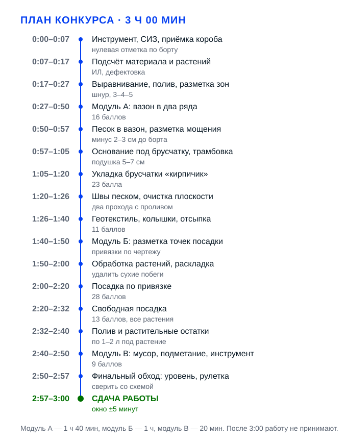
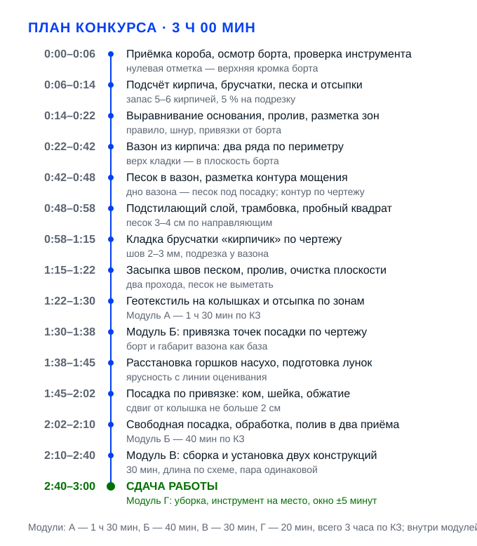
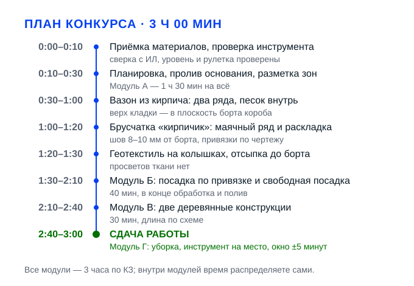

Ландшафтный дизайн (Р)
Задания ниже — официальные файлы «Абилимпикс» (источник: abilympics-russia.ru), разложенные по категориям. Решения написаны по тексту задания, регламенту и критериям оценки; в них указано, что именно проверяет эксперт.
Школьник
14–16 лет, базовый уровень заданияВыдержка из официального конкурсного задания: страницы, относящиеся к категории «Школьник» (стр. 5–7 источника).
Пошаговое решение
Задание для школьников — собрать фрагмент сада в рабочем коробе за три часа: выложить кирпичный вазон в два ряда, замостить участок брусчаткой «кирпичик» по схеме, отсыпать свободное пространство декоративным материалом и высадить растения по привязке и в зоне свободной посадки. На модуль А отведено 1 час 40 минут, на модуль Б — час, на уборку и подготовку сада к оцениванию — 20 минут, всего 100 баллов: 50 за элементы благоустройства, 41 за озеленение и 9 за чистоту, логистику и соблюдение Кодекса этики. Нулевая отметка для всех трёх элементов задана по уровню борта короба, поэтому первым делом его обмеряют, а уже потом берутся за разметку. Главный риск — утонуть в кладке вазона и не дойти до озеленения: 41 балл модуля Б теряется целиком, если на растения останется двадцать минут.

Задача 1. Принять площадку, проверить инструмент и разметить зоныМодуль А · 1 ч 40 мин · старт 0:00
Модуль А начинается не с кирпича, а с обмера: борт короба — это нулевая отметка, к которой потом приводят и вазон, и мощение, и отсыпку. Дальше считается материал, проверяется инструмент и наносится разметка на три зоны. На всё это в маршрутной карте уходит не больше 27 минут, и это правильные 27 минут: каждая из них экономит по пять на кладке, потому что не приходится переделывать.
Действие 1.1. Принять короб и зафиксировать нулевую отметку
Шаг 1.1.1
Обходим короб и осматриваем борт: он должен быть ровным, без трещин и отщепов, а кромка — на одной высоте по всем четырём сторонам. Берём рулетку и промеряем высоту борта в четырёх углах и посередине каждой стороны, записывая значения на бумаге. Верх борта и есть нулевая отметка, от которой отсчитываются вазон, брусчатка и отсыпка, поэтому расхождение даже в 10 мм нужно знать заранее, а не обнаружить на сдаче.
В конкурсном задании нулевая отметка задана именно по уровню борта короба, и все три элемента модуля А выводятся на неё. Если борт где-то просел, а вы этого не заметили, ровная по вашим замерам кладка окажется наклонной относительно площадки, и эксперт снимет баллы сразу по трём позициям: горизонтальность элемента вазона, высотная отметка мощения и высотная отметка поверхности отсыпки.
Четыре значения высоты борта записаны, разница между ними не больше 10 мм, кромка на глаз ровная, без волны. Если борт болтается или на углу скол — это вопрос эксперту до старта: после старта претензию по инфраструктуре не принимают.
Типичная ошибка — принять короб на глаз, не промерив кромку: потом весь сад идёт волной относительно борта, а искать причину в середине работы уже некогда. Вторая — начать с кладки вазона, не отметив нулевую отметку на борту маркером или малярной лентой.
Эксперт проходит по площадке в первые пять минут модуля А и смотрит, обмерял ли участник короб и понимает ли, от какой точки ведёт отсчёт. К этой же кромке он возвращается при проверке высотных отметок мощения и отсыпки.
Шаг 1.1.2
Раскладываем инструмент на свободной стороне короба в порядке, в каком он понадобится: рулетка, шнур в катушке, колышки, строительный уровень длиной не меньше метра, киянка или резиновый молоток, мастерок, кельма, ручная трамбовка, совковая и штыковая лопата, грабли, щётка-смётка, секатор или универсальные ножницы, лейка. Уровень проверяем на неподвижной полке: пузырёк должен совпадать с рисками и при развороте на 180 градусов.
Инструмент в задании проверяется отдельным пунктом, и это не формальность: сбитый уровень уводит в брак всю кладку, а тупая ножовка по брусчатке заставляет бить плитку и колоть кромку. Разложенный по порядку инструмент ещё и экономит время — на площадке в 3–4 квадратных метра поиск мастерка занимает больше, чем сама работа им.
Уровень показывает одинаковый результат при развороте на 180 градусов, трамбовка не люфтит на черенке, у лопаты и грабель целые черенки без трещин, секатор режет бумагу без зажёвывания. Всё перечисленное лежит в одной зоне и не мешает ходить по зоне разметки.
Самая частая ошибка — взять первый попавшийся уровень, не проверив его: кладка выходит ровной по прибору и кривой по факту, а на переделку двух рядов кирпича уходит полчаса из 100 минут. Вторая — разложить инструмент внутри зоны мощения и потом переставлять его каждые десять минут.
Эксперт оценивает организацию рабочего места и логистику модуля А: смотрит, лежит ли инструмент по зонам, не валяется ли он в проходе и не мешает ли вам самим работать.
Шаг 1.1.3
Надеваем перчатки для садовника и защитные очки, волосы убираем под головной убор или резинку, одежду заправляем так, чтобы ничто не свисало над инструментом. Очки не снимаем на весь блок работы с кирпичом и щебнем: скол от кирпича при подгонке летит именно в лицо, а не в сторону. Мобильный телефон, планшет и любые средства связи оставляем за пределами площадки — по особым указаниям задания их проносить запрещено.
Охрана труда и техника безопасности при работе с садовым и строительным инструментом — прямое требование конкурсного задания, и нарушение фиксируется сразу, вплоть до отстранения. Очки и перчатки при этом не только формальность: порезанная рука или ссадина останавливают работу на двадцать минут, а двадцать минут в модуле А — это недоложенный ряд брусчатки.
Очки сидят плотно и не сползают при наклоне, перчатки по размеру и не мешают брать мелкий инструмент, телефон сдан или оставлен вне площадки. Проверьте себя до первого удара киянкой, а не после. На сдаче средства защиты проверяют ещё раз, поэтому очки и перчатки не снимайте до сигнала.
Работать без очков «потому что мешают»: стружка и сколы летят при подгонке брусчатки и при расколе кирпича, и это самая частая травма на площадке. Вторая ошибка — держать телефон в кармане для фотографий промежуточного результата: это прямое нарушение особых указаний.
Эксперт и технический делегат проверяют средства индивидуальной защиты до старта и следят, не снимает ли участник очки в процессе работы. Он же отмечает, остаются ли очки на месте после первого часа работы.
Действие 1.2. Подсчитать материал и подготовить растения
Шаг 1.2.1
Пересчитываем всё, что выдано: кирпич на два ряда вазона, брусчатку по площади мощения, песок в мешках, геотекстиль, металлические колышки, мешки с отсыпкой и контейнеры с растениями. Площадь мощения и контур вазона считаем рулеткой по схеме: длину умножаем на ширину, делим на площадь одной брусчатки и прибавляем десять процентов на подрезку. Результат записываем рядом со схемой.
Подсчёт материала — часть критерия организации работ: если брусчатки не хватит на последний ряд, добрать её будет негде, а недоложенный ряд по схеме сразу виден и стоит баллов за привязку элемента мощения и параллельность. Десять процентов запаса — это не перестраховка, а норма: подрезка крайних элементов и сколы при подгонке съедают именно столько.
Количество кирпича сходится с тем, что требует схема на два ряда, брусчатки хватает с запасом на подрезку, растений ровно столько, сколько точек на чертеже плюс зона свободной посадки. Если чего-то меньше — идём к эксперту до старта, а не в середине кладки.
Классическая ошибка — считать брусчатку по площади без запаса: на подрезку уходит половина последнего ряда, и мощение остаётся с дырой у борта. Вторая — перепутать количество растений по привязке и для свободной посадки и оставить часть рассады в контейнере, что стоит 4 баллов за стопроцентное использование растений.
Эксперт проверяет, сходится ли фактическое количество элементов с заявленным в инфраструктурном листе, и отмечает, работал ли участник по счёту или набирал материал горстями.
Шаг 1.2.2
Отбраковываем материал до начала работы: кирпич с отбитым углом или трещиной откладываем в сторону и пускаем только в скрытую часть кладки, брусчатку с отколотой кромкой не берём в лицевые ряды, геотекстиль осматриваем на просвет — на нём не должно быть разрывов и заломов. Песок проверяем на ощупь: сжатый в кулаке комок должен рассыпаться, иначе в нём много глины и он не работает как подушка.
Из дефектного кирпича ровной кладки не выйдет, а скол на лицевой стороне в готовом вазоне виден сразу: за элемент вазона дают 16 баллов, и три из них снимаются за размер, ещё три — за горизонтальность. Глинистый песок под подушкой не даёт воде уходить, и после полива брусчатка проседает отдельными участками — это минус баллы за горизонтальность мощения.
Отбракованный материал лежит отдельно от рабочего, целого хватает на весь объём с запасом, геотекстиль без сквозных повреждений, песок сыпучий. Сомнительный кирпич отложен, но не выброшен: в конце его можно поставить внутрь кладки.
Пустить сколотый кирпич в лицевой ряд «лицом внутрь»: скол всё равно выходит на угол, а на вазоне это открытая со всех сторон конструкция. Вторая ошибка — не заметить, что песок влажный и комковатый, и трамбовать его как есть: подушка получается неравномерной.
Эксперт осматривает лицевые поверхности вазона и мощения именно на сколы и трещины — это отдельная позиция в критериях, и она проверяется визуально. Отдельно фиксируется, пущен ли сколотый кирпич в лицевой ряд.
Шаг 1.2.3
Разбираем растения: вынимаем каждый контейнер на стол, проверяем, живой ли корневой ком, нет ли сухих и поломанных побегов, не пересушен ли грунт. Всё, что подлежит удалению, срезаем секатором под углом, а не отламываем. Затем расставляем контейнеры по зонам — привязка и свободная посадка — и группируем по видам, чтобы в момент посадки не искать нужное растение по всему коробу.
Обработка растений с удалением сухих и повреждённых участков — отдельный критерий на 3 балла, и его проверяют на уже высаженных растениях, где подрезать что-то поздно. Группировка по видам экономит время в модуле Б, где на всё озеленение отведён час, а на разбор контейнеров уходит иногда четверть этого часа.
Срезанных сухих побегов больше нет, срезы чистые, без рваных волокон, контейнеры стоят по своим зонам и подписаны. Проверьте корневой ком пальцем: если он сухой и рассыпается, растение надо пролить прямо в контейнере до посадки.
Отламывать сухие побеги руками: рваный срез, растение теряет форму и на сдаче выглядит неопрятно. Вторая ошибка — разложить растения как попало и в модуле Б в спешке перепутать виды между привязкой и свободной посадкой.
Эксперт проверяет обработку растений уже на готовом саду: смотрит на срезы, на отсутствие сухих листьев и на то, все ли контейнеры разошлись по точкам.
Действие 1.3. Выровнять поверхность, пролить и разметить зоны
Шаг 1.3.1
Граблями снимаем крупные комья, камни, корни и мусор, затем разравниваем грунт по площади короба, сгребая лишнее к краям и подсыпая в понижения. Проливаем из лейки с рассекателем, не размывая поверхность струёй в одну точку, и даём воде уйти — обычно на это нужно десять-пятнадцать минут. Воду льём до тех пор, пока грунт не потемнеет на глубину не меньше пяти сантиметров.
Выравнивание и пролив прописаны в последовательности выполнения задания отдельным пунктом: сухой грунт нельзя разметить точно, потому что колышки и шнур показывают размеры по рыхлой поверхности, а после первого полива всё просядет. Пролив заодно уплотняет грунт, и потом брусчатка не проседает отдельными участками — это прямо влияет на горизонтальность мощения.
Поверхность без ям и бугров, комков крупнее двух сантиметров нет, вода впиталась и не стоит лужами. Проведите по грунту ребром правила: под ним не должно быть просвета больше сантиметра. Если после пролива образовалась лужа, грунт надо разрыхлить и подсыпать песка до ровной поверхности.
Разметить по непролитому грунту: после полива шнур провисает, размеры уезжают на сантиметр-два, а привязки в критериях измеряются именно сантиметрами. Вторая ошибка — пролить так, что вода стоит лужей: работать в грязи неудобно, а песчаная подушка под брусчаткой переувлажняется.
Эксперт смотрит на подготовку основания, когда начинает проверять высотные отметки: по пролитой и утрамбованной поверхности видно, что участник понимает порядок операций.
Шаг 1.3.2
Размечаем короб на три зоны: под вазон, под мощение и под отсыпку. За базу берём два взаимно перпендикулярных борта короба, от них рулеткой откладываем размеры со схемы и ставим колышки. Прямой угол проверяем методом 3–4–5: от угла отмеряем 30 и 40 сантиметров по двум сторонам, и расстояние между метками должно быть ровно 50 сантиметров. По колышкам натягиваем шнур — он и станет границей зон.
Вся дальнейшая работа держится на этой разметке: от неё считаются привязки элемента мощения и растения, за неё дают по 3 балла за каждую привязку. Если базовый угол выставлен неточно, прямоугольник мощения уходит ромбом, и параллельность элементов, которая стоит 4 балла, уже не спасти никакой аккуратной кладкой.
Диагонали размеченного прямоугольника равны между собой с точностью до 5 мм, углы сходятся по методу 3–4–5, шнур натянут без провиса и не касается грунта. Размеры со схемы перенесены полностью, включая ширину зоны отсыпки.
Тянуть шнур от одного борта и считать, что второй угол получится сам: ошибка в 2–3 градуса на трехметровой стороне даёт 10 сантиметров ухода по дальнему краю. Вторая ошибка — размечать по памяти с тренировки, хотя тридцать процентов задания как раз меняют размеры и местоположение элементов.
Эксперт подходит к разметке в начале работы и проверяет её рулеткой: именно по ней потом измеряют привязки элемента мощения и линию высадки растений. Если разметка сбита, он фиксирует это до начала кладки, а не после.
Шаг 1.3.3
Сверяем свою разметку со схемой задания построчно: размеры вазона, габариты мощения, ширину полос отсыпки, положение всех элементов относительно бортов короба. Отдельно смотрим, не поменялись ли размеры и местоположение элементов — тридцать процентов изменения касаются именно модулей 1, 2 и 3. Замеченные расхождения сразу переносим на грунт, а не держим в голове.
Схема на площадке — единственный законный источник размеров, и она может отличаться от той, что была на тренировке. Ошибка в положении вазона на 10 сантиметров тянет за собой сдвиг мощения и отсыпки, а проверяются они по отдельным привязкам, каждая по 3 балла.
Разметка совпадает со схемой по всем размерам, ни одного элемента не пришлось переносить после начала кладки. Пройдите по схеме пальцем от угла к углу и мысленно положите на грунт каждый элемент — совпадает ли.
Сверить только габариты, забыв про положение вазона относительно борта: на схеме он может стоять не по центру, и тогда вся композиция смещается. Вторая ошибка — заметить расхождение и промолчать, надеясь, что эксперт не измерит.
Эксперт сверяет разметку со схемой в первые же минуты и фиксирует, совпадают ли размеры и положение зон до того, как они закроются кладкой. Расхождение с чертежом в три сантиметра он считает ошибкой разметки, а не «допуском».
Задача 2. Выложить кирпичный вазон в два рядаМодуль А · элемент вазона · 16 баллов
Вазон — первая конструкция, которую видит эксперт, и единственная, у которой все четыре стороны открыты для осмотра. Шестнадцать баллов раскладываются так: два размера по 3 балла, две горизонтальности по 3 балла и 4 балла за соответствие схеме с высотой. Значит, важна не скорость, а первые два ряда, выставленные по шнуру и уровню, — переложить схватившийся раствор уже не выйдет.
Действие 2.1. Подготовить основание и разбить контур вазона
Шаг 2.1.1
Снимаем в контуре вазона растительный слой и выбираем грунт на глубину подушки — обычно это 5–7 сантиметров песка плюс толщина первого ряда. Досыпаем песок, разравниваем его правилом или рейкой и трамбуем ручной трамбовкой в два прохода: сначала вдоль, потом поперёк. Песок перед трамбовкой слегка увлажняем из лейки, чтобы он не разлетался и уплотнялся равномернее.
Подушка нужна, чтобы первый ряд кирпича лёг на плоскость, а не на рыхлый грунт: на неровном основании кирпич садится по-разному, и горизонтальность вазона, которая стоит 3 балла, уходит на первом же ряду. Трамбовка в два прохода в разных направлениях убирает локальные просадки, которые иначе проявятся уже после полива.
Подушка плотная: след от пальца на ней почти не остаётся, плоскость проверена правилом в двух направлениях, просвета под рейкой нет. Толщина слоя одинаковая по всей площади контура, без наплывов у краёв.
Уложить первый ряд на нетронутый грунт, подсыпав песок только под отдельные кирпичи: кладка садится неравномерно, и вазон начинает крениться. Вторая — трамбовать один раз и на глаз: одна половина подушки плотная, вторая рыхлая.
Эксперт оценивает элемент вазона целиком, но при разборе ошибок смотрит именно на основание: просевший угол всегда выдаёт непротрамбованную подушку. Он же смотрит, не осталось ли под подушкой растительного слоя.
Шаг 2.1.2
Отбиваем шнуром высоту первого ряда. Опорная точка — нулевая отметка по уровню борта короба, а высота вазона задана в два ряда, поэтому сначала замеряем реальную высоту кладки: ставим три кирпича друг на друга со швами по 10 мм, меряем штабель рулеткой и получаем фактическую высоту двух рядов. Отняв её от нулевой отметки, получаем верх первого ряда и натягиваем шнур на эту высоту по колышкам.
Расчёт от реальной высоты кирпича, а не от паспортной, снимает главную причину расхождения с заданием: у разных партий кирпич отличается по толщине на несколько миллиметров, и на двух рядах это даёт сантиметр. Пункт «элемент собран по схеме, высота соответствует заданию» стоит 4 балла, и он проверяется именно по высоте относительно нулевой отметки.
Шнур натянут строго горизонтально, проверено уровнем по всей длине, высота шнура совпадает с расчётной. Кирпич, которым мерили штабель, лежит рядом: по нему удобно контролировать каждый уложенный ряд.
Натянуть шнур на паспортную высоту кирпича и не учесть швы: к концу второго ряда вазон оказывается на сантиметр выше или ниже нулевой отметки. Вторая ошибка — натянуть шнур по борту, но не проверить его середину: длинный шнур провисает.
Эксперт измеряет высоту вазона от нулевой отметки и сравнивает со схемой — это прямой измеримый критерий на 4 балла. Он же сверяет высоту с расчётом по двум рядам и отмечает, попал ли участник в нулевую отметку.
Шаг 2.1.3
Разбиваем контур вазона на подушке: по схеме откладываем длину и ширину, вбиваем колышки в углы и натягиваем шнур по периметру. Диагонали промеряем рулеткой — у правильного прямоугольника они равны, расхождение больше 10 мм означает, что угол сбит. Контур проверяем ещё раз после натяжки, потому что колышек, вбитый под наклоном, тянет шнур в сторону.
Размеры элемента — это две отдельные позиции по 3 балла каждая, и меряют их по готовой кладке. Если контур изначально разбит с перекосом, никакая аккуратность в кирпиче его не исправит: кладку придётся либо перекладывать, либо сдавать с перекошенным прямоугольником.
Диагонали равны, размеры по шнуру совпадают со схемой, углы прямые. Проверьте положение контура относительно бортов короба — расстояние до каждого борта должно соответствовать схеме. Если диагонали разошлись, контур переставляют сейчас, а не выравнивают кладкой.
Разбить контур по внешним габаритам, забыв, что кладка идёт по наружной стороне шнура: готовый вазон оказывается на полкирпича больше или меньше схемы. Вторая ошибка — вбить колышки вровень с землёй и потерять их при подсыпке песка.
Эксперт обмеряет вазон по двум размерам и проверяет его положение на площадке относительно схемы — это первый измеримый пункт в чек-листе модуля А. Положение вазона на площадке он тоже сверяет со схемой.
Действие 2.2. Уложить первый ряд и вывести углы
Шаг 2.2.1
Готовим кладочный раствор: цемент и песок в пропорции один к трём, воды столько, чтобы раствор держал форму горки на мастерке и не стекал. Кладочную смесь или клей, если они в инфраструктурном листе, разводим по инструкции и даём отстояться пять минут. Толщину шва держим 10 мм: раствор разравниваем кельмой слоем чуть больше нужного, лишнее выдавится под весом кирпича.
Шов задаёт и прочность, и внешний вид: при шве 5 мм кладка теряет устойчивость, при 20 мм вазон расползается по высоте и не попадает в заданную отметку. Ровный шов одинаковой толщины — это то, по чему эксперт сразу видит уровень работы, и он же влияет на размер элемента.
Раствор однородный, без комков, горка на мастерке не растекается, шов после посадки кирпича одинаковый по длине всей стороны. Проверьте первый уложенный кирпич: он не качается и не продавливает раствор больше чем на пару миллиметров.
Сделать раствор жидким, чтобы кирпич легче садился: он выдавливается из шва, пачкает лицевую сторону, и приходится отмывать каждый кирпич. Вторая ошибка — класть на сухую подушку без раствора, если инфраструктурный лист предусматривает кладку на раствор: конструкция разваливается при первой же нагрузке.
Эксперт смотрит на швы в готовом вазоне: одинаковая толщина и аккуратная расшивка читаются как показатель квалификации, а небрежные швы снижают общее впечатление от элемента.
Шаг 2.2.2
Ставим первый угловой кирпич по шнуру и уровню: проверяем горизонтальность в двух направлениях, продольном и поперечном, и слегка подбиваем киянкой через деревянную прокладку. От этого кирпича будет идти весь ряд, поэтому тратим на него столько времени, сколько нужно. Второй угловой кирпич ставим по диагонали и натягиваем между ними шнур-причалку для ряда.
Первый кирпич задаёт плоскость всему ряду: если он с наклоном, следующие восемь-десять кирпичей лягут по наклонной плоскости, и горизонтальность элемента, которая стоит 3 балла, будет потеряна на всей стороне. Шнур-причалка после углов позволяет вести кладку без постоянных замеров.
Угловой кирпич не качается, пузырёк уровня в центре в обоих направлениях, верх кирпича совпадает со шнуром на высоте первого ряда. Если угол «прыгает», раствор под ним ещё подаётся — подбейте киянкой и перепроверьте.
Выставить угол на глаз и пообещать себе поправить потом: раствор схватывается за двадцать-тридцать минут, и «потом» наступает, когда ряд уже уложен. Вторая ошибка — бить киянкой прямо по кирпичу без прокладки: отбивается угол и появляется скол.
Эксперт проверяет горизонтальность элемента уровнем именно в углах и в середине стороны — по этим двум замерам и ставится оценка. Он смотрит, ровно ли сидит первый кирпич и не выдавило ли из-под него раствор.
Шаг 2.2.3
Ведём первый ряд от угла к углу, укладывая кирпич на раствор вплотную к шнуру, с одинаковым швом 10 мм. Каждый третий-четвёртый кирпич проверяем уровнем и подбиваем киянкой, если появился зазор под шнуром. Выдавленный раствор сразу срезаем кельмой, не дожидаясь, пока он схватится, а лицевую сторону протираем влажной тряпкой. Класть удобнее стоя сбоку от шнура, чтобы видеть зазор между кирпичом и нитью.
Кладка без промежуточного контроля накапливает ошибку: к концу стороны отклонение может составить 15–20 мм, и тогда горизонтальность придётся исправлять перекладкой всего ряда. Снятый вовремя раствор не оставляет на лицевой стороне пятен, которые потом приходится отбивать и которые портят вид вазона.
Ряд идёт ровно по шнуру, швы одинаковые, верх кирпичей в одной плоскости, лицевая сторона чистая. Проведите правилом по верху ряда — просвет не больше 3 мм на всей длине. Если отдельный кирпич выпирает на два-три миллиметра, его подбивают сразу, пока раствор не взялся.
Сначала выложить весь ряд насухо, а потом поднимать и сажать на раствор по одному: время уходит двойное, а точность не растёт. Вторая ошибка — оставить выдавленный раствор на лицевой стороне до конца работы: он схватывается и снимается вместе с верхним слоем кирпича.
Эксперт проходит вдоль ряда и смотрит шнур, швы и чистоту лицевой поверхности, а также фиксирует, нет ли перекосов между соседними кирпичами. Отдельно он отмечает, нет ли на лицевой стороне следов раствора.
Действие 2.3. Выложить второй ряд, проверить геометрию
Шаг 2.3.1
Поднимаем шнур-причалку на высоту второго ряда и начинаем с углов: перевязка в кирпичной кладке обязательна, поэтому вертикальные швы второго ряда должны приходиться на середину кирпича первого. Если по схеме вазон квадратный, на углу кладём кирпич с перевязкой вполкирпича, чтобы угол был замкнут, а не составлен из двух тычков. Каждый кирпич сажаем на раствор и проверяем уровнем.
Перевязка — это не украшение, а то, что держит конструкцию: без смещения швов вазон разваливается на отдельные стенки при первом же механическом воздействии, а эксперт видит непрофессиональную кладку. Кроме того, перевязанные швы читаются как признак аккуратной работы и влияют на оценку соответствия схеме.
Вертикальные швы второго ряда стоят над серединой кирпичей первого, углы замкнуты, шов по высоте такой же, как в первом ряду. Проверьте рукой: между рядами нет сквозной щели и кирпич не качается. Шов по высоте меряйте той же рейкой, что и в первом ряду.
Начать второй ряд с того же места, что и первый, без смещения: швы встают друг над другом, и стенка получается разрезанной на два независимых столбика. Вторая ошибка — оставить на углу четвертинку без перевязки: угол выкрашивается при первой нагрузке.
Эксперт осматривает углы вазона в первую очередь: именно там видно, понимает ли участник перевязку, и именно там чаще всего находят сколы и незаполненные швы.
Шаг 2.3.2
Проверяем горизонтальность вазона уровнем по четырём сторонам и двум диагоналям, ставя его на верхнюю плоскость кладки через правило для удлинения базы. Замеряем высоту от нулевой отметки борта в четырёх точках — по углам — и сравниваем с расчётной. Отклонение больше 5 мм на метр требует исправления, пока раствор не встал. Все замеры записывайте, чтобы сравнить их после снятия раствора.
Две горизонтальности — это 6 баллов из шестнадцати, и мерить их будут именно по верху кладки, а не по низу. Проверка по диагоналям ловит перекос, который не виден при замере по сторонам: вазон может быть ровным вдоль и заваленным поперёк. Кроме того, перекос поперёк виден только на диагоналях, а на сторонах он маскируется толщиной шва.
Пузырёк в центре по всем четырём направлениям, высота в углах отличается не больше чем на 5 мм, диагонали равны. Уровень лежит на правиле, а не на неровной кладке, — иначе он покажет рельеф кирпича, а не плоскость.
Мерить уровнем прямо по кирпичу, у которого выщерблена постель: прибор ложится на бугор и показывает ложный результат. Вторая ошибка — проверить только одну сторону и успокоиться. Третья ошибка — мерить по свежему раствору: кирпич ещё садится, и замер обманывает.
Эксперт прикладывает уровень к верху кладки в двух взаимно перпендикулярных направлениях и фиксирует результат по каждой из двух позиций отдельно. Он же смотрит, не «завален» ли вазон к борту короба.
Шаг 2.3.3
Промеряем готовый вазон рулеткой: длину и ширину по верху кладки, высоту от нулевой отметки, при необходимости — толщину стенки. Сравниваем с размерами схемы и записываем расхождение. Если размер ушёл из-за швов, пока раствор не схватился, ещё можно поджать ряд киянкой; если разница больше сантиметра, честнее переложить сейчас, чем сдавать с минусом баллов.
Два размера элемента — по 3 балла каждый, и это самые дешёвые баллы во всём модуле: их дают просто за внимательность при разметке и кладке. Переложить ряд из десяти кирпичей занимает пятнадцать минут, а потерять два размера — это минус 6 баллов из ста.
Длина и ширина совпадают со схемой с точностью до 10 мм, высота от нулевой отметки соответствует расчётной. Измеряйте по одному и тому же уровню — по верху кладки, а не по низу, иначе получите разницу в толщину ряда.
Мерить вазон по внешнему контуру, тогда как на схеме указан размер по осям или по внутреннему контуру: разница в полкирпича выглядит как грубая ошибка. Вторая ошибка — заметить расхождение и надеяться, что эксперт измеряет другую сторону.
Эксперт снимает два размера рулеткой и заносит их в протокол: это измеримые критерии, и здесь не бывает «на глаз». Он проверяет и то, совпадает ли высота с расчётной по двум рядам, а не только длина и ширина.
Шаг 2.3.4
Расшиваем швы расшивкой или концом мастерка, углубляя на 2–3 мм и уплотняя раствор, затем сметаем остатки щёткой. Раствор для расшивки берём тот же, что и для кладки, но чуть гуще. Лицевую поверхность протираем влажной тряпкой, а подсохшие пятна раствора снимаем аккуратно, не размазывая по кирпичу. Внутренние швы можно не расшивать, но внешние должны читаться одинаково по всей длине.
Аккуратная расшивка — это то, что отличает готовый вазон от «накиданной» кладки, и она входит в оценку элемента вместе с отсутствием сколов и трещин. Размазанный раствор на лицевой стороне к моменту оценивания выглядит как грязь и снимает впечатление от всей работы.
Швы одинаковой глубины и толщины, лицевая сторона чистая, сколов и наплывов раствора нет. Посмотрите на вазон с расстояния двух метров: швы должны читаться как ровная сетка. Проведите пальцем по шву: он должен быть уплотнён, а не осыпаться под рукой.
Затирать швы ладонью в перчатке: раствор размазывается по кирпичу тонким слоем, который потом не снимается и выглядит как серые разводы. Вторая ошибка — расшивать швы сразу после кладки, пока раствор не подсох: он вываливается из шва.
Эксперт осматривает лицевые поверхности и швы вазона, отмечая сколы, трещины и наплывы раствора отдельно от геометрии. Он смотрит на вазон с двух сторон: с лицевой и сбоку, где видны швы в профиль.
Действие 2.4. Заполнить вазон песком под посадку
Шаг 2.4.1
Засыпаем внутреннее пространство вазона песком слоями по 5–7 сантиметров, каждый слой проливаем водой из лейки и слегка трамбуем рукой в перчатке или торцом черенка. Песок досыпаем до уровня на 2–3 сантиметра ниже верха кладки, оставляя бортик под полив. Если по инфраструктурному листу предусмотрен плодородный грунт, верхние 10 сантиметров делаем из него, а песок оставляем как дренаж.
Свободное пространство вазона по заданию заполняется песком и готовится под высадку растений — это прямо прописано в последовательности выполнения. Слои с проливом нужны, чтобы песок не осел после первой же поливки и растения не оказались в яме глубиной в половину кома, что сразу снимает баллы за глубину посадки.
Песок плотный, след от пальца держится, поверхность ровная и на 2–3 см ниже кладки. Проверьте проливом: если вода уходит мгновенно и уровень песка просел, добавьте ещё слой и повторите. Уровень песка промерьте рулеткой от верха кладки в четырёх углах.
Засыпать песок одной кучей и разровнять сверху: низ остаётся рыхлым, и после посадки растения проваливаются. Вторая ошибка — засыпать до самого верха кладки: при поливе вода с песком уходит через швы и пачкает лицевую сторону вазона.
Эксперт проверяет готовность вазона к посадке: смотрит уровень заполнения и оценивает, можно ли в него сажать без дополнительной подготовки. Он же отмечает, нет ли на бортах вазона потёков песка после пролива.
Шаг 2.4.2
Проливаем заполненный вазон и смотрим, не вымывается ли песок через швы кладки. Если вымывается, швы внутри можно подбить раствором или подложить на дно вазона кусок геотекстиля перед засыпкой. Проверяем, что поверхность песка осталась ровной и на нужной отметке, и убираем рассыпанный песок с мощения и с борта короба. Если вода уходит слишком быстро, добавьте сверху немного грунта — он удержит влагу.
Просадка песка после полива — самая частая причина, по которой уже высаженные растения оказываются выше или ниже нужной отметки. Убранный сразу песок не разносится по площадке: к концу работы он попадёт в швы мощения и будет выглядеть как грязь на сдаче.
Песок не уходит через швы, поверхность осталась ровной, вокруг вазона чисто. Проверьте рукой: при нажатии ладонью песок пружинит, но не проваливается. Промерьте рулеткой расстояние от верха кладки до песка: оно должно остаться тем же, что было до пролива.
Пролить вазон один раз и начать сажать: через десять минут песок просядет, и часть растений придётся пересаживать. Вторая ошибка — оставить рассыпанный песок на борту короба: он попадёт в кадр при оценивании.
Эксперт осматривает вазон перед модулем Б и отмечает, готова ли в нём почва под посадку и не осталось ли песка на бортах. Ещё он проверяет, ровно ли лежит песок в вазоне и не осталось ли в нём комьев.
Задача 3. Замостить участок брусчаткой и отсыпать свободное пространствоМодуль А · мощение 23 б · отсыпка 11 б
Самая дорогая часть модуля А: двадцать три балла за мощение и одиннадцать за отсыпку. Здесь всё держится на двух вещах — высотной отметке «нуль» по уровню борта короба и параллельности рядов, которая стоит 4 балла. Брусчатку кладут от вынесенного шнура, а не от края ямы, швы засыпают песком в конце, геотекстиль под отсыпку крепят колышками по периметру, иначе его поднимет первый же ветер.
Действие 3.1. Разметить контур мощения и задать направление рядов
Шаг 3.1.1
Переносим контур мощения на грунт от двух базовых бортов короба: отмеряем расстояния до двух крайних точек участка, вбиваем колышки и натягиваем шнур по perimeterу. Каждую привязку промеряем дважды — от одного борта и от другого, чтобы поймать ошибку сразу. Записываем на бумаге два числа по каждой стороне: расстояние до борта и длину стороны, потом по ним же будем проверять готовое мощение.
Привязка элемента мощения — две отдельные позиции по 3 балла, и проверяют их именно рулеткой от бортов короба. Если контур сдвинут на 5 сантиметров в сторону, обе привязки теряются одновременно, хотя кладка может быть идеально ровной. Двойной промер от двух баз спасает от самой обидной ошибки — правильно отмеренной стороны при сбитом угле.
Контур замкнут, шнур натянут на одной высоте и не провисает, расстояния до бортов совпадают со схемой в каждой контрольной точке. Проверьте середину каждой стороны, а не только углы: длинный шнур выгибается.
Отмерить только длину и ширину, не привязав контур к бортам: прямоугольник правильный, но стоит не там, где нужно, и обе привязки обнуляются. Вторая ошибка — натянуть шнур по земле: он цепляется за грунт и уводит линию.
Эксперт снимает привязки рулеткой от борта короба в двух точках и сравнивает со схемой — это первые 6 баллов модуля А за мощение. Вторую привязку он берёт от другого борта — так проверяется угол контура.
Шаг 3.1.2
Задаём направление рядов брусчатки: по схеме рисунок «кирпичик» обычно идёт параллельно одной из сторон короба. Натягиваем базовый шнур по длинной стороне контура и от него отбиваем перпендикуляр шнуром по короткой, проверяя угол методом 3–4–5. Если по схеме рисунок развёрнут, базовый шнур ставим по тому направлению, которое указано, а не по стороне короба.
Параллельность элементов мощения стоит 4 балла — самую большую ставку среди измеримых пунктов мощения. Она проверяется между рядами и относительно борта, поэтому базовый шнур должен быть выставлен до укладки первого кирпича: потом направление уже не изменить, не разобрав всю плоскость.
Базовый шнур и перпендикуляр сходятся под прямым углом, диагонали контура равны, направление совпадает со схемой. Отойдите на два шага и посмотрите вдоль шнура: линия не должна «уходить» в сторону. Если линия уходит, перпендикуляр перебивают сразу.
Взять направление «как ляжет» и обнаружить на третьем ряду, что рисунок идёт по диагонали к борту. Вторая ошибка — выставлять перпендикуляр на глаз, без метода 3–4–5: перекос в градус на трехметровой стороне даёт 5 сантиметров на дальнем краю.
Эксперт смотрит на мощение вдоль рядов: параллельность видна глазом, а потом подтверждается замером между крайними рядами. Он же оценивает, совпадает ли направление рисунка с указанным на схеме.
Шаг 3.1.3
Проверяем разметку по контрольным точкам: промеряем обе диагонали контура, расстояния между противоположными сторонами в трёх местах, положение контура относительно вазона. Если вазон уже выложен, расстояние от его угла до контура мощения тоже входит в проверку — на схеме эти элементы связаны. Все замеры записываем рядом со схемой, чтобы в конце сравнить с готовым результатом.
Согласованность элементов между собой — то, что делает фрагмент сада композицией, а не набором отдельных конструкций. Ошибка в 3 сантиметра между вазоном и мощением выглядит как небрежность и влияет на оценку соответствия схеме, а исправлять её после укладки придётся разбором крайнего ряда.
Диагонали равны, расстояния между сторонами одинаковые, зазор между вазоном и мощением соответствует схеме. Проверка занимает пять минут и делается до первого кирпича. Расхождение больше десяти миллиметров — повод переставить контур, пока не уложен первый кирпич.
Пропустить эту проверку, потому что «разметка уже сделана»: именно на этом шаге и ловятся ошибки предыдущих двух. Вторая ошибка — проверять только габариты, не глядя на взаимное положение элементов. Третья — не записать замеры и потом искать причину по памяти.
Эксперт при обмере мощения сначала смотрит привязки, а потом — как мощение соотносится с вазоном и бортом. Он смотрит и на то, вынесены ли контрольные точки за пределы зоны кладки, чтобы их не сбить.
Действие 3.2. Подготовить и утрамбовать основание под брусчатку
Шаг 3.2.1
Выбираем грунт из контура на глубину песчаной подушки плюс толщина брусчатки. Толщину брусчатки меряем штабелем из трёх штук или рулеткой по одной, а толщину подушки берём по инфраструктурному листу — обычно это 5–7 сантиметров. Досыпаем песок с запасом в сантиметр и разравниваем правилом по двум направляющим, выставленным по шнуру. Глубину выемки меряем от натянутого шнура, а не от поверхности грунта.
Высота мощения должна выйти на «нуль» по уровню борта короба, а это значит, что глубину выемки считают от отметки, а не «на глаз»: ошибка в 2 сантиметра вверх — и брусчатка встанет выше борта, вниз — провалится, и оба случая стоят 3 баллов за высотную отметку.
Дно контура ровное, глубина одинаковая по всей площади, проверена рулеткой от шнура до дна в пяти точках. Песок разровнен, направляющие стоят по уровню и не прогибаются под правилом. Углы проверьте отдельно: там глубина чаще всего уходит на сантиметр.
Копать «примерно» и надеяться вытянуть высоту толщиной подушки: на площади в три квадратных метра разница в глубине в сантиметр видна сразу. Вторая ошибка — досыпать песок на невыбранный грунт: подушка получается тонкой и не работает.
Эксперт проверяет высотную отметку мощения уже по готовой плоскости, но причина недобора всегда в основании. Он же сопоставляет глубину выемки с толщиной брусчатки и подушки, чтобы плоскость вышла на нуль.
Шаг 3.2.2
Трамбуем подушку ручной трамбовкой в два-три прохода: вдоль длинной стороны, поперёк и по диагонали. Перед трамбовкой слегка увлажняем песок из лейки — сухой песок разлетается и не уплотняется. После трамбовки досыпаем песок до нужной отметки и проходим ещё раз, потому что слой садится на 5–10 мм. Трамбуем короткими ударами с перекрытием в половину подошвы, не пропуская края.
Плотная подушка — единственная защита от просадки: на рыхлом песке брусчатка садится неровно уже под собственным весом, и горизонтальность мощения, две позиции по 3 балла, уходит в минус. Трамбовка в разных направлениях убирает локальные рыхлые зоны, которые не видны глазом, но проявляются после первого полива.
След от подошвы на подушке почти не остаётся, плоскость проверена правилом в двух направлениях с просветом не больше 5 мм, отметка совпадает с расчётной. Проверьте углы отдельно: там песок уплотняется хуже всего.
Постучать трамбовкой по центру и уйти: углы и края остаются рыхлыми, и именно по краям брусчатка проседает сильнее всего. Вторая ошибка — трамбовать влажный песок, который липнет к подошве и вырывается комками.
Эксперт оценивает горизонтальность мощения в двух зонах, и просадка по краю читается как следствие плохой подготовки основания. Он обращает внимание на углы и края — там просадка проявляется первой.
Шаг 3.2.3
Выставляем маячные шнуры на высоту «нуль»: натягиваем два шнура по краям будущего мощения на уровне верхней кромки борта короба, проверяя высоту уровнем и рулеткой от борта. Третий шнур натягиваем поперёк — по нему будем проверять плоскость через каждые два-три ряда. Высоту шнура фиксируем на колышках за пределами зоны кладки, чтобы не сбить его инструментом.
Высотная отметка мощения — 3 балла и одна из самых частых потерь: «нуль» задан по борту, и мощение должно выйти ровно на эту линию, без ступеньки вверх или вниз. Маячные шнуры позволяют вести кладку без уровня под каждым кирпичом и при этом не терять отметку.
Все три шнура на одной высоте, проверено уровнем и рулеткой от борта, расхождение не больше 3 мм. Колышки стоят вне зоны кладки, шнур не касается песка. Промерите рулеткой от шнура до подушки в четырёх точках: расстояние должно совпасть с толщиной слоя.
Натянуть шнур по верху борта, но не проверить, ровный ли сам борт: мощение повторит волну короба. Вторая ошибка — поставить колышки внутри контура: первый же ряд их собьёт, и отметка потеряется. Третья ошибка — натянуть шнур на глаз, без уровня по всей длине.
Эксперт прикладывает правило и уровень к готовому мощению и сравнивает его с кромкой борта — расхождение по высоте видно сразу. Он же смотрит, не провисает ли шнур между колышками на длинной стороне.
Действие 3.3. Уложить брусчатку по схеме
Шаг 3.3.1
Начинаем с базового ряда по шнуру, укладывая брусчатку «кирпичиком» в одном направлении, с зазором 2–3 мм. Каждую брусчатку сажаем на песок и подбиваем киянкой через деревянную прокладку до уровня шнура, проверяя первый ряд уровнем через каждые две-три штуки. Первый ряд выкладываем полностью, прежде чем начинать второй. Песок под отдельные элементы не подсыпаем — только подбиваем до уровня шнура.
Базовый ряд задаёт и линию, и высоту всей плоскости: если он уложен с наклоном или с разной высотой, дальше ошибка только накапливается. Зазор 2–3 мм — это шов, в который потом засыпается песок; при нулевом зазоре брусчатка встаёт в распор и её выпирает волной, а при 6–8 мм шов не держит песок и края скалываются.
Ряд идёт строго по шнуру, верх брусчатки в одной плоскости, швы одинаковые, ни одна штука не качается при нажатии рукой. Проверьте уровнем по длине ряда и поперёк него. Первый ряд проверяйте дважды: сразу после укладки и после первых двух рядов второго.
Класть на сухой песок без подбивки: брусчатка остаётся выше шнура и потом садится неравномерно под нагрузкой. Вторая ошибка — начинать с середины, потому что «так удобнее»: крайние элементы потом не с чем выравнивать.
Эксперт смотрит на первый ряд вдоль шнура и проверяет плоскость уровнем — от этого ряда зависит вся оценка за параллельность. Он же проверяет, нет ли под брусчаткой пустот, из-за которых она качается.
Шаг 3.3.2
Продолжаем раскладку рядами, ведя их от базового и сохраняя рисунок «кирпичик»: каждый следующий ряд смещаем относительно предыдущего на половину элемента, чтобы поперечные швы не совпадали в линию. Брусчатку берём из поддона по одной, укладываем длинной стороной в направлении, заданном схемой, и подбиваем до общего уровня. Песок из швов, который выдавливается при подбивке, сметаем щёткой.
Смещение на половину элемента — это и есть рисунок «кирпичик»: без него швы выстраиваются в непрерывные линии, мощение теряет перевязку и расползается при нагрузке. Совпадающие поперечные швы эксперт видит сразу, и это бьёт по оценке соответствия схеме и общему впечатлению от раскладки.
Рисунок читается как кирпичная кладка, смещение одинаковое во всех рядах, швы ровные по ширине. Пройдите вдоль ряда и посмотрите на поперечные швы — они должны идти со ступенькой, а не в одну линию. Смещение проверяйте на трёх рядах подряд: в одном оно может случайно совпасть.
Выложить все ряды «в стык», без смещения: получаются длинные сквозные швы, и плоскость расползается при первом же нагружении. Вторая ошибка — брать брусчатку из разных поддонов вперемешку, если они отличаются по оттенку: пятна на готовой плоскости выглядят как брак.
Эксперт оценивает творческий подход в раскладке плитки, 4 балла, и смотрит именно на читаемость рисунка и на то, использованы ли возможности материала.
Шаг 3.3.3
Через каждые два-три ряда проверяем плоскость правилом с уровнем в продольном и поперечном направлениях и параллельность рядов рулеткой: расстояние между крайними рядами в начале и в конце должно совпадать. Заодно проверяем, не ушла ли линия ряда от шнура. Если появилась волна, подбиваем киянкой просевшие элементы и подсыпаем песок под выступающие.
Горизонтальность мощения проверяется в двух зонах по 3 балла, и параллельность — ещё 4. Контроль по ходу кладки стоит две минуты, а разбор готовой плоскости, чтобы поправить ушедший ряд, — двадцать. Плюс именно на этом шаге ловится накопление ошибки, которое на глаз до поры не видно.
Расстояние между рядами одинаковое по всей длине, просвет под правилом не больше 5 мм, линия ряда совпадает со шнуром. Если ряд ушёл на три-четыре миллиметра, выправьте его сейчас: после засыпки швов это уже не сделать.
Проверить только первые два ряда и потом увлечься: к краю накапливается перекос, и параллельность теряется целиком. Вторая ошибка — выравнивать просевшую брусчатку ударами по лицевой стороне без прокладки: остаются сколы.
Эксперт измеряет горизонтальность в двух точках и параллельность между рядами — это самые весомые измеримые пункты за мощение. Он также смотрит, не «гуляет» ли плоскость по краям у борта короба.
Шаг 3.3.4
Крайние элементы, где целая брусчатка не встаёт, размечаем по месту и подрезаем болгаркой с диском по камню или скалываем по линии. Режем на улице, в респираторе и очках, лицевую сторону не царапаем. Подрезанные элементы ставим резаной кромкой к борту, а не в открытую часть мощения. Схема может предусматривать свои акценты — тогда раскладку ведём по ней, а не по шаблону.
Творческий подход в раскладке плитки оценивается в 4 балла, и он проявляется как раз в том, как решены края, углы и акценты: аккуратно подрезанный крайний ряд выглядит как задуманный рисунок, а недоложенная полоса у борта — как недоделка. Резаная кромка у борта прячется, а на открытой части она читается как скол.
Крайние элементы встают без щелей больше 3 мм, подрезанная кромка скрыта у борта, лицевые поверхности без царапин. Проверьте, что ни один элемент не качается и не выпирает над плоскостью. Проведите ладонью по стыку подрезанного элемента с целым: перепад не должен чувствоваться.
Скалывать брусчатку наугад и вставлять обломки в ряд: кромка крошится, шов получается рваный, и крайний ряд переделывают в конце, когда время уходит на озеленение. Вторая ошибка — резать без очков и респиратора в закрытом пространстве.
Эксперт осматривает края и углы мощения: там видно, работал ли участник по схеме или заполнял пространство как получится. Он отдельно смотрит на углы контура: там чаще всего остаются щели и сколы.
Действие 3.4. Засыпать швы песком и очистить мощение
Шаг 3.4.1
Засыпаем швы просеянным песком: распределяем его по плоскости и вметаем щёткой в швы круговыми движениями, пока песок не перестанет уходить. Проливаем плоскость водой из лейки с рассекателем и повторяем засыпку ещё раз — после пролива песок садится и швы открываются. Обычно на два прохода уходит 10–15 минут, и это время окупается: заполненные швы держат отдельные элементы от сдвига.
Песок в швах — это то, что фиксирует брусчатку между собой: без него отдельные элементы ходят под ногой, крайние ряды расползаются, и мощение к моменту оценивания выглядит рыхлым. Заодно засыпанные швы дают ровную серую сетку, которая читается как аккуратно выполненная работа.
Швы заполнены по всей глубине, песок не проваливается при проливе, плоскость осталась ровной. Проверьте пальцем в нескольких швах: песок должен быть на уровне нижней трети глубины шва, а не на поверхности.
Засыпать швы один раз и не пролить: песок остаётся только сверху, при первом же поливе растений уходит вниз, и швы открываются заново. Вторая ошибка — вметать влажный песок: он комкуется и не проходит в шов.
Эксперт осматривает швы мощения и отмечает, заполнены ли они и нет ли пустых, в которых брусчатка стоит свободно. Он проверяет и то, не осталось ли на плоскости несметённого песка после засыпки швов.
Шаг 3.4.2
Сметаем с мощения остатки песка щёткой и аккуратно смахиваем в зону отсыпки, но не на грунт вокруг. Проверяем плоскость ещё раз правилом: после засыпки швов и пролива некоторые элементы могли сесть на 2–3 мм. Если появилась ступенька, подбиваем киянкой через прокладку и снова проверяем. Сметать удобно от дальнего края к ближнему, чтобы не ходить по очищенному.
Сметённый с мощения песок — прямое требование последовательности выполнения работ, и оно же влияет на чистоту рабочего места, которая входит в модуль В. Ступеньки после пролива — типичный результат неравномерной подушки, и они снимают баллы за горизонтальность, если их не убрать до сдачи.
Поверхность чистая, песок не лежит на брусчатке, ступенек и качающихся элементов нет. Проведите рукой по плоскости: она должна быть шероховатой и однородной, без песчаной пыли сверху. Пятна раствора проверяйте на свету: на серой брусчатке они почти не видны в тени.
Оставить песок на мощении «он же свой»: на сдаче плоскость выглядит серой и пыльной, а эксперт отмечает это как незавершённую работу. Вторая ошибка — сметать песок на отсыпку, где он уже не нужен, и портить вид декоративного слоя.
Эксперт проходит по мощению и смотрит на чистоту плоскости и на отсутствие перепадов между элементами. Он проходит по плоскости вдоль рядов и поперёк, отмечая перепады, качание и пятна на лицевой стороне.
Действие 3.5. Уложить геотекстиль и выполнить отсыпку
Шаг 3.5.1
Зону, свободную от мощения, очищаем от мусора, комков и остатков раствора. Раскатываем геотекстиль с нахлёстом на соседние полотна 10–15 сантиметров и с заходом на борт короба, чтобы материал не сползал. Полотно укладываем без складок, разглаживая от центра к краям, и подрезаем универсальными ножницами. Кромку полотна удобно подворачивать под борт, чтобы она не выглядывала из-под отсыпки.
Геотекстиль укладывают именно под отсыпку, и за укладку с закреплением дают 4 балла — самую дорогую позицию в блоке отсыпки. Его задача — не дать декоративному материалу уйти в грунт и не пустить сорняки снизу. Нахлёст в 10–15 сантиметров нужен потому, что при меньшем полотна разъезжаются при первой же подсыпке.
Полотно лежит без складок и разрывов, нахлёсты не меньше 10 см, заход на борт есть по всему периметру. Просветов грунта через материал быть не должно — проверьте на просвет и на глаз по всей площади. Нахлёст проверяйте рулеткой в двух местах, а не на глаз.
Раскатать геотекстиль в натяг и не оставить захода на борт: при подсыпке край подворачивается, и материал уходит под отсыпку целиком. Вторая ошибка — уложить полотно поверх мусора и комьев: они продавливают материал, и он рвётся.
Эксперт проверяет укладку геотекстиля до отсыпки или по открытым краям после: смотрит на нахлёсты и на отсутствие разрывов. Он отмечает и то, нет ли под полотном комьев грунта, которые его продавят.
Шаг 3.5.2
Закрепляем геотекстиль металлическими колышками: по углам, затем по периметру с шагом около 50 сантиметров, а на больших полотнах — ещё и в середине площади в шахматном порядке. Колышек забиваем киянкой через шайбу или подгибаем край полотна и прижимаем сверху. Натяжение проверяем рукой: полотно не должно подниматься вместе с рукой. Колышки забиваем до уровня полотна, не выше будущего слоя отсыпки.
Закрепление входит в ту же позицию на 4 балла, что и укладка, и без него работа не считается выполненной. Незакреплённый геотекстиль поднимается ветром и заворачивается при подсыпке, а потом просветы материала оказываются сверху, что прямо запрещено заданием: отсыпка должна быть плотной, без просветов.
Колышки держат полотно по всему периметру, натяжение равномерное, складок не появилось. Проверьте, что ни один колышек не торчит выше будущего слоя отсыпки — иначе он будет виден и мешать ровнению. Пройдите по периметру и подёргайте полотно в трёх местах: оно не должно отходить.
Закрепить только углы: середина полотна вздувается при подсыпке, и под ней остаётся воздушная полость, которая проваливается под ногой. Вторая ошибка — забивать колышки после отсыпки, когда полотно уже сдвинулось.
Эксперт проверяет, держится ли геотекстиль на месте, и отмечает незакреплённые участки по краям отсыпки. Он смотрит на натяжение полотна по краям и на то, не поднимается ли оно над грунтом.
Шаг 3.5.3
Выполняем отсыпку декоративным материалом, который выдали организаторы: морская галька, щебень, щепа или кора. Материал высыпаем небольшими порциями и разравниваем граблями, двигаясь от дальнего края к ближнему, слоем до нулевой отметки борта короба. Уплотняем руками в перчатках или торцом черенка, добиваясь плотной, однородной поверхности без просветов геотекстиля и без впадин.
Отсыпка оценивается по трём позициям: укладка геотекстиля с закреплением на 4 балла, высотная отметка поверхности на 3 и равномерность на 4 балла. Просветы геотекстиля прямо названы недопустимыми, поэтому слой должен быть одинаковым по всей площади и доходить до борта без зазора.
Поверхность отсыпки плотная, при нажатии ладонью не проваливается, геотекстиль нигде не просвечивает, отметка совпадает с нулевой по борту. Проверьте границу с мощением: там не должно быть ни щели, ни наползания материала на брусчатку.
Засыпать отсыпку одной кучей и разровнять «как получится»: у борта остаются впадины, в которых видно геотекстиль, и это минус 4 балла за равномерность. Вторая ошибка — насыпать выше борта: материал высыпается на площадку и портит общий вид.
Эксперт оценивает отсыпку визуально и рулеткой от борта: смотрит на однородность поверхности и на отсутствие просветов материала. Он же проверяет, не попал ли материал отсыпки на мощение и не осталось ли щели у борта.
Задача 4. Высадить растения по привязке и в зоне свободной посадкиМодуль Б · 1 ч · 41 балл
Модуль Б — самый весомый по баллам и самый быстрый по времени: час на 41 балл. Двадцать восемь баллов даёт посадка по привязке, где проверяют две привязки, три шага посадки, глубину, полив, обработку и линию высадки, и тринадцать — свободная посадка, где главное использовать все растения и не потерять глубину. Растения высаживают от размеченных колышками точек, а не «на глаз по картинке», и поливают сразу, пока корневой ком не осел в лунке.
Действие 4.1. Разметить точки посадки по чертежу
Шаг 4.1.1
Читаем чертёж по порядку: сначала находим базовые линии, от которых даны привязки, — обычно это борт короба и край мощения, потом выписываем на бумагу все числа: расстояние до первой точки, шаг посадки в ряду, количество растений в каждом ряду. Если на чертеже привязка дана от угла мощения, отмеряем именно от угла, а не от края брусчатки, потому что разница в 5 сантиметров влияет на оценку.
Привязка растения — две позиции по 3 балла, и шаг посадки — ещё три по 3 балла. Все эти баллы снимаются рулеткой от базовой линии, поэтому чтение чертежа до посадки важнее, чем аккуратность при выкапывании лунки. Пять минут, потраченные на выписывание чисел, экономят двадцать на пересадку.
Все числа с чертежа выписаны, базовая линия определена однозначно, количество растений по привязке совпадает с числом точек. Сверьте ещё раз, от чего дана привязка: от борта или от кромки мощения. Если привязка на чертеже дана в двух направлениях, выпишите оба числа.
Начать сажать «по картинке», не выписав размеры: через двадцать минут выясняется, что ряд идёт не с тем шагом, и пересаживать приходится все растения. Вторая ошибка — взять привязку от кромки мощения, когда на чертеже она дана от борта.
Эксперт проверяет привязки двух растений рулеткой от базовой линии — это самые однозначные измеримые пункты модуля Б. Он же сверяет количество растений в ряду с чертежом — недостача видна сразу.
Шаг 4.1.2
Наносим точки на грунт: в каждую точку вбиваем короткий колышек или ставим метку песком, а по линии ряда натягиваем шнур. Шаг посадки откладываем рулеткой от первой точки, а не «на глаз между колышками», и проверяем контрольный отрезок из трёх-четырёх шагов — он должен совпасть с расчётным. Точки в вазоне размечаем по той же логике, но с поправкой на то, что песок под ними уже пролитый и плотный.
Шаг посадки проверяется три раза в разных местах, и именно поэтому контрольный отрезок важнее отдельных замеров: мелкая ошибка в 1 сантиметр на каждом шаге к пятому растению превращается в 5, и линия высадки уезжает. Разметка по шнуру ещё и держит линию, которая стоит 4 балла.
Точки стоят по шнуру, шаг одинаковый по всему ряду, контрольный отрезок совпадает с расчётным. Проверьте рулеткой три шага подряд в начале, в середине и в конце ряда. Если контрольный отрезок расходится, сдвиньте все точки разом, а не по одной.
Откладывать шаг от предыдущего колышка, а не от первой точки: погрешность накапливается, и последнее растение выходит за границу ряда. Вторая ошибка — размечать точки на рыхлом песке, где колышек стоит криво и метка съезжает.
Эксперт измеряет шаг посадки в трёх местах и смотрит, держится ли линия высадки по всей длине ряда. Он также смотрит, не сбиты ли колышки при подготовке лунок и совпадает ли линия с чертежом.
Шаг 4.1.3
Определяем зону свободной посадки и её границы: по схеме это участок без привязки, где растения распределяются по композиционному замыслу. Границу зоны отмечаем шнуром или линией из песка, чтобы не залезть в привязку. Считаем, сколько растений остаётся для этой зоны, и сверяем с количеством в контейнерах — расхождение означает, что часть рассады не выставлена.
Свободная посадка оценивается отдельно и стоит 13 балла, из которых 4 — за стопроцентное использование растений. Если граница зоны не определена, часть растений уходит в привязку и ломает её шаг, а часть остаётся в контейнере, что сразу снимает 4 балла.
Граница видна на грунте, количество растений для свободной зоны посчитано и совпадает с фактическим. Проверьте, что зона не пересекается с мощением и отсыпкой: сажать в отсыпку нельзя. Посчитайте растения в контейнерах и сравните с разницей между общим количеством и точками привязки.
Оставить границу «в голове»: в спешке растения уходят за линию, и привязка сбивается. Вторая ошибка — отложить два-три растения «на потом, если останется место»: они остаются в контейнере и стоят баллов.
Эксперт смотрит, все ли контейнеры пусты к концу модуля Б, — это прямой признак стопроцентного использования растений. Он также сверяет количество растений в свободной зоне с остатком от привязки.
Действие 4.2. Обработать растения перед посадкой
Шаг 4.2.1
Берём растение в левую руку, секатором снимаем сухие и пожелтевшие листья, обрезаем поломанные побеги до ближайшей почки и убираем подсохшие соцветия. Срез делаем косой, на 3–5 мм выше почки, чтобы не оставить пенёк, который загнивает. Срезанный материал не бросаем в короб, а складываем в отдельный пакет — он пойдёт в отходы растительных остатков модуля В.
Обработка растений с удалением сухих и повреждённых участков — отдельный критерий на 3 балла, и проверяют его на уже высаженных растениях. Косой срез над почкой заживает быстрее и не даёт растению потерять форму: рваный срез от обрыва выглядит как повреждение и на сдаче читается как небрежность.
Сухих и поломанных побегов не осталось, срезы чистые и косые, в контейнере нет растительного мусора. Проверьте растение со всех сторон: повреждения часто прячутся с той стороны, которую не видно от вас.
Обрывать сухие листья руками: срез рваный, стебель травмируется, и через день растение теряет вид. Вторая ошибка — обработать только те растения, что на виду, и оставить неподрезанными те, что пойдут в глубину композиции.
Эксперт осматривает листья и побеги высаженных растений, отмечая сухие участки и рваные срезы. Он смотрит на срезы при ярком свете: рваные волокна и пенёк над почкой видны сразу.
Шаг 4.2.2
Проливаем растения в контейнерах за час до посадки: корневой ком должен быть плотным и влажным. Если корни сбились в войлок по стенкам, аккуратно расправляем их пальцами или надрезаем ком в двух-трёх местах ножом. Ком не разрушаем полностью — растение с открытыми корнями приживается хуже и дольше болеет. Ком с расправленными корнями приживается за неделю, а разорванный болеет месяц.
Политый ком держит форму и не осыпается при извлечении из горшка, а это напрямую влияет на глубину посадки, которая стоит 3 балла. Расправленные корни идут в стороны, а не заворачиваются в ком, и растение не задыхается в собственной корневой системе.
Ком влажный по всей глубине, при извлечении не разваливается, корни расправлены и не закручены спиралью. Проверьте, что в горшке нет застоявшейся воды. Проверьте ещё, что ком не пересушен: если он светлый и лёгкий, полейте и подождите десять минут.
Сажать в сухой ком: песок вокруг забирает влагу, и растение стоит вялым уже к оцениванию. Вторая ошибка — полностью отряхнуть корни от грунта: растение теряет часть корневой и не успевает прижиться за час.
Эксперт проверяет глубину посадки и общее состояние растений: вялые и поникшие сразу заметны на фоне остальных. Он проверяет и то, не разрушен ли ком: осыпавшиеся корни видны по грунту вокруг лунки.
Шаг 4.2.3
Раскладываем растения в контейнерах по размеченным точкам и смотрим на композицию целиком, не вынимая их из горшков. Высокие экземпляры ставим на задний план или в центр композиции, низкие — по краю, чтобы их не заслоняло. Проверяем, что лицевая сторона каждого растения обращена к зрителю, а не в борт короба. Раскладку делаем с протоптанной дорожки, а не по самой зоне посадки: иначе точки смазываются.
Предварительная раскладка — это единственный способ увидеть композицию до того, как её зафиксирует грунт, и за дизайнерский подход в свободной посадке дают 3 балла. Растение, повёрнутое к зрителю изнанкой, выглядит хуже, чем то же растение в правильном развороте, и на глаз это заметно сразу.
Раскладка читается как композиция: ярусы видны, ничто не заслоняет друг друга, все лицевые стороны обращены к зрителю. Отойдите на два шага назад и посмотрите со стороны входа на площадку. Если композиция читается плохо, переставьте контейнеры до посадки, а не после.
Сажать сразу из контейнера по порядку, не глядя на общую картину: через десять минут выясняется, что высокое растение закрывает три низких. Вторая ошибка — разложить растения по точкам и оставить их стоять на солнце на полчаса без полива.
Эксперт оценивает дизайнерский подход в свободной посадке — 3 балла — и смотрит на композицию целиком, а не на отдельные растения. Он смотрит и на разворот растений: изнанка к зрителю читается как небрежность.
Действие 4.3. Посадить растения по привязке
Шаг 4.3.1
Выкапываем лунку по размеру корневого кома: шириной на 5–8 сантиметров больше кома и глубиной ровно по его высоте, чтобы корневая шейка осталась на уровне поверхности. Дно рыхлим на 2–3 сантиметра, стенки не заглаживаем. В вазоне, где насыпан песок, лунку делаем черенком или совком, не разрывая соседние точки. Лунку копаем заранее, чтобы грунт на дне успел проветриться, но не пересох.
Глубина посадки — отдельный критерий на 3 балла, и он проверяется у нескольких растений. Мелкая лунка заставляет ставить ком выше уровня грунта, глубокая — заглубляет корневую шейку, и растение начинает загнивать. Рыхлое дно даёт корням возможность сразу пойти вниз, а не упираться в твёрдый слой.
Лунка по размеру кома, корневая шейка после посадки на уровне поверхности, дно рыхлое. Проверьте глубину черенком или рулеткой до и после — не на глаз. Промерьте расстояние от поверхности грунта до корневой шейки: оно должно быть нулевым.
Копать лунку глубиной «на полштыка» и ставить ком сверху: растение оказывается в насыпи, и после полива оно проседает ниже нужного уровня. Вторая ошибка — сделать лунку слишком широкой и засыпать ком песком, который не держит влагу.
Эксперт проверяет глубину посадки у двух-трёх растений, прикапывая пальцем уровень корневой шейки. Он смотрит на две-три лунки до посадки: по их размеру и глубине видно, понимает ли участник технологию.
Шаг 4.3.2
Ставим растение в лунку строго вертикально, держа за ком, а не за стебель, и засыпаем песком или грунтом слоями по 3–4 сантиметра, обжимая каждый слой ладонями вокруг кома. Стебель при этом держим ровно, чтобы растение не наклонилось при обжиме. Верхний слой выравниваем и слегка уплотняем, не образуя вокруг стебля воронку. Если грунт вокруг кома осел, досыпьте и обожмите ещё раз, не поднимая растение.
Обжим по слоям убирает воздушные полости, из-за которых корни пересыхают, а растение проваливается после первого полива — а провал сразу меняет глубину посадки, за которую дают 3 балла. Держать за ком, а не за стебель, нужно потому, что стебель у рассады ломается от малейшего усилия.
Растение стоит вертикально, ком не продавлен, грунт вокруг плотный и без полостей, корневая шейка на уровне поверхности. Уплотнение проверяйте ладонью: под ней не должно быть пустот, а грунт не должен пружинить.
Засыпать лунку одной порцией и притоптать ногой: ком сдавливается, часть корней рвётся, и растение останавливается в росте. Вторая ошибка — засыпать выше корневой шейки, что губит растение и стоит баллов за глубину.
Эксперт оценивает посадку по глубине и по тому, стоит ли растение ровно, не наклонено и не выдавлено из грунта. Он же проверяет, не засыпана ли корневая шейка: заглубление видно по черешкам нижних листьев.
Шаг 4.3.3
Выдерживаем шаг и линию: после каждого растения проверяем расстояние до шнура и до соседа, при необходимости сдвигаем на 1–2 сантиметра, пока ком держится. Все растения ряда ставим лицевой стороной в одну сторону, чтобы линия читалась. В вазоне следим за тем, чтобы растения не закрывали край кладки. Проверку линии делаем сбоку, пригнувшись вдоль шнура: сверху отклонения скрадываются.
Линия высадки соответствует схеме — 4 балла, самая дорогая позиция в блоке озеленения. Она проверяется как визуально, вдоль ряда, так и замером расстояния до шнура. Одно растение, выбившееся из линии на 5 сантиметров, рушит впечатление от всего ряда, хотя остальные стоят идеально.
Все растения ряда на одной линии, шаг одинаковый, лицевые стороны обращены в одну сторону. Посмотрите вдоль ряда пригнувшись: отклонения видны гораздо лучше, чем сверху. Если растение выбилось из линии на три и больше сантиметров, пересадите его сразу.
Посадить все растения и только потом проверить линию: сдвигать уже политые растения приходится с риском повредить корни. Вторая ошибка — высаживать растения с разворотом в разные стороны, из-за чего ряд выглядит хаотично.
Эксперт оценивает линию высадки визуально и замером, а также проверяет, совпадает ли количество растений в ряду со схемой. Он же смотрит, не закрывают ли растения борт вазона и край мощения.
Действие 4.4. Выполнить свободную посадку
Шаг 4.4.1
Распределяем оставшиеся растения по зоне свободной посадки так, чтобы использовать все до последнего: сначала расставляем контейнеры, оцениваем композицию, потом сажаем. Крупные экземпляры — по одному, мелкими заполняем промежутки, не оставляя пустых пятен. Если растение осталось лишним, ему находится место внутри композиции, а не за бортом короба.
Стопроцентное использование растений — 4 балла, и проверяется это простым подсчётом пустых контейнеров. Дизайнерский подход на 3 балла оценивается по композиции, а композиция из двух-трёх растений, расставленных по углам, читается как незаконченная работа.
Все контейнеры пусты, зона свободной посадки заполнена без пустых пятен, композиция читается с входа на площадку. Пересчитайте контейнеры до и после — цифры должны сойтись. Если контейнер остался, значит, ему не нашлось места в композиции — найдите его сейчас.
Оставить два-три растения «на всякий случай» в контейнере: это прямая потеря 4 баллов. Вторая ошибка — заполнить зону первым, что под руку попалось, без учёта высоты и цвета, и получить плоскую невыразительную группу.
Эксперт проверяет, все ли растения высажены, и оценивает композицию свободной посадки отдельно от привязки. Он оценивает и плотность посадки: пустые пятна в свободной зоне читаются как незаконченная работа.
Шаг 4.4.2
Сажаем по той же технологии, что и по привязке: лунка по размеру кома, корневая шейка на уровне поверхности, обжим слоями, вертикальная установка. Соблюдаем ярусность: высокие растения сзади или в центре, средние — вокруг, низкие и стелющиеся — по переднему краю. Контраст по цвету листвы и форме используем как акцент, но не превращаем посадку в пёстрый набор.
Глубина посадки в свободной зоне — ещё 3 балла, и она проверяется точно так же, как в привязке: ошибка здесь стоит столько же. Ярусность и контраст — это то, из чего складывается дизайнерский подход, за который дают 3 балла, и то, что отличает продуманную посадку от заполнения пустоты.
Корневые шейки на одном уровне, растения не наклонены, ярусы читаются, пустых мест и комков грунта между растениями нет. Проверьте глубину у двух-трёх растений и посмотрите на зону с расстояния. Ярусы проверяйте с линии входа, а не изнутри короба.
Заглубить растения в свободной зоне, потому что «здесь не меряют»: глубина проверяется отдельной позицией и там. Вторая ошибка — поставить все растения одного размера в линию, и зона выглядит как грядка, а не как фрагмент сада.
Эксперт оценивает глубину посадки и дизайнерский подход, сравнивая свободную зону с привязкой по аккуратности. Он сравнивает глубину посадки в свободной зоне и по привязке: разница видна сразу.
Действие 4.5. Полить посадки и убрать растительные остатки
Шаг 4.5.1
Поливаем из лейки с рассекателем, не размывая грунт: по 1–2 литра под растение, ждём, пока вода впитается, и повторяем. В вазоне и на песчаных зонах воды нужно больше, потому что песок пропускает её быстрее. Поливаем вечерним или утренним светом — на открытой площадке вода на листьях не должна стоять под прямым солнцем. Проливаем в два приёма, чтобы вода не скатывалась по краям лунки.
Полив растений — отдельный критерий на 3 балла в каждом блоке озеленения, то есть 6 баллов суммарно. Свежепосаженное растение без полива вянет за двадцать минут, и к оцениванию оно стоит с поникшими листьями, что бьёт и по обработке, и по общему впечатлению от сада.
Грунт влажный на глубину не меньше 5 сантиметров, вода не стоит лужами, растения не размыты. Проверьте пальцем у основания: если сухо — полейте ещё раз, песок сохнет быстро. Проверьте два-три растения в разных зонах: в вазоне песок сохнет быстрее, чем в грунте.
Полить один раз понемногу: вода смачивает только верхний сантиметр, и корневой ком остаётся сухим. Вторая ошибка — лить струёй из ведра: грунт размывается, растение обнажается и падает на бок. Третья — полить до посадки и не полить после, рассчитывая на влажный ком.
Эксперт проверяет полив на ощупь и по внешнему виду растений: поникшие листья и трещины в грунте видны сразу. Он смотрит на полив и в вазоне: песок там сохнет быстрее, и растения вянут первыми.
Шаг 4.5.2
Собираем растительный материал: срезанные листья, обрезки побегов, пустые контейнеры, остатки грунта и песка с мощения. Складываем в отведённые организаторами ёмкости, контейнеры — отдельно от растительных остатков. Метём площадку вокруг посадок, не задевая растения, и убираем землю с брусчатки и отсыпки. Отходы выносим сразу, а не складываем у борта: у борта их видно при оценивании.
Уборка растительного отработанного материала прописана в модуле Б отдельным пунктом, а чистота рабочего места — это 3 балла модуля В. Мусор на площадке к моменту оценивания читается как незавершённая работа, даже если все элементы выполнены правильно.
Площадка без обрезков и упаковки, мощение и отсыпка чистые, ёмкости с отходами закрыты и стоят в отведённом месте. Пройдите по периметру и посмотрите вниз: мелкий мусор заметен именно от борта. Обрезки в вазоне проверяйте отдельно: они падают между растениями и остаются незамеченными.
Оставить обрезки в коробе «они же органические»: на сдаче они выглядят как грязь, а мокрые листья на брусчатке оставляют пятна. Вторая ошибка — смешать контейнеры с растительными остатками и потом искать их при сдаче инвентаря.
Эксперт оценивает чистоту площадки и наличие растительных остатков в зоне посадки при финальном обходе. Он же проверяет, не остались ли пустые контейнеры и упаковка за коробом, где их не видно.
Задача 5. Убрать площадку, сдать инвентарь и предъявить садМодуль В · 20 мин · 9 баллов
Региональный модуль на 20 минут и 9 баллов: чистота рабочего места, организация режима работы и логистика, соблюдение Кодекса этики. Эти баллы набираются не работой с материалом, а тем, как вы завершаете смену: убранный короб, инструмент на месте и спокойный, точный отчёт эксперту. Здесь же решается, увидят ли вообще то, что вы сделали за три часа.
Действие 5.1. Убрать территорию и сдать инструмент
Шаг 5.1.1
Собираем мусор и растительные остатки по всей площадке, а не только в коробе: проверяем борта, зону вокруг мощения и место, где лежал материал. Мелкие обрезки и песок удобно собирать щёткой и совком. Отходы складываем в те ёмкости, которые указали организаторы, и не оставляем мешки рядом с коробом. Ёмкости с отходами выносим в отведённое место сразу, как заполнились, не дожидаясь сдачи.
Уборка мусора и растительных остатков — прямая формулировка модуля В, и за чистоту дают 3 балла. Площадка оценивается целиком, а не по коробу: мусор за бортом эксперт тоже видит, и он портит впечатление от аккуратно выполненного сада. Кроме того, убранная площадка позволяет спокойно пройти финальный обход и ничего не пропустить.
Площадка чистая в радиусе шага от короба, ёмкости заполнены и закрыты, растительные остатки отделены от строительного мусора. Пройдите вокруг короба полный круг и посмотрите под ноги. Если ёмкости нет, мусор складываем в мешок и ставим его у выхода, а не у короба.
Смести весь мусор в угол короба «чтобы потом вынести»: в угол смотрят первым делом при оценивании. Вторая ошибка — выбросить обрезки в отсыпку, где их не видно, но они всплывут при поливе. Третья ошибка — оставить мусор в ведре на виду: формально убрано, а оценивается как грязь.
Эксперт оценивает чистоту рабочего места визуальным обходом, начиная именно с углов и бортов короба. Он же смотрит на место, где лежал материал: разбросанный песок и обрезки там остаются дольше всего.
Шаг 5.1.2
Подметаем мощение и отсыпку, смахиваем песок и землю с бортов, протираем кромку борта влажной тряпкой. Отсыпку не подметаем щёткой, а аккуратно разравниваем ладонью, чтобы не вытащить наверх геотекстиль. Если на брусчатке остались пятна раствора, снимаем их аккуратно, не размазывая по плоскости. Борт протираем от дальнего угла к ближнему, чтобы не оставалось разводов от тряпки.
Чистота поверхности — это то, что видит эксперт раньше, чем размеры и отметки: пятна раствора и песчаная пыль на мощении читаются как незавершённая работа. Разравнивание отсыпки ладонью заодно восстанавливает ту равномерность, за которую дают 4 балла.
Мощение чистое и без пятен, отсыпка ровная и без просветов геотекстиля, борт протёрт. Проверьте, не осталось ли следов от обуви на песке в вазоне — они заметны на светлом фоне. Пройдите вдоль борта с тряпкой ещё раз: разводы хорошо видны на белом фоне.
Мыть брусчатку водой из лейки: вода уходит в швы, вымывает песок, и швы открываются перед оцениванием. Вторая ошибка — подметать отсыпку жёсткой щёткой и вытаскивать наружу край геотекстиля. Третья — тереть пятно раствора сухой тряпкой: оно размазывается и въедается в поры.
Эксперт осматривает поверхность мощения и отсыпки на предмет загрязнений и нарушения равномерности слоя. Он проверяет и кромку борта: именно по ней видно, доведена ли уборка до конца.
Шаг 5.1.3
Складываем инструмент в отведённое организаторами место: лопаты, грабли и трамбовку — в стойку или на поддон, мастерок и кельму — в ящик, уровень и рулетку — в кейс, секатор — закрытым. Инструмент очищаем от песка и раствора и протираем сухой тряпкой: мокрый металл к утру ржавеет. Отдельно проверяем, что все колышки и шнуры смотаны и сданы. Считаем инструмент по тому набору, который получали.
Складывание инструментов в отведённое место — прямое требование модуля В, и оно входит в те же 3 балла за чистоту. Инструмент, оставленный на борту короба, попадает в кадр при оценивании, а потерянный инвентарь оформляется актом и портит итоговый протокол участника.
Инструмент чистый и сухой, лежит по типам в отведённом месте, количество совпадает с полученным. Проверьте, что ничего не осталось в коробе и на мощении. Уровень и рулетку проверьте на целостность: разбитый инструмент тоже фиксируется.
Свалить инструмент в кучу у выхода: это видно и оценивается как неорганизованность. Вторая ошибка — убрать инструмент мокрым от раствора, что портит его и оставляет пятна на месте хранения. Третья — оставить инвентарь на борту «на минуту»: эта минута длится до сдачи.
Эксперт проверяет наличие и состояние инвентаря при приёмке рабочего места после завершения модуля В. Он смотрит и на чистоту инструмента: песок на лопате означает, что её не готовили к сдаче.
Действие 5.2. Проверить сад и предъявить его эксперту
Шаг 5.2.1
Обходим готовый сад глазами эксперта и проверяем по порядку: горизонтальность и высота вазона, привязки и параллельность мощения, отсутствие просветов геотекстиля в отсыпке, глубину посадки и линию высадки растений. Каждую позицию проверяем инструментом, а не памятью: уровень, рулетка и правило лежат под рукой до последней минуты. Найденное исправляем сразу, пока есть время.
Это тот же чек-лист, по которому будет работать эксперт: элемент вазона на 16 баллов, мощение на 23, отсыпка на 11, озеленение на 41. Финальный обход стоит десять минут и регулярно приносит больше баллов, чем весь предыдущий час работы, потому что ловит именно те мелочи, которые снимают по одному-два балла.
Все измеримые позиции проверены и совпадают с нормой: высота в пределах 5 мм, привязки в пределах 10 мм, швы заполнены, просветов нет. Если что-то не сходится, исправляйте сразу, а не после сигнала о готовности.
Пропустить финальный обход, потому что «и так всё видно»: с уровня глаз не видно ни просевшей брусчатки, ни просвета геотекстиля у дальнего борта. Вторая ошибка — начать исправлять одну мелочь и не успеть проверить остальное.
Эксперт проходит по этому же маршруту после сигнала о готовности, и совпадение вашей проверки с его проверкой — лучший показатель организации работы. Он также фиксирует, пользовался ли участник инструментом при финальной проверке.
Шаг 5.2.2
Сверяем фактическое время с маршрутной картой: модуль А должен был закончиться на 1:40, модуль Б — на 2:40, уборка — к 3:00. Если вы отстаёте, сокращаем необязательные операции, а не обязательные: полив, глубину посадки и высотные отметки не трогаем никогда. Логистика оценивается отдельно, поэтому порядок действий в карте должен быть виден и объясним.
Организация режима работы и логистика — 3 балла, и это оценка не результата, а процесса: успел ли участник распределить время, не бросался ли от одной операции к другой, оставил ли резерв на уборку. Последовательность и время внутри модулей участник определяет сам, поэтому ссылаться на регламент не получится.
К 2:40 элементы благоустройства и озеленение закрыты, на уборку остаётся не меньше 20 минут. Проверьте часы, а не ощущение: на площадке время идёт быстрее, чем кажется. Если по карте вы отстаёте больше чем на десять минут, сокращайте декор, а не полив.
Оставить уборку на последние пять минут: тогда мусор сметается в спешке, инструмент бросается, и теряются сразу 3 балла за чистоту и 3 за логистику. Вторая ошибка — продолжать улучшать композицию, когда норматив уже вышел.
Эксперт фиксирует, в какое время закрыты модули, и сопоставляет это с маршрутной картой участника. Он же оценивает, не бросался ли участник между операциями: это видно по порядку на площадке.
Шаг 5.2.3
Сообщаем эксперту о готовности спокойно и по делу: коротко называем, что выполнено, какие материалы и растения использованы, где находятся элементы по схеме. Стоим рядом, но не мешаем обмеру, отвечаем на вопросы точно и без оправданий. Кодекс этики соблюдаем на всей площадке: не обсуждаем других участников, не подсказываем и не подсматриваем, телефон не достаём.
Соблюдение Кодекса этики — 3 балла, и они снимаются за конкретные вещи: споры с экспертом, использование запрещённых средств связи, вмешательство в работу других участников. Спокойный и точный отчёт при этом работает на впечатление: участник, который понимает, что сделал, оценивается выше при равном результате.
Отчёт прозвучал, вопросы эксперта закрыты, замечаний по поведению нет, телефон остался вне площадки. Проверьте, что рабочее место в момент предъявления выглядит так же, как при вашем обходе. Убедитесь, что инструмент убран до сигнала: во время оценивания уже не убирают.
Начать объяснять, почему что-то не получилось, вместо того чтобы назвать, что сделано: эксперт оценивает результат, а не обстоятельства. Вторая ошибка — отойти от короба во время оценивания и вернуться, когда уже поздно что-то поправить.
Эксперт слушает отчёт и задаёт один-два вопроса по схеме: ответ показывает, работал ли участник осознанно или повторял заученную последовательность. Он отмечает и то, как участник держится при обмере: спокойствие входит в оценку.
Студент
учащиеся колледжей и техникумовВыдержка из официального конкурсного задания: страницы, относящиеся к категории «Студент» (стр. 5–9 источника).
Пошаговое решение
Задание категории «Студенты» — устроить фрагмент сада в рабочем коробе за три часа: разметить территорию, выложить искусственный вазон из кирпича в два ряда, замостить фрагмент брусчаткой «кирпичик» по чертежу, отсыпать свободное пространство декоративными материалами, высадить растения по привязке и в зоне свободной посадки, собрать и поставить две деревянные конструкции декоративного забора и сдать место. Времени по модулям немного: на благоустройство отведено полтора часа, на озеленение сорок минут, на малые архитектурные формы тридцать и на уборку двадцать. Вся геометрия сада привязана к борту короба: и верх вазона, и плоскость мощения выводятся на «нуль» по его уровню, поэтому первые двадцать минут решают, попадут ли остальные сто шестьдесят в чертёж. Ниже — порядок работ, проверки после каждого перехода и типичные ошибки, которые стоят дороже всего.

Задача 1. Выполнить элементы благоустройства (модуль А)Модуль А · 1 ч 30 мин из 3 ч
Модуль А — половина конкурсного времени: разметка территории, кладка искусственного вазона из кирпича в два ряда, мощение фрагмента брусчаткой «кирпичик» по чертежу и отсыпка свободного пространства декоративными материалами. Всё здесь привязано к одной базе — верхней кромке борта короба, она же нулевая отметка. Девяносто минут делятся примерно так: двадцать на приёмку, подсчёт и основание, пятнадцать на разметку, двадцать пять на вазон, двадцать на мощение, десять на геотекстиль и отсыпку.
Действие 1.1. Принять короб и проверить инструмент
Шаг 1.1.1
Начинаем не с кирпича, а с обхода: по периметру короба находим борт, от которого отсчитывается нулевая отметка, и запоминаем его верхнюю кромку как базу. Рулеткой промеряем внутренние размеры по четырём сторонам и обе диагонали, числа записываем прямо на распечатке схемы карандашом, а не «в голове». Заодно отмечаем, где кромка завалена или подмята, где дно просело и стоит ли вода в углу: глухой звук под ручкой лопаты означает плотный грунт, звонкий — пустоту, и такой участок придётся пролить и досыпать.
Модуль А занимает девяносто минут из ста восьмидесяти — половину конкурса, и вся его геометрия держится на борте: брусчатка и вазон выводятся на «нуль» по его уровню. Если сразу не понять, какая кромка базовая и ровная ли она, дальше каждый замер придётся переделывать, а переделка разметки съедает время у озеленения.
Размеры по сторонам и диагонали записаны, разница диагоналей не больше одного сантиметра — значит, короб стоит прямоугольником. Кромка борта ровная, без завалов: приложите правило и посмотрите на просвет.
Сразу начать раскладку кирпича «по глазку»: к моменту мощения выясняется, что кромка борта завалена, и плоскость приходится поднимать или опускать на полтора-два сантиметра — вся кладка идёт на переделку.
Эксперт проходит мимо в первые пять минут и смотрит, с чего участник начал: с замеров или с инструмента. Участник с рулеткой и записанными числами читается как понимание того, что работа начинается с базы, а не с материала, и эту оценку он не меняет до конца модуля.
Шаг 1.1.2
Инструмент проверяем по списку работ, а не «что попалось»: строительный уровень (пузырёк не врёт на ровной полке — проверьте переворотом на 180 градусов), рулетка пять метров, угольник, шнур в колышках, киянка с резиновым бойком, ручная трамбовка, мастерок, щётки, лопата, секатор. У трамбовки смотрим ручку, у уровня — целость колбы, у киянки — трещины в бойке, у болгарки — кожух и диск, у секатора — замятие на лезвии. Всё сомнительное меняем до старта, а не в середине модуля.
Требование техники безопасности из раздела 2.1 задания прямо говорит о исправном садовом и строительном инструменте, а на оценку это работает дважды: сломанная ручка трамбовки рвёт руку в перчатке, а сбитый уровень превращает контроль кладки в фикцию — плоскость уходит незаметно, пока не станет видно на глаз.
Уровень, перевёрнутый на 180 градусов на одном и том же месте, показывает тот же пузырёк. Шнур натягивается и не провисает, киянка сидит на ручке без люфта, секатор режет сырой стебель, а не мнёт его.
Взять уровень, у которого вытек пузырёк, и выводить по нему брусчатку: отклонение в два-три миллиметра на каждом ряду даёт к краю вазона перекос в сантиметр, и кладку приходится разбирать уже после засыпки швов.
Смотрит на исправность инструмента при старте модуля и отмечает, пользуется ли участник уровнем по ходу кладки или только достаёт его в конце. Отдельно фиксирует, надета ли защита при подрезке и убраны ли руки с линии реза — это пункт, который он проверяет в момент работы, а не по итогу.
Шаг 1.1.3
Рабочее место разбиваем на три полосы: слева от короба — материал (кирпич, брусчатка, мешки с песком и отсыпкой), справа — инструмент, у входа — бак для мусора и растительных остатков. Мешки с сыпучими ставим на поддон или на кусок плёнки, чтобы не тянуть песок из-под ног. Проход вдоль борта оставляем не уже семидесяти сантиметров — по нему вы будете ходить полтора часа. Мелочь раскладываем в лоток или ведро: колышки, шнур, шаблон шва, карандаш, биты.
Внутри модулей время участник распределяет самостоятельно, и потери идут не на работе, а на переходах: за инструментом через весь короб можно сходить тридцать раз. Разложенные зоны снимают эти переходы, а мусорный бак у входа не даёт растительным остаткам смешиваться с отсыпкой, которую потом выбирать бесполезно.
Материал лежит кучками по видам, инструмент — в пределах шага от короба, проход свободен, мусорный бак пуст и стоит у входа. Пройдите линию от вазона до отсыпки: ничего не должно попадать под ногу. Уровень и рулетка должны лежать на виду, а не в кармане.
Свалить всё в одну кучу у борта: кирпич бьётся о брусчатку, песок засыпает разметку, а на поиск уровня уходит время, которого потом не хватит на озеленение. Положить уровень и рулетку на борт короба: инструмент сбивается, кромка под ним скалывается, и нулевая отметка перестаёт быть нулевой — вся высотная привязка едет на эти два-три миллиметра.
Организацию места эксперт видит на первом же обходе и переносит впечатление на всю работу: разложенные материалы читаются как понимание плана. Смотрит, свободен ли борт: инструмент на кромке читается как непонимание того, что кромка — базовая отметка.
Действие 1.2. Подсчитать и подготовить материал
Шаг 1.2.1
Кирпич на вазон считаем по периметру, а не на глаз: длину контура делим на длину кирпича плюс шов в один сантиметр, округляем вверх, умножаем на два ряда — по заданию высота вазона два ряда — и добавляем пять-шесть штук на бой и подгонку углов. Если по инструкции по эксплуатации (ИЛ) кладка идёт на растворе, отдельно считаем сухую смесь: на два ряда уходит примерно полмешка на погонный метр.
Вазон в два ряда — это единственный элемент модуля А, который нельзя доделать частями: недобор кирпича виден сразу как рваный ряд, а добор со стороны организаторов занимает время модуля. Просчёт на два кирпича в перевязке стоит всей геометрии вазона, потому что последний кирпич в ряду задаёт угол.
Кирпич разложен по рядам с запасом, шов везде одинаковый — проверьте на пяти кирпичах подряд, положив их насухо: разница швов не больше двух миллиметров. Количество сходится с расчётом плюс запас. В штабеле нет битого кирпича, все камни одного размера и цвета — разброс по длине не больше трёх миллиметров, иначе шов придётся всё время подгонять.
Считать «примерно по площади»: на углах с перевязкой расход выше, и к концу второго ряда кирпича не хватает — ряд остаётся незамкнутым, а вазон по чертежу не читается. Пустить битый кирпич в нижний ряд «его не видно»: при заполнении вазона песком и поливе он крошится, стенка проседает, и ряд над ним даёт перекос на весь фасад.
Эксперт сверяет количество материала с ИЛ и смотрит, остался ли запас: аккуратно посчитанный материал — часть критерия организации работ. Пересчитывает запас и осматривает штабель: если битый кирпич лежит в общей куче, он считает, что отбраковки не было.
Шаг 1.2.2
Брусчатку «кирпичик» считаем по площади мощения и по рисунку раскладки: сначала по чертежу определяем площадь фрагмента, умножаем на количество штук в квадратном метре для выбранной схемы (при укладке «кирпичиком» расход выше, чем при прямой), добавляем пять процентов на подрезку у борта и у вазона. Отдельно откладываем десяток штук целыми — ими выводится первый ряд от нулевой отметки.
Мощение идёт по чертежу, и площадь в чертеже конечная: ошибка в рисунке раскладки ломает привязку у края, а подрезка «на месте» без запаса оставляет недобор в полметра у вазона. Пять процентов запаса — это как раз то, что уходит на подгонку к кривому борту, который вы нашли при осмотре.
Брусчатка разложена штабелями по рисунку, целые штуки отделены, подрезанные считаются отдельно. Прикиньте на сухую один квадрат: число рядов и штук сходится с расчётом без остатка. Пробный пояс укладывается целыми камнями, подрезка выходит к борту, а не к вазону, и её ширина не меньше половины камня.
Укладывать первый ряд от угла, не отложив целых штук, и подрезать всё подряд: к середине фрагмента целых не остаётся, швы расходятся, рисунок «кирпичик» перестаёт читаться. Вторая ошибка — начать раскладку поперёк чертежа: у вазона появляется клин из подрезанных камней, шов идёт елочкой, и весь фрагмент приходится перекладывать в середине модуля.
Смотрит на раскладку первого квадрата и на то, совпадает ли рисунок с чертежом, а не просто «ровно лежит». Сравнивает направление швов на мощении с чертежом: это первое, что он видит, подходя к коробу.
Шаг 1.2.3
Сыпучие считаем объёмом: площадь подстилающего слоя умножаем на его толщину. Под брусчатку кладём три-четыре сантиметра песка или песчано-цементной смеси, под отсыпку — два-три сантиметра материала плюс запас на просадку. Геотекстиль берём полотном с нахлёстом в десять-пятнадцать сантиметров по краям, колышки — по одному на полметра контура. Песок берём просеянный, без глины: комок сухого песка в кулаке должен рассыпаться, а не слипаться.
Отсыпка должна быть равномерной и плотной, а просветы геотекстиля по заданию не допустимы: значит, считать надо не «мешки», а кубические метры по площади и толщине. Недосыпанный слой читается как просадка у борта, пересыпанный — как бугор выше нулевой отметки, и оба варианта снимают балл за плоскость.
Песок и отсыпка стоят в отдельных кучах с запасом на глаз не меньше ведра, геотекстиль отрезан с нахлёстом, колышки пересчитаны. Отсыпка однородная по цвету и фракции, песок сыпучий, без глины и комьев: комок, сжатый в кулаке, должен рассыпаться. Толщину слоя проверьте линейкой в двух-трёх точках — она должна совпадать с расчётом.
Сыпать отсыпку «до борта» без подстилающего слоя и запаса: после полива и утрамбовки материал садится на сантиметр, у геотекстиля открываются просветы по краям, и отсыпку приходится снимать и досыпать.
Проверяет толщину слоя линейкой в двух-трёх точках и отсутствие просветов полотна — это прямой пункт критерия отсыпки. Смотрит на цвет и однородность отсыпки в разных концах зоны — пятна и разный оттенок он замечает сразу.
Действие 1.3. Выровнять и пролить основание
Шаг 1.3.1
Снимаем лишний грунт и выбираем всё, что выпирает: камни крупнее пяти сантиметров, корни, куски кирпича, обломки бордюра. Лопату держим под углом тридцать-сорок градусов и работаем от середины к краям, чтобы не подрезать борт короба. Вынутый грунт складываем в тачку или на плёнку — обратно он уже не пойдёт, а втаптывать его в основание нельзя. По ходу съёма грунта проверяем плотность пяткой: там, где нога оставляет глубокий след, грунт придётся уплотнять трамбовкой, а не только проливать.
По разделу 2.3 перед разметкой поверхность надо выровнять и пролить водой. Камень или корень под подстилающим слоем даёт бугор в два сантиметра, и брусчатка над ним садится с перекосом: на плоскости мощения это сразу видно, а исправить можно только снятием ряда.
По всей площади под лопатой однородный грунт без твёрдых включений. Проведите тыльной стороной грабель: ничего не цепляется, борозды остаются ровные. След от пятки не глубже сантиметра, вынутый грунт лежит отдельно и просеян — если он втоптан обратно, основания как этапа не было.
Разрыхлить верхние пять сантиметров и оставить корни травы: они продолжают расти, поднимают песчаную постель, и через час работы мощение идёт волной, которую уровнем не вытянуть без перекладки. Вторая ошибка — втоптать вынутый грунт обратно в основание: под ним остаются пустоты, и брусчатка садится пятнами.
Смотрит на вынутый грунт: сложен ли он отдельно или втоптан обратно — второе читается как непонимание подготовки основания. Если грунт лежит ровной кучей на плёнке, подготовка была осознанной.
Шаг 1.3.2
Выравниваем площадку правилом или ровным бруском: срезаем бугры и подсыпаем в понижения смесью песка с землёй, а не чистым песком — песок выдавливается под нагрузкой. Правило ведём на себя длинными движениями, один конец по маячному бруску, второй по грунту, и после каждого прохода смотрим просвет. Цель — плоскость без ям глубже сантиметра и уклон от вазона к краю короба не больше сантиметра на метр.
Плоскость основания — это будущая плоскость мощения: слой песка в три сантиметра не сможет вытянуть яму в пять. Кроме того, небольшой уклон нужен для воды: при поливе растений вода не должна стоять на брусчатке у борта, а на ровной площадке в коробе без стока она стоит долго.
Прикладывайте правило в четырёх направлениях: просвет не больше сантиметра, ям и бугров нет, уклон уходит от вазона к краю отсыпки. Маячные бруски сняты, борозды от них засыпаны и утрамбованы. Отдельно проверьте места, где стояла тачка и где вы ходили: там грунт просажен сильнее всего, и правило покажет просвет именно на этих пятнах.
Выровнять «на глаз» и сразу начать разметку: разметка ляжет по бугру, шнур провиснет, а перекос вылезет при кладке первого ряда, когда переделывать уже поздно. Тянуть правило короткими движениями и получить «стиральную доску»: постель ложится волной, и брусчатка повторяет её — перепад виден на просвет под правилом, положенным на борт.
Прикладывает правило к основанию, если застаёт этот переход, и смотрит не «ровно ли», а «нет ли ям»: перекос он всё равно найдёт рулеткой позже, а вот отсутствие уклона видно по воде после полива.
Шаг 1.3.3
Проливаем площадку из лейки с рассекателем, а не из шланга струёй: вода должна впитаться, а не размыть выровненную плоскость. Льём в два приёма с перерывом в пять-семь минут, давая грунту осесть, затем проверяем, где образовались просадки, и подсыпаем туда песком с землёй, снова проходя правилом. Проливаем утром и, если стоит жара, повторяем перед самой укладкой: сухая поверхность тянет воду из постели, и песок под брусчаткой остаётся рыхлым.
Пролив — требование раздела 2.3, и нужен он технически: сухой разрыхлённый грунт садится под нагрузкой на сантиметр-полтора, а трамбовать его до укладки брусчатки бессмысленно. Вода сажает основание сразу и показывает все слабые места, пока их ещё можно исправить горстью песка.
Вода ушла без луж, просадки меньше сантиметра, поверхность под ногой не проминается. Пройдите по площадке: под пяткой не должно чавкать. Основание влажное по всей площади, но без свободной воды, следов обуви нет, просадки подсыпаны.
Залить основание так, что вода стоит лужей: работать по такому грунту нельзя — подстилающий слой размешивается с грязью, и брусчатка «плывёт» при первой же трамбовке. Полить из шланга под напором: струя вымывает мелкую фракцию и делает борозды, которые потом видны как волны на мощении, а вода уходит в отсыпку и размывает её край.
Отмечает, пролито ли основание вообще: сухая площадка перед укладкой видна по пыли из-под обуви. Вторая его проверка — не размыта ли разметка: целые линии означают, что пролив сделан до разметки, а не после неё.
Действие 1.4. Разметить территорию на зоны
Шаг 1.4.1
Переносим с чертежа контур мощения: отмеряем от внутренней кромки борта две привязки — по длинной и по короткой стороне — и забиваем первые два колышка, между ними натягиваем шнур в двух-трёх сантиметрах над грунтом. Прямой угол строим правилом 3–4–5: тридцать сантиметров по одной стороне, сорок по другой, между метками ровно пятьдесят. Шнур натягиваем без провиса — на десяти метрах он даёт ложную линию в сантиметр.
Разметка — первое, что перечислено в результате модуля А, и всё остальное привязывается к ней: если контур ушёл, ушла и раскладка брусчатки, и граница отсыпки. Угол, выставленный на глаз, даёт разницу диагоналей в пять-семь сантиметров, и это уже видно без инструмента.
Между колышками ровно столько, сколько на чертеже, диагонали контура равны с точностью до пяти миллиметров, угол проверен по правилу 3–4–5. Шнур не провисает при нажатии пальцем и возвращается, колышки стоят вертикально, линия с торца читается одной нитью.
Отбить контур мелом по грунту и не проверять диагонали: после первой же трамбовки линия стирается, а перекошенный прямоугольник замечают уже по готовому мощению, когда край подрезан клином. Натянуть шнур «примерно» и выставлять по нему кирпич: провис в сантиметр переносится в кладку как плавная дуга, и вазон получается с «пузом» на длинной стороне.
Сверяет контур рулеткой с чертежом в момент разметки: это быстрая проверка, и она сразу показывает, читал ли участник размеры. Линию он смотрит с торца — так же, как смотрят ровность забора, и провис видит сразу, а участник часто нет.
Шаг 1.4.2
Вазон размечаем от центра: находим точку по двум привязкам от борта, отбиваем осевые крест-накрест и откладываем половину габарита в четыре стороны двумя засечками от двух базовых сторон, а не цепочкой размеров. Внутрь контура сразу снимаем грунт на глубину первого ряда, чтобы кладка шла в готовое корыто. Кирпич, поставленный насухо, показывает, попадает ли разметка в размер по фасаду.
Опорная точка вазона по заданию — нулевая отметка по уровню борта короба: ошибиться в привязке центра значит сдвинуть весь вазон и нарушить композицию чертежа, где он держит ось мощения. Габарит, снятый от центра, а не от угла, симметричен и не накапливает ошибку к четвёртой стороне.
Осевые линии пересекаются в одной точке, расстояния от центра до всех четырёх сторон контура равны, кирпич, поставленный насухо, ложится внутри линии без выхода за неё. Контур вазона симметричен относительно осей, корыто под первый ряд вынуто на одну глубину по всему периметру, стенки корыта вертикальные.
Откладывать вазон от угла короба цепочкой размеров: каждая следующая привязка прибавляет свою погрешность, и вазон съезжает на два-три сантиметра, обнажая подрезанную брусчатку у края. Две засечки от двух сторон стоят минуту.
Смотрит на симметрию вазона относительно мощения — это видно глазом и проверяется рулеткой за десять секунд. Привязку он меряет от двух сторон борта, а не от кромки мощения.
Шаг 1.4.3
Границу отсыпки и мощения отмечаем тем же шнуром: сначала продолжаем линию мощения до борта, затем отбиваем вторую линию по кромке вазона. Зоны под разные материалы (галька, щебень, щепа, кора) делим по прямой, а не по дуге, и размечаем колышками с бирками, которые ставим вне зоны засыпки, чтобы их не закрыло первым слоем. Колышки вбиваем не глубже пяти сантиметров, чтобы они не мешали отсыпке.
Отсыпка по заданию занимает всё пространство, свободное от мощения, и должна быть равномерной: без размеченной границы материал начинает «залезать» на брусчатку и в швы, а зоны разных материалов съезжают. Бирки нужны ещё и потому, что после укладки мощения к этим колышкам уже не подойти.
Линии читаются целиком, от борта до борта, колышки стоят по одной линии без изломов и вне зоны отсыпки. Граница между мощением и отсыпкой прямая по всей длине, бирки видны, площади зон совпадают с чертежом с точностью до десятой доли квадратного метра.
Отсыпать без разметки, «до брусчатки»: под подстилающим слоем песок уходит в отсыпку, край мощения теряет упор, а на границе появляется грязная полоса, которую потом не убрать без снятия брусчатки. Такая полоса видна с линии обзора.
Проверяет границу двух покрытий после отсыпки: ровная линия стыка — отдельный пункт критерия. Отмечает, читается ли композиция зон: две-три зоны разного материала должны выглядеть как решение, а не как остатки.
Шаг 1.4.4
Перед тем как брать кирпич в руки, проходим по разметке целиком: рулеткой проверяем две диагонали контура мощения и диагонали вазона, угольником — углы, шнуром — совпадение линий с чертежом. Все числа записываем на распечатке схемы рядом с соответствующими размерами, чтобы потом не вспоминать. Отдельно проверяем привязку к борту в двух-трёх точках рулеткой и записываем отклонение, если оно есть: с числом в руках проще объясниться с экспертом, чем с фразой «вроде по чертежу».
Проверка разметки занимает пять минут, а исправление готовой кладки — сорок: разобранная брусчатка с засыпанными швами идёт в бой, кирпич с раствором очистить невозможно. Записанные числа — это ещё и ваш аргумент, если эксперт сомневается в привязке: разметка переделывается за секунды, а мощение — за минуты, которых в модуле нет.
Диагонали мощения расходятся не больше одного сантиметра на метр, диагонали вазона — не больше половины сантиметра, углы прямые по угольнику. Привязки к борту совпадают со схемой в пределах пяти миллиметров, и все числа записаны на распечатке рядом с размерами чертежа.
Пропустить проверку и начать кладку «раз уж размечено»: перекос обнаруживается на втором ряду брусчатки, когда первый уже засыпан песком и снять его без потерь нельзя. Проверить только диагонали и не проверить привязку к борту: контур получается прямоугольным, но сдвинутым на пять сантиметров, и у борта остаётся полоса подрезки вместо целого камня.
В карте оценки разметка территории идёт отдельным пунктом, и эксперт фиксирует её до начала кладки — после неё проверить привязку уже нельзя. Берёт рулетку и меряет одну-две привязки: если числа сходятся, он больше к разметке не возвращается.
Действие 1.5. Выложить вазон в два ряда
Шаг 1.5.1
Под первый ряд снимаем грунт на глубину кирпича плюс сантиметр и подсыпаем песчано-цементную смесь, разравнивая её правилом. Первый угловой кирпич ставим по разметке и сразу выводим его верх на нулевую отметку по борту: прикладываем правило от борта к кирпичу и смотрим просвет, подбивая киянкой через деревянную прокладку, а не по кирпичу напрямую. Смесь под первый ряд готовим густой: сжатая в кулаке, она должна держать форму, но не отдавать воду.
Кладка вазона идёт материалом по ИЛ, а высота — два ряда, поэтому первый ряд задаёт и плоскость, и итоговую высоту: ошибка в сантиметр на первом кирпиче превращается в сантиметр на всём вазоне. Киянка через прокладку нужна потому, что прямой удар скалывает угол и оставляет след, который видно на фасаде.
Верх первого кирпича в одной плоскости с бортом: просвет под правилом не больше двух миллиметров, кирпич не качается под рукой, постель под ним плотная, без пустот по краям. При осаживании из-под кирпича выступает ровная полоска смеси, а не вода — жидкая постель выдавится под вторым рядом и уведёт высоту.
Поставить кирпич прямо на грунт и «поднять» его песком потом: постель неравномерная, кирпич садится при первом же дожде или поливе, и ряд перекашивается на пять-восемь миллиметров. Положить жидкий раствор: кирпич «плывёт» под киянкой, выдавливает смесь на фасад, и его приходится снимать и очищать от раствора уже в спешке.
Прикладывает правило к борту и к первому кирпичу — это первая точка контроля высоты вазона, и она видна с трёх метров. Смотрит на чистоту фасада первого кирпича: потёки смеси, засохшие на лицевой стороне, он замечает сразу и считает дефектом.
Шаг 1.5.2
Выкладываем первый ряд по натянутому шнуру: каждый кирпич сначала ставим на место без нажима, проверяем шов шаблоном, и только потом осаживаем киянкой до шнура. Шов держим один сантиметр, горизонтальность проверяем уровнем на ребре кирпича. Дойдя до угла, разворачиваем кладку и ведём её в обратную сторону, чтобы ряд замкнулся без клина. Шаблон для шва делаем из обрезка кирпича нужной толщины.
Шов постоянной ширины — это и есть «кладка по ИЛ»: с ним вазон читается как одна конструкция, а не как набор кирпичей. Ведение кладки от двух углов навстречу друг другу не даёт накопить ошибку швов, из-за которой последний кирпич не встаёт в размер. Подсыпка под посаженный кирпич разрывает постель, и он садится при поливе: шов уходит, линия ряда ломается, а переложить один камень в готовом ряду без снятия соседних нельзя.
Шов одинаковый по всему ряду — проверьте не меньше пяти швов подряд, разница не больше двух миллиметров. Уровень на ребре показывает пузырёк в центре, ряд замкнут, углы прямые. Шов постоянный, кирпичи не качаются, ряд читается прямой линией с торца.
Вести кладку в одну сторону от угла, «подтягивая» швы у последнего кирпича: напротив угла появляется шов в три сантиметра, вазон выглядит разваленным, а перевязка со вторым рядом становится невозможной.
Смотрит на швы и на замкнутость контура — это две вещи, которые эксперт оценивает по фасаду вазона, не заглядывая внутрь. Проводит рукой по верхней плоскости ряда: выступы и провалы в два миллиметра он чувствует, даже не доставая уровень.
Шаг 1.5.3
Второй ряд кладём с перевязкой: каждый кирпич перекрывает шов нижнего ряда не меньше чем на четверть длины, углы перевязываем «в замок». Постель делаем тонкую, сантиметра полтора, и сажаем кирпич строго над нижним, контролируя вертикальность стенки уровнем сбоку. По ходу ряда проверяем высоту от борта — она должна оставаться нулевой. Перед вторым рядом очищаем верх первого щёткой от крошек и пыли — иначе постель ложится на песок и держит плохо.
Высота вазона два ряда задана заданием, и перевязка — единственное, что держит такую стенку без раствора в швах: без перевязки второй ряд садится точно на швы первого и вазон разваливается при первом поливе растений. Тонкая постель нужна, чтобы не поднимать высоту выше нуля.
Швы верхнего ряда смещены относительно нижнего, вертикальные швы не совпадают, перевязка соблюдена. Стенка стоит по уровню с отклонением не больше двух миллиметров на ряд, верхняя линия читается прямой, а верх вазона держится в нулевой плоскости борта.
Класть второй ряд «шов в шов» для скорости: конструкция теряет жёсткость, и при заполнении песком стенка расходится, а углы провисают — вазон приходится разбирать. Класть второй ряд от одного угла, не натянув шнур: середина провисает на пять миллиметров, и на фоне борта это заметно как «седло» — выровнять можно только снятием ряда.
Проверяет перевязку и вертикальность стенки, а также то, не поднялся ли вазон выше нулевой отметки: на фоне борта это видно без рулетки. Горизонталь верхней линии он смотрит на просвет — самая быстрая проверка вазона.
Шаг 1.5.4
Свободное пространство внутри вазона заполняем песком, как требует задание, слоями по десять-пятнадцать сантиметров, проливая каждый слой и не трамбуя стенку изнутри. Верх песка не доходим до кромки кирпича на три-четыре сантиметра — это посадочный уровень для растений, и он же запас под полив. Сразу разравниваем и слегка уплотняем ладонью. Песок засыпаем, стоя вне вазона: наступить внутрь — значит раздавить ещё не схватившуюся постель.
Песок в вазоне — это не заполнитель, а посадочный субстрат: он держит влагу хуже грунта, поэтому слои проливаются, иначе после высадки растения провалятся вместе с корневым комом. Занижение на три-четыре сантиметра не даёт воде и грунту вымываться через швы на фасад кирпича. Нагрузка на стенку изнутри — главная причина, по которой только что сложенный вазон расходится по швам.
Песок плотный, при нажатии ладонью почти не проминается, вода уходит за минуту. До верхней кромки кирпича остаётся ровный отступ в три-четыре сантиметра по всему периметру, стенка не имеет следов выдавливания изнутри, швы снаружи сухие, без подтёков.
Засыпать песок до самого верха и не пролить: после посадки растений и первого полива уровень садится на пять сантиметров, корневые шейки оказываются выше грунта, и растения начинают засыхать. Вторая ошибка — утрамбовать песок, стоя внутри вазона: постель под первым рядом продавливается, и углы расходятся.
Смотрит на уровень песка относительно кромки и на чистоту фасада: подтёки на кирпиче читаются как небрежность и снимают балл за аккуратность. Проверяет, не разошлись ли углы: расхождение в сантиметр он увидит и без замера, по тени в шве.
Действие 1.6. Замостить фрагмент брусчаткой «кирпичик»
Шаг 1.6.1
По контуру мощения насыпаем подстилающий слой песка три-четыре сантиметра и разравниваем его правилом по двум направляющим брускам, снимая излишек на себя. Затем вынимаем бруски, подсыпаем борозды тем же песком и притрамбовываем полосами с нахлёстом в половину плиты. После этого раскладываем насухо первый квадрат брусчатки по рисунку чертежа и смотрим, как ложится «кирпичик» у вазона и борта.
Мощение идёт согласно чертежу, и пробная раскладка — единственный способ увидеть рисунок до того, как он зафиксирован: на сухую видно, где не хватает половины кирпича, а где раскладка выходит на подрезку в два сантиметра. Подстилающий слой нужен, чтобы брусчатка не качалась и не проседала под нагрузкой.
Толщина слоя одинаковая — проверьте линейкой в трёх точках по краям и в центре, следы трамбовки перекрывают друг друга, направляющие убраны и борозды засыпаны. Пробный квадрат собран целыми камнями без подрезки, рисунок совпадает со схемой.
Укладывать сразу на грунт «чтобы держалось крепче»: брусчатка без постели встаёт с перекосом, швы не заполняются, а после полива фрагмент проседает волной и требует полной перекладки. Вторая ошибка — разровнять песок без трамбовки: камни садятся под первым же проходом, и швы расходятся на два-три миллиметра.
Смотрит на толщину постели и на пробную раскладку: если рисунок на сухую не показан, эксперт всё равно увидит его по готовому мощению. Смотрит на следы уплотнения и на то, сняты ли направляющие: торчащий брусок он заметит и спросит, чем выравнивалась плоскость.
Шаг 1.6.2
Первый ряд кладём от нулевой отметки, то есть от борта короба: брусчатку сажаем на песок, осаживаем киянкой через резиновую прокладку до уровня борта и сразу проверяем правилом, положенным на борт и на ряд. Ведём вдоль длинной стороны, шов держим два-три миллиметра, каждый камень прижимаем к предыдущему и заполняем шов песком с торца, чтобы камни не сдвигались.
Задание прямо требует установить брусчатку на высоте «нуль» по уровню борта: борт — единственная жёсткая база, от которой можно поймать плоскость, поэтому ряд от него становится маяком для всего фрагмента. Если начать от середины, край у борта придётся подрезать по высоте, а это уже другая работа.
Правило, положенное на борт и на первый ряд, лежит без качания, просвет не больше двух миллиметров. Шов стабильный и заполнен с торца, камни не сдвигаются при нажатии, линия ряда совпадает со шнуром на всю длину.
Класть от вазона к борту и подгонять край: у борта остаётся полоса в полтора-два сантиметра, засыпанная песком, и граница мощения выглядит рваной — балл за плоскость и привязку теряется. Осаживать камни киянкой сбоку, «чтобы плотнее встали»: сколы по кромке и расширенные швы видны по всей длине ряда, а исправить можно только заменой камней.
Прикладывает правило к борту и к мощению — это ключевая проверка модуля А, и она делается без разборки, прямо по готовой работе. Проверяет, лежит ли ряд в плоскости борта, и смотрит на кромки: сколы он считает дефектом внешнего вида.
Шаг 1.6.3
Дальше ведём кладку рядами, сохраняя рисунок «кирпичик»: смещение каждого следующего ряда на половину камня, продольные швы не совпадают. Каждые три-четыре ряда проверяем уровнем через правило и пересчитываем камни в ряду относительно первого — так видно, не «уехал» ли рисунок. Крайние камни у вазона и борта подрезаем болгаркой с диском по камню, не скалывая.
Рисунок и ровность швов — это то, что эксперт видит первым, ещё до замеров: сбитая перевязка читается как «не по чертежу», а волна на плоскости — как отсутствие контроля. Подрезка диском, а не сколом, нужна потому, что скол даёт рваную кромку, которая крошится под щёткой и портит вид всего края.
Продольные швы не совпадают через ряд, шаг смещения одинаковый по всей площади, ширина шва держится в двух-трёх миллиметрах. Плоскость проверена уровнем в четырёх направлениях, подрезанные камни сидят без натяга, кромка без выбоин.
Гнать ряды «кирпичик в кирпичик» без смещения: рисунок превращается в решётку, перевязка исчезает, а швы идут сплошными линиями — эксперт читает это как невыполнение схемы. Догонять рисунок «на глаз» после сбоя: смещение меняется хаотично, и на фрагменте в два квадрата это выглядит как рассыпанная кладка — переделка занимает весь остаток модуля.
Ведёт рулеткой и глазом по швам: смотрит перевязку, ширину шва и то, подрезан ли край, а не «завален» ли он песком. Считает камни в двух соседних рядах и смотрит, повторяется ли рисунок через ряд: это проверка на соответствие чертежу.
Шаг 1.6.4
Засыпаем швы просеянным песком: рассыпаем его из ведра тонкой струёй, сметаем щёткой в швы, проливаем из лейки и повторяем дважды, пока песок не перестанет уходить. После второго пролива проходим щёткой вдоль швов, снимая остатки с поверхности, и проверяем плоскость ещё раз — песок мог дать просадку в одном-двух местах. Проливать лучше в тени: на солнце вода испаряется раньше, чем уйдёт в шов.
Засыпка швов песком — требование задания, и она работает как замок: песок расклинивает камни, и фрагмент перестаёт «играть» под ногой. Сметать песок с поверхности нужно до полива растений, иначе мокрый песок прилипает к камню и остаётся светлыми разводами, которые видны на оценивании.
Швы заполнены до края камня, после второго пролива песок не уходит, камни не качаются под ногой. Правило от борта показывает ту же плоскость, что и до засыпки. Поверхность чистая и одного цвета, без светлых разводов от песка.
Засыпать швы и не пролить: песок остаётся рыхлым, вымывается при первом поливе растений, швы открываются, и камни начинают качаться — досыпать приходится в спешке модуля Г. Вторая ошибка — оставить песок на поверхности: к оцениванию он прилипает к мокрому камню светлыми разводами.
Проводит щёткой по швам и смотрит на просвет между камнями: пустой шов он фиксирует как невыполненную засыпку, а разводы песка на камне — как небрежность.
Действие 1.7. Уложить геотекстиль и выполнить отсыпку
Шаг 1.7.1
На площадь, свободную от мощения, расстилаем геотекстиль полотном вниз, заводя его на борт и под кромку брусчатки на десять-пятнадцать сантиметров. Соседние полотна укладываем с нахлёстом десять сантиметров, разглаживаем руками от центра к краям, чтобы не осталось складок, и крепим металлическими колышками через каждые сорок-пятьдесят сантиметров по контуру. Полотно раскатываем вдоль длинной стороны, а не поперёк: так меньше стыков, и нахлёст приходится на место, где его легко проверить.
По заданию геотекстиль кладут под отсыпку и крепят колышками, и это не формальность: без полотна щепа и кора уходят в грунт, а грунт прорастает сорняком через месяц. Нахлёст и завод на брусчатку закрывают стык, через который иначе отсыпка высыпается в швы мощения, а чем меньше стыков, тем меньше мест, где материал проваливается под полотно.
Полотно лежит без складок, нахлёст не меньше десяти сантиметров, колышки утоплены вровень. Приподнимите край рукой — полотно не должно съезжать. Край у брусчатки перекрыт и заведён под кромку камня, просветов не видно.
Растелить геотекстиль «по площади» без захода на брусчатку и без колышков: полотно сдвигается при первой же нагрузке, отсыпка уходит под мощение, и граница превращается в грязную полосу. Край полотна должен уйти под камень.
Приподнимает край отсыпки, чтобы увидеть полотно: наличие геотекстиля — прямой пункт критерия, а просветы полотна в задании названы недопустимыми. Смотрит, заведено ли полотно под кромку мощения: незакрытый стык он проверяет, отодвинув отсыпку носком обуви.
Шаг 1.7.2
Отсыпаем слоями по три-четыре сантиметра: насыпаем материал совком или лопатой и разравниваем граблями, не наступая на полотно ногами в грязной обуви. Каждый слой слегка уплотняем ручной трамбовкой через дощечку, чтобы не порвать геотекстиль. Материал разных видов (галька, щебень, щепа, кора) держим в своих зонах по биркам, стыки делаем ровными, без смешивания. Отсыпку распределяем от борта к мощению, а не наоборот: у борта слой задаёт высоту, и к стыку он идёт уже ровным.
Отсыпка по заданию должна быть равномерной и плотной, а высота берётся от борта короба: слоями это получается предсказуемо, а одной кучей — нет, потому что трамбовка сажает слой неравномерно. Уплотнение через дощечку сохраняет полотно целым, а целое полотно и есть условие отсутствия просветов.
Линейка, поставленная торцом, упирается в слой и не проваливается: толщина одинаковая у борта, в середине и у мощения. Под ногой отсыпка не проседает, полотно нигде не порвано, границы зон между материалами читаются.
Высыпать весь материал сразу и разровнять: трамбовка рвёт полотно в случайных местах, грунт проступает пятнами, и «просветы» приходится закрывать уже поверх отсыпки — это заметно и не исправляется. Рвётся полотно именно по краю колышка, поэтому удары наносят по дощечке, а не по слою.
Смотрит на равномерность и плотность слоя, на отсутствие порывов полотна — проверяет рукой под край отсыпки, — и на то, не смешаны ли материалы разных зон: по заданию они лежат раздельно.
Шаг 1.7.3
Финальная проверка отсыпки: прикладываем правило или линейку от борта к поверхности и добиваемся, чтобы отсыпка стояла чуть ниже кромки борта — на сантиметр, не выше. Кистью или мягкой щёткой прочищаем линию стыка с брусчаткой, снимая лишний материал с камня, и подсыпаем провалы у колышков. Если по схеме у борта оставлена полоса другого материала, проверяем её отдельно: у каждой зоны своя высота, и переход должен быть ступенькой в сантиметр, а не наклонной смесью.
Высота борта короба — база для всех отметок модуля, и отсыпка выше борта выглядит как пересып, а ниже на пять сантиметров — как недосып, оба читаются как нарушение плоскости. Чистый стык с мощением нужен потому, что отсыпка, попавшая в швы, при поливе разносится по всей брусчатке грязными пятнами.
Отсыпка держится на сантиметр ниже кромки борта по всему периметру, стык с мощением ровный и чистый, просветов полотна не видно ни у борта, ни у вазона. Высота каждой зоны своя и постоянная, ступенька ровная, отсыпка нигде не касается швов, поверхность мощения сухая и чистая.
Досыпать отсыпку «до самого верха, чтобы было видно материал»: она высыпается через борт при первом ветре и поливе, а лишний слой читается как бугор. Высота задаётся бортом, а не глазом, поэтому пересып приходится снимать и выравнивать заново уже в уборку.
Оценивает отсыпку последней в модуле А и обходит короб по периметру, глядя сверху вниз: борт, отсыпка и мощение должны читаться тремя ровными горизонталями, а стык двух покрытий — одной линией.
Задача 2. Выполнить работы по озеленению (модуль Б)Модуль Б · 40 мин
Сорок минут на озеленение — самый плотный отрезок конкурса: перенести схему посадки на местность, подготовить посадочные места, высадить растения по привязке и в зоне свободной посадки, обработать их и убрать остатки. Растение в горшке можно двигать сколько угодно, высаженное — только выкапывать, поэтому выигрывает не тот, кто быстрее копает, а тот, кто сначала расставил всё насухо и увидел композицию.
Действие 2.1. Определить точки высадки и подготовить места
Шаг 2.1.1
Берём схему посадки и переносим её на местность теми же привязками, что и при разметке: от внутренней кромки борта по двум сторонам и от габарита вазона. Точки отмечаем колышками высотой пять-семь сантиметров или сухим песком из горсти. Сначала отбиваем растения по привязке, остальное оставляем под свободную посадку, а если растений больше восьми — нумеруем точки и повторяем номера на бирках в горшках.
Модуль Б идёт сорок минут, и это самый плотный модуль: пока растение в горшке, его можно двигать, а после посадки — только выкапывать. Точки, снятые от борта, совпадают с чертежом, а точки «на глаз» дают сдвиг на десять сантиметров, который на группе из пяти растений уже ломает композицию.
Число отбитых точек равно числу растений в задании, расстояния между характерными парами проверены рулеткой, привязки к борту совпадают со схемой. Номера на схеме и на бирках совпадают, ни одна точка не попала на брусчатку или на полотно вне посадочной зоны.
Расставлять горшки «как красиво» и сажать по месту: привязка теряется, и на оценивании эксперт видит сдвиг всей группы относительно чертежа. Вторая ошибка — размечать точки по памяти после расстановки: два растения оказываются не на своих местах, и привязка читается как ошибка, хотя работа сделана аккуратно.
Сверяет точки со схемой до посадки: если он подходит в этот момент, ему достаточно рулетки, чтобы увидеть, читал ли участник привязку. Считает точки и растения: расхождение в одну позицию он находит сразу, потому что видит пустое место в группе.
Шаг 2.1.2
Расставляем горшки с растениями по отбитым точкам, не вынимая из упаковки, и смотрим композицию сверху и с трёх шагов. Проверяем, что высокие растения не закрывают низкие со стороны обзора, что расстояние между соседними соответствует схеме и что листва не лежит на борту. Если что-то не сходится — двигаем точку сейчас, а не после посадки. Смотрим не только сверху, но и с линии оценивания — с той стороны, откуда подходит эксперт: там ярусы читаются иначе.
Свободная посадка предполагает решение участника, но в границах схемы: расстановка насухо — единственный момент, когда видно ярусность и то, как группа читается с точки оценивания. Пять минут на расстановку экономят перекопку пяти лунок, а пересаженное растение после стресса выглядит вялым именно в момент оценки.
Сверху группа читается: высокое сзади или в центре, низкое по краю, пустых провалов нет. Расстояния между растениями одинаковые в пределах двух сантиметров, листва не свисает за борт вазона. С линии обзора читаются три яруса, вазон не закрыт, крайние растения не выходят за габарит зоны.
Сажать сразу из горшка в землю, ориентируясь по ходу: к третьему растению оказывается, что группа не влезает в отведённую зону, и последнее растение сажают вплотную к первому, сминая корни. Высадить всё в одну линию по краю: с линии обзора группа выглядит плоской полосой, ярусность пропадает, и балл за композицию свободной посадки теряется.
Смотрит на расстановку до посадки как на эскиз композиции — это самый быстрый способ увидеть, есть ли у участника замысел, а не только техника. Отходит на три-четыре шага и смотрит именно с той стороны, откуда будет оценивать — так он видит то же, что увидит комиссия.
Шаг 2.1.3
Готовим посадочные места: в вазоне рыхлим песок на глубину корневого кома, делая лунку шире кома на три-четыре сантиметра; в открытом грунте снимаем верхний слой и рыхлим на штык лопаты, добавляя песок и перегной в тяжёлый грунт. Лунки водой заранее не заполняем — поливаем после посадки, иначе грунт превращается в жижу и ком разваливается. Если ком сухой, проливаем его в горшке за полчаса до посадки.
Лунка шире кома нужна, чтобы корни не сминались при установке: смятый ком выходит из строя за неделю и к оцениванию растение уже не держит форму. Рыхление на штык даёт корням ход, а сухая лунка позволяет поставить ком целым и только потом напитать его водой.
Лунка глубже кома на сантиметр-полтора, стенки не заглажены лопатой, дно рыхлое, ком влажный по всей глубине. Ком, поставленный в лунку, стоит без наклона и не проваливается, выкопанный грунт лежит отдельной кучкой рядом, а не на мощении.
Копать лунку ровно по размеру кома и с гладкими стенками: корни упираются в заглаженную поверхность, вода скатывается по стенке, и растение после посадки стоит вялое. Сажать в сухой плотный грунт без рыхления: корни не выходят из кома, растение стоит как в горшке, и любая проверка «потянуть за лист» показывает, что оно не держится.
Замечает заглаженные стенки и сухие комья — по ним видно, копал участник осмысленно или просто продавливал ямку. Смотрит на влажность кома и на подготовку лунки: сухие комья у посадки он находит рукой.
Действие 2.2. Высадить растения по привязке и в свободной зоне
Шаг 2.2.1
Вынимаем ком, перевернув горшок на ладонь и сжав стенки, а не тянем растение за стебель — так корни остаются целыми; завившиеся корни надрываем по кругу на сантиметр. Ставим ком в лунку строго по колышку, корневую шейку оставляем на уровне поверхности, засыпаем с двух сторон и обжимаем ладонями, чтобы растение не наклонилось. Обжимаем не сверху, а вокруг кома, чтобы не продавить корневую шейку.
Привязка — это позиция, которую эксперт сравнивает с чертежом, поэтому сдвигать растение на десять сантиметров нельзя: группа перестаёт совпадать со схемой. Заглублённая корневая шейка — самая частая причина гибели растения за три часа конкурса, потому что в жаре под корой начинается загнивание, и лист теряет тургор очень быстро.
Расстояние от растения до колышка не больше двух сантиметров, корневая шейка на уровне грунта, растение стоит вертикально и не качается при лёгком потягивании за лист. Земля вокруг обжата без пустот. Через пять минут после полива растение не должно наклоняться.
Заглубить растение «чтобы держалось крепче»: через час листья опускаются, и участник начинает поливать сильнее — вода добивает корни. Внешний вид группы проигран ещё до оценивания. Тянуть растение за стебель из горшка: стебель отрывается от кома, и в лунку ставится ком без точки роста — работа в этой позиции потеряна полностью.
Проверяет посадку рукой: тянет растение за лист и смотрит уровень шейки — две быстрые проверки критерия. Разорванный ком и вытянутое за стебель растение он видит по осыпавшемуся грунту у лунки.
Шаг 2.2.2
В зоне свободной посадки работаем по своей расстановке, начиная от крупных растений и заканчивая мелкими: сначала ставим и закрепляем три-четыре основных, затем заполняем промежутки. Расстояние между соседями держим по схеме, но не вплотную: между комами оставляем два-три сантиметра, чтобы листва не смыкалась в комок. Каждое растение сразу обжимаем и выравниваем по высоте с соседями.
Свободная посадка оценивается по композиции и плотности: слишком плотная группа выглядит как один куст и закрывает собственный рисунок, слишком разреженная — оставляет пустые провалы грунта на видном месте. Порядок от крупного к мелкому нужен потому, что после установки крупного растения промежутки видны точно, а не приблизительно.
Группа читается ярусами: высокое сзади или в центре, низкое по краю, пустых провалов грунта нет. Между видами читаемые зазоры в два-три сантиметра, точки роста на поверхности, листва не сомкнута и не лежит на грунте, все растения на одном уровне по корневой шейке.
Заполнять зону «чтобы не было пусто» с шагом пять сантиметров: растения сминают друг друга, листва ложится на грунт, и к оцениванию группа выглядит примятой, а не высаженной — восстановить её до сдачи уже нельзя. Вторая ошибка — заглубить почвопокровные: точка роста под грунтом выпревает за час.
Смотрит на плотность и ярусность свободной посадки — это второй пункт критерия озеленения после привязки. Смотрит на границы между видами и на точки роста: два признака, по которым видно понимание агротехники.
Шаг 2.2.3
После посадки проходим зону ладонями: уплотняем грунт вокруг каждого кома так, чтобы не осталось воздушных карманов, и подсыпаем провалы тем же грунтом из кучки. Затем поливаем из лейки с рассекателем по посадочному месту, а не по листве, по поллитра-литр на растение, и ждём, пока вода уйдёт, чтобы увидеть, где образовалась воронка, — туда досыпаем. Поливаем в два приёма: первый — чтобы смочить грунт и осадить его, второй, через пять минут, — чтобы напитать ком.
Полив высаженных растений прямо назван в задании, и он же закрывает воздушные карманы: без уплотнения корни сохнут в пустотах, даже если грунт вокруг мокрый. Воронка после полива показывает неплотную посадку, и это единственный момент, когда её можно исправить без выкапывания.
Вода не стоит на поверхности и ушла за минуту-две, воронок нет, ком влажный на ощупь, грунт вокруг плотный, но не заглаженный. Растение держится в грунте, листва не в земле, на стенках вазона и на брусчатке нет потеков грязи.
Полить сверху по листве и уйти: вода скатывается с листа, ком остаётся сухим, а на брусчатке остаются грязные брызги. Вторая ошибка — вылить всю норму сразу: вода уходит по стенке лунки, внутри ком сухой, и к оцениванию растение опускает листья.
Отмечает, полит ли сад вообще: сухие комья и пыль на грунте видны сразу, а полив входит в перечень работ модуля Б. Проверяет влажность грунта пальцем у корневой шейки: сухо под мокрой поверхностью — типичный признак небрежного полива.
Действие 2.3. Обработать растения и убрать остатки
Шаг 2.3.1
Проходим по каждому растению секатором: срезаем сухие и поломанные листья, убираем засохшие соцветия и подгнившие части у основания, у злаков подрезаем кончики по всей длине, а не макушки. Срез делаем косой, на сантиметр выше спящей почки, чтобы вода скатывалась с пенька. Обрезанное сразу складываем в бак, а не под соседнее растение. Секатор держим под углом к стеблю, а не плашмя.
Удаление сухих и повреждённых участков — отдельное требование задания, и делается оно после посадки, потому что при перевозке и посадке листья ломаются. Оставленный сухой лист эксперт видит как небрежность на фоне аккуратной группы, а срезанная под корень ткань даёт загнивание.
На растениях нет жёлтых и надломленных листьев и сухих соцветий, срезы чистые, без рваных волокон. Проверьте три нижних листа: они чаще всего повреждаются при посадке. Мусор и обрезки — в баке, на грунте и на мощении ничего не лежит.
Обрывать листья руками: ткань рвётся вдоль стебля, на растении остаётся волокнистый след, который темнеет за час, и группа выглядит повреждённой именно в момент оценки. Стричь злаки «под одну высоту» ножницами: кончики рвутся, а не режутся, и через час группа стоит с белой бахромой по краю — это видно на фоне аккуратной посадки.
Наклоняется к растениям и смотрит срезы вблизи: рваные, заглублённые и «под корень» он отличает от чистых сразу. Заодно проверяет, есть ли на площадке обрезки — чистота после обработки входит в критерий уборки.
Шаг 2.3.2
Убираем с площадки весь отработанный растительный материал: обрезки, остатки упаковки, землю с мощения и борта. Брусчатку подметаем мягкой щёткой вдоль швов, песок не выметаем, а возвращаем в швы. Вазон обметаем кистью по фасаду, снимая подтёки, и только после этого делаем последний полив, если грунт подсох. Землю с камня снимаем влажной тряпкой, не смывая её в швы, а обрезки с отсыпки выбираем руками — щёткой щепу только вбиваешь глубже.
Задание требует убрать с площадки отработанный растительный материал, и это последняя точка модуля Б, после которой сад идёт в оценку. Песок из швов выметать нельзя: швы откроются, камни начнут качаться, и работа модуля А начнёт разрушаться на глазах эксперта.
Мощение чистое, швы заполнены, на фасаде вазона нет подтёков, в отсыпке нет обрезков и земли. Бак с остатками вынесен из рабочей зоны и не стоит у борта. Площадка вокруг короба свободна для прохода, проход к отсыпке не перекрыт.
Смести всю грязь в отсыпку «она и так декоративная»: щепа и кора теряют цвет, на них видна земля и обрезки, а снять землю с щепы уже не получится — только выбирать материал вручную, и на это уходит время модуля Г.
Проходит по саду с точки обзора и ищет именно обрезки и землю на покрытии: чистота площадки — самая быстрая проверка, которую он делает первой. Он смотрит и на борт: пыль на кромке читается как неубранная территория.
Задача 3. Изготовить и установить малые архитектурные формы (модуль В)Модуль В · 30 мин
Тридцать минут на две деревянные конструкции декоративного забора: собрать их из предложенных заготовок так, чтобы длина совпала с размером по схеме, и поставить по месту, взяв за основу высоту борта короба. Модуль короткий и линейный, поэтому вся экономия времени лежит в подготовке: чертёж, пересчитанные комплекты на две штуки, ровные подкладки и заряженный шуруповёрт. Собирать обе надо по одной геометрии — пару эксперт видит вместе.
Действие 3.1. Разобрать чертёж и подготовить заготовки
Шаг 3.1.1
Начинаем с чертежа: выписываем на лист три числа — длину сборной конструкции, размеры заготовок и количество заготовок на одну конструкцию. Отмечаем, где верх и низ, есть ли лицевая сторона, и чем задана жёсткость: если по чертежу есть нижняя обвязка, она собирается первой, и только потом ставятся стойки. Последовательность записываем тремя-четырьмя словами, чтобы не вспоминать её с инструментом в руках.
Модуль В — тридцать минут на две конструкции, то есть пятнадцать на каждую, и в этом времени нет места поиску: длина сборной конструкции должна соответствовать размеру по схеме, а размеры и количество заготовок указаны на чертеже. Кто читает чертёж на ходу, тот собирает на глаз и получает конструкцию на пять сантиметров короче.
На листе есть три числа и число заготовок, они переписаны без округления. Вы можете, не глядя в чертёж, сказать, из чего состоит каркас и что идёт заполнением. Последовательность сборки записана тремя-четырьмя словами, лицевая сторона отмечена, размеры выписаны.
Собирать «по картинке», не читая размеров: конструкция получается на глаз, и на проверке рулеткой длина расходится со схемой на пять-восемь сантиметров — это уже несоответствие чертежу. Начать со стоек, не поставив обвязку: стойки встают на грунт, геометрия ловится «на глаз», и после установки обвязки рама оказывается перекошенной.
Смотрит, лежит ли чертёж на виду и сверяется ли участник с размерами, а не только с общим видом. Спрашивает, какая сторона лицевая, если видит, что участник собирает наугад — ответ показывает, читал ли он чертёж.
Шаг 3.1.2
Принимаем заготовки и пересчитываем их на две конструкции, а не на одну: раскладываем на две кучки по комплектам и каждую пересчитываем отдельно. Отбраковываем кривые доски, с заломами и сколами торцов. Крепёж раскладываем в две ёмкости по числу соединений плюс два запасных и проверяем длину: остриё не должно выходить на лицевую сторону. Комплекты подписываем карандашом на торце доски.
Количество конструкций — две, и это прямо указано в задании: собирать первую из всего, что есть, значит оставить вторую без материала, а добрать его в модуле В негде. Отбраковка до сборки нужна потому, что кривая доска в каркасе тянет за собой перекос всей рамы, и выпрямить его крепежом нельзя.
Два комплекта лежат раздельно, в каждом столько заготовок, сколько на чертеже. Крепёж пересчитан, брак отложен, в комплектах нет погнутых досок и треснувших торцов. Длина подобрана так, что при сборке остриё не выходит на лицо.
Отобрать лучшие доски в первую конструкцию: вторая собирается из остатков, получается короче и кривее первой, а по заданию обе ставятся рядом — разница видна сразу. Взять крепёж длиннее доски «чтобы держало крепче»: остриё выходит на лицевую сторону, и либо его спиливают на месте (скол), либо оставляют — и это видно на всех соединениях.
Оценивает обе конструкции вместе: одинаковость пары — часть критерия, и эксперт сравнивает их длину и высоту между собой. Осматривает лицевую сторону на просвет и проводит рукой: вышедший крепёж он находит сразу.
Шаг 3.1.3
Готовим ровную площадку под сборку рядом с местом установки, но вне зоны посадки: поднимать готовую раму через высаженные растения — верный способ их сломать. Подкладки ставим на две линии и проверяем, что они не качаются. Инструмент — шуруповёрт с заряженной батареей и битой под крепёж, киянка, угольник, рулетка, струбцины и карандаш — держим в пределах шага.
Сборка на весу или на неровном грунте не даёт поймать прямоугольность: рама выгибается по подложке, и после подъёма диагонали расходятся на сантиметр. Струбцины и заряженный шуруповёрт — это темп: тридцать минут модуля В заканчиваются на середине второй конструкции, если искать биту или ждать зарядку.
Подкладки стоят по уровню и не качаются, рама лежит на них в плоскости, между местом сборки и местом установки свободный проход не уже метра. Шуруповёрт работает, бита по размеру крепежа, струбцины, угольник и рулетка под рукой.
Собирать на грунте без подкладок и шуруповёртом с севшей батареей: половина крепежа заходит криво, головки срываются, а на вторую конструкцию времени не остаётся вовсе. Собирать в дальнем углу площадки: раму несут через отсыпку и посадку, оставляя вмятины в отсыпке и поломанные стебли — исправлять и то и другое уже некогда.
Отмечает организацию сборки: подкладки, заряженный инструмент и струбцины относятся к критерию соблюдения технологии и безопасности. Если сборка идёт прямо в зоне посадки, он ждёт повреждений растений и фиксирует их.
Действие 3.2. Собрать две деревянные конструкции
Шаг 3.2.1
Собираем первую конструкцию по чертежу: сначала две стойки и поперечины каркаса, соединение фиксируем струбциной, проверяем угол угольником и только потом закручиваем крепёж — по два на соединение, чтобы рама не проворачивалась. Затем ставим заполнение с равным шагом, отмеряя его рулеткой от одного края, а не от каждого элемента. Крепёж закручиваем шуруповёртом на средних оборотах, утапливая головку на миллиметр ниже плоскости, но не продавливая древесину.
Задание требует собрать конструкцию согласно чертежу, и порядок «сначала каркас, потом заполнение» — единственный, при котором размеры держатся: заполнение, поставленное до фиксации каркаса, раздвигает его на несколько миллиметров на каждом шаге. Отсчёт шага от одного края не накапливает погрешность.
Диагонали рамы равны с точностью до трёх миллиметров, углы прямые по угольнику, шаг заполнения одинаковый по всей длине. Головки крепежа утоплены на миллиметр, дерево вокруг не продавлено, соединение не «играет» при покачивании рукой.
Сразу закручивать всё, что под руку попалось, без струбцины: рама уходит в ромб, заполнение встаёт клином, и разобрать соединение без скола уже невозможно. Вкручивать на максимальных оборотах без струбцины: саморез проходит мимо волокна, соединение держится на честном слове, и рама разваливается при подъёме.
Проверяет углы угольником и диагонали рулеткой — две операции, которые показывают, собиралась конструкция по чертежу или «на глаз». Пробует соединение рукой на качание и смотрит на утопленность головок: две проверки, которые он делает на собранной раме.
Шаг 3.2.2
Меряем готовую конструкцию по длине, высоте и положению заполнения относительно стоек и сравниваем с чертежом: длина должна совпасть с размером по схеме, отклонение — не больше половины сантиметра. Проверяем обе диагонали и посадку на подкладках: если рама качается, геометрия ушла. Все числа записываем — по ним собирается вторая конструкция. Мерить лучше вдвоём с волонтёром: один держит конец рулетки, второй читает.
Длина конструкции — прямое требование задания, и проверять её надо до установки: после установки в грунт исправлять придётся с выдёргиванием стоек. Записанные числа дают шаблон — по ним вторая конструкция получается точной копией, а пара одинаковых заборов читается как замысел, а не как разнобой.
Длина и высота совпадают с чертежом в пределах пяти миллиметров, диагонали равны, рама лежит на подкладках без качания, заполнение стоит ровно и не выступает за габарит. Всё записано для второй конструкции.
Не мерить готовую раму и сразу ставить: на месте выясняется, что конструкция длиннее зоны по схеме, и она или выходит за границу сада, или упирается в отсыпку, сминая её край. Подрезать доску, чтобы «поймать длину»: шаг заполнения сбивается, крайняя доска встаёт вплотную к стойке, и конструкция выглядит собранной из остатков.
Измеряет длину своей рулеткой на месте установки: расхождение со схемой в сантиметр он зафиксирует сразу, и оспорить это будет нечем. Прикладывает рулетку к заполнению и к стойке: сдвиг по высоте в сантиметр он замечает без замера, по линии досок.
Шаг 3.2.3
Вторую конструкцию собираем по первой как по шаблону: кладём рядом на подкладки и переносим угольником шаг заполнения и положение поперечин, сверяясь с записанными размерами. Крепёж ставим в том же порядке, с проверкой угольником после каждого соединения, а в конце сверяем две рамы между собой по длине и высоте. Если первая рама встала с отклонением, вторая повторит его — сначала выправляем первую.
Две конструкции по заданию ставятся вместе, и разница в десять миллиметров между ними видна как дефект: эксперт сравнивает пару. Сборка по шаблону экономит время — первая конструкция уже дала все решения, и на вторую уходит почти вдвое меньше минут, а модуль В и так самый короткий.
Обе рамы совпадают по длине и высоте с точностью до трёх миллиметров, рисунок заполнения одинаковый, диагонали в норме у обеих. Поставленные рядом, они читаются одним комплектом, без заметной разницы по высоте и шагу.
Собирать вторую «по памяти»: шаг заполнения сбивается на один пролёт, и рядом оказываются две разные конструкции — половина баллов за модуль теряется на ровном месте. Шаг заполнения — единственное, что нельзя исправить без разборки.
Ставит рамы рядом и смотрит на пару глазом, а затем проверяет одну из них рулеткой — обычно ту, что выглядит хуже. Совпадение пары по длине для него важнее, чем вид отдельной рамы.
Действие 3.3. Установить конструкции по месту
Шаг 3.3.1
По схеме отбиваем места установки: отмеряем от борта привязку первой конструкции и шаг до второй, отмечаем линию шнуром, высоту берём от того же борта. Под стойки намечаем точки и отворачиваем отсыпку вместе с полотном: поднимаем край, подкладываем дощечку, чтобы геотекстиль не ссыпался обратно. Ямку копаем меньше сечения стойки, чтобы она входила с усилием.
Установка по месту идёт согласно схеме, и за основу берётся высота борта короба: это единственная жёсткая отметка в саду, от которой можно выставить линию забора. Геотекстиль под отсыпкой отворачивается, потому что разрезанное полотно даёт просвет, а просветы по заданию недопустимы.
Обе точки лежат на одной линии по шнуру, расстояния от борта совпадают со схемой, полотно отвернуто целым куском и не разнесено по мощению. Шнур лежит по верхней линии стоек, отсыпка не разбросана по брусчатке.
Ставить забор там, где удобно стоять, и подрезать отсыпку лопатой: линия получается ломаной, полотно рвётся в двух местах, и у стоек остаются проплешины грунта. Полотно под стойкой отворачивают, а не режут — разрезанное не восстановить, а просветы по заданию недопустимы.
Сверяет линию установки со схемой и заглядывает под край отсыпки: разрезанное полотно он находит, приподняв отсыпку носком обуви, и фиксирует как дефект.
Шаг 3.3.2
Ставим конструкции: стойки заглубляем на десять-пятнадцать сантиметров, выставляем вертикаль уровнем в двух плоскостях, фиксируем и только потом засыпаем грунт слоями по пять сантиметров с трамбовкой. После трамбовки вертикаль проверяем ещё раз, затем возвращаем геотекстиль на место и досыпаем отсыпку вплотную к стойкам. Стойки удобнее ставить вдвоём: один держит по уровню, второй трамбует.
Забор, поставленный без вертикали, читается как падающий, а разная высота двух конструкций — как небрежность: эксперт смотрит на пару с расстояния и перспектива подчёркивает любой перекос. Возврат геотекстиля и досыпка нужны, чтобы вокруг стоек не осталось открытого грунта, а плоскость отсыпки восстановилась.
Уровень показывает вертикаль в обеих плоскостях, верх обеих конструкций на одной высоте от борта, шнур лежит по линии без излома. Вокруг стоек отсыпка восстановлена вровень с остальной плоскостью, полотно не видно.
Заглубить стойки на глаз и засыпать без трамбовки: после полива грунт садится, забор наклоняется в сторону, и к оцениванию одна конструкция уже стоит под углом к другой. Проверять вертикаль после трамбовки обязательно: уплотнение почти всегда тянет стойку на несколько миллиметров.
Проверяет вертикальность и посадку стоек рукой и уровнем, а также то, восстановлена ли отсыпка вокруг — открытый грунт он замечает сразу. Он же проверяет, не наклонена ли пара в одну сторону — это видно от борта.
Задача 4. Убрать рабочее место и сдать сад (модуль Г)Модуль Г · 20 мин
Последние двадцать минут — модуль, в котором баллы ставятся не за процесс, а за состояние: убрать мусор и растительные остатки, сложить инструмент в отведённое место и подготовить рабочее место и сад к оцениванию. Именно здесь теряется то, что сделано аккуратно: песок, выметенный из швов, мусор за коробом, инструмент на борту и отсыпка со следами ног. Уборка идёт по зонам и заканчивается обходом с расстояния трёх шагов.
Действие 4.1. Убрать мусор и растительные остатки
Шаг 4.1.1
Уборку ведём по зонам, а не «по всему сразу»: сначала проходим рабочую полосу вдоль борта, где больше всего обрезков и земли, затем площадку мощения, затем отсыпку. Мусор собираем раздельно — растительные остатки в один бак, упаковку и обрезки крепежа в другой: металл в отсыпке потом ищут руками и находят уже на оценивании. Обходим площадку по кругу в одном направлении, чтобы не пропустить угол: обрезки и мелкий мусор собираем в ведро, а не в горсть — горсть разжимается, и мелочь снова оказывается на отсыпке.
Модуль Г — двадцать минут, и они идут на то, чтобы сад выглядел готовым, а не на то, чтобы найти забытый саморез. Раздельная уборка нужна ещё и потому, что растительные остатки на декоративной отсыпке выглядят как незаконченная работа, а металлическая стружка у стоек забора — как нарушение требований безопасности.
В рабочей полосе ничего не лежит, на отсыпке нет обрезков и щепы от распила, металлический мусор собран отдельно. Баки стоят вне рабочей зоны, а не у борта. Пройдите круг до конца: угол за вазоном обычно и остаётся с мусором.
Сгрести всё в одну кучу у входа и заняться инструментом: к моменту сдачи куча остаётся, ветер разносит обрезки по отсыпке, и убрать их уже некогда — эксперт видит мусор на готовом саду. Смести всё за борт одним движением метлы: при обходе это обнаруживается, и к потере за уборку добавляется впечатление о нечестной работе.
Обходит сад с точки обзора и первым делом ищет мусор: чистота площадки входит в критерий готовности к оцениванию. Затем он обходит короб с внешней стороны — именно там находит сметённый мусор, когда работа велась в спешке.
Шаг 4.1.2
Мощение подметаем мягкой щёткой вдоль швов, возвращая выметенный песок обратно в шов, а не в кучу. Кромку борта протираем влажной тряпкой, а не метлой: метла оставляет земляную пыль, которая после высыхания читается серой полосой, — фасад вазона обметаем кистью. Отсыпку выравниваем граблями, убирая ямки от ног, и подсыпаем материал у стоек забора и по краю мощения.
Песок в швах — это замок мощения: выметая его, участник своими руками раскрывает швы, и камни начинают качаться в тот момент, когда работу уже не переделать. Ровная отсыпка без следов ног нужна потому, что эксперт оценивает плоскость и равномерность, а вмятина от подошвы читается как недосып.
Швы заполнены, поверхность камня одного цвета, борт чистый на уровне руки, фасад вазона без подтёков. Отсыпка ровная и без вмятин, стык с мощением читается ровной линией по всей длине. Следов от обуви на отсыпке нет.
Подмести мощением жёсткой метлой «до чистоты»: песок вылетает из швов, а вместе с ним выбивается и крошка с кромок — фасад сада получает светлые полосы, и работа выглядит старой. Тереть кирпич мокрой щёткой с песком: абразив снимает лицевую поверхность, и на фасаде остаются матовые полосы, которые уже не восстановить.
Смотрит на швы и на плоскость отсыпки — две вещи, которые он проверяет на готовом саду первыми. Проводит рукой по борту и осматривает вазон на уровне глаз: подтёки и налёт он видит с первого шага к саду.
Шаг 4.1.3
Выносим мусор туда, где указано организаторами: заранее выясняем место — оно обычно отмечено на планшете площадки, — и только потом берём полный мешок. Через зону оценивания несём мешок на весу, а не волочём по мощению. Тачку или ведро, в которых носили грунт, ополаскиваем и ставим сухими. Мешки завязываем, чтобы обрезки не высыпались по дороге, а бак после выноса ополаскиваем и ставим на место.
Порядок на площадке — часть регионального модуля, и мусор, оставленный у борта, обнуляет впечатление от всей уборки. Ополоснутая тачка нужна потому, что грязная тачка с землёй на бортах стоит на виду и читается как незаконченный этап. Двадцать минут модуля Г не терпят поисков: дорога к контейнеру и обратно занимает время, которого потом не хватит на финальный обход.
Баки вынесены, мешков и ведер с грязью на площадке нет, тачка ополоснута и стоит сухой. Пройдите по маршруту переноски: на мощении не должно остаться грязных следов. Место для мусора должно совпадать с тем, что указали организаторы.
Оставить мешок с обрезками «за бортом, его не видно»: при обходе эксперт заходит с другой стороны, и мусор за коробом фиксируется как нарушение уборки территории задания. Правильное место для мешка — контейнер, а не пространство за коробом.
Проверяет не только короб, но и пространство вокруг него: в задании сказано убрать территорию задания, а не только рабочую зону. Смотрит и вокруг короба, и на место для мусора: неубранные мешки он считает нарушением модуля Г.
Действие 4.2. Сложить инструмент и сдать работу
Шаг 4.2.1
Инструмент чистим и складываем в отведённое организаторами место: лопату и трамбовку отбиваем от грунта и ставим рабочей частью вниз, щётку выбиваем, уровень протираем и кладём в чехол, секатор закрываем. Шуруповёрт снимаем с батареи, биту вынимаем из патрона. Перчатки вытряхиваем и убираем к инструменту, а не в карман. Секатор промываем и вытираем насухо: сок на лезвии за три часа съедает кромку.
Складывание инструмента в отведённое место — прямое требование модуля Г, и оно проверяется глазами: разложенный инструмент на борту читается как брошенная работа. Чистый инструмент, кроме того, не переносит грунт на покрытие, которое вы только что вымели.
Инструмент на месте, рабочая часть очищена, уровень сухой и в чехле, шуруповёрт без батареи, бита на месте. На площадке нет ни одного предмета, который вы принесли с собой. Перчатки рядом с инструментом.
Свалить инструмент кучей у входа и уйти сдавать работу: по заданию место складывания указано организаторами, и инструмент не на месте фиксируется как невыполненный пункт модуля Г. Сложить инструмент мокрым и с грунтом: на следующий день им не работают, а на конкурсе это уже неважно — но балл за организацию снят, потому что место выглядит брошенным.
Смотрит на место для инструмента: всё ли там, компактно ли сложено и в каком состоянии рабочие части. Это одна из последних проверок перед оценкой сада.
Шаг 4.2.2
Возвращаем неиспользованный материал на место, откуда его взяли: кирпич и брусчатку — в штабель, песок и отсыпку — в закрытые мешки, крепёж — в коробку. Остаток пересчитываем по видам и называем числа вслух: «кирпич четыре штуки, брусчатка восемнадцать, щепа треть мешка». Сломанный инструмент показываем сразу и не прячем в общую кучу. Остаток щепы ссыпаем в мешок, а не оставляем кучей на полотне.
Возврат материала — часть организации работ, и он экономит время следующей смене, которая работает на той же площадке. Точный остаток показывает, насколько участник контролировал расход: если брусчатки осталось двадцать процентов, значит, расчёт был неверным, и это видно по цифрам, а не по догадке.
Материал разложен по видам и штабелям, остаток назван точно, мешки закрыты. Площадка вокруг короба свободна, проход не завален. Сверьте число возвращённого с тем, что брали: расхождение в две штуки уже заметно.
Ссыпать остатки в один мешок «на сдачу»: кирпич бьётся о брусчатку, а песок смешивается со щепой, и принимать такой материал обратно отказываются — участник остаётся с испорченным остатком. Остаток в общем мешке не примут, и разбирать его придётся самому.
Отмечает аккуратность возврата материала как часть критерия организации: разложенные остатки он воспринимает как порядок, общий мешок — как спешку. Это единственная проверка, которую он делает дважды.
Шаг 4.2.3
Последний обход делаем по пяти пунктам, а не «по памяти»: борт и вазон, швы и плоскость мощения, отсыпка и полотно, растения и полив, забор и вертикаль. По каждому проходим глазами и рукой, найденное сразу исправляем, затем отходим на три шага, смотрим сад целиком и только после этого сообщаем о готовности. Если время подходит к концу, сначала закрываем то, что видно с линии обзора, а не то, что ближе.
По заданию рабочее место и сад должны быть готовы к оцениванию, и это единственный модуль, где баллы ставятся за состояние, а не за процесс. Взгляд с трёх шагов нужен потому, что вблизи видны детали, а с расстояния — плоскости: перекос отсыпки или наклон забора читаются только оттуда.
Все пункты чек-листа закрыты, сад с трёх шагов читается цельно: линии мощения, отсыпки и забора согласованы, растения стоят ровно. О готовности сообщено до окончания времени модуля. Смотрите с той стороны, откуда подходит эксперт, а не от входа на площадку.
Сдать работу, не отойдя назад: наклон одной конструкции и вмятина в отсыпке остаются незамеченными, а исправлять их после объявления готовности нельзя — эксперты начинают оценку. Взгляд с трёх шагов и есть та часть проверки, которая ловит перекосы плоскостей.
Подходит к саду сразу после объявления готовности и оценивает его с дистанции: это финальная точка, где видно всё, что участник не проверил. С этого расстояния он видит и линию забора, и плоскость отсыпки одновременно.
Специалист
работающие профессионалыВыдержка из официального конкурсного задания: страницы, относящиеся к категории «Специалист» (стр. 5–6, 9–11 источника).
Пошаговое решение
Задание категории «Специалисты» — собрать фрагмент сада в рабочем коробе за три часа: 1 час 30 минут на элементы благоустройства, 40 минут на озеленение, 30 минут на малые архитектурные формы и 20 минут на уборку. В модуле А вы размечаете территорию, выкладываете искусственный вазон из кирпича высотой в два ряда, мостите фрагмент брусчаткой «кирпичик» по чертежу, засыпаете швы песком и отсыпаете свободное пространство декоративными материалами по геотекстилю на колышках. В модуле Б сажаете растения по привязке и в зоне свободной посадки, обрабатываете их и поливаете. В модуле В собираете и устанавливаете две деревянные конструкции по схеме. Нулевая отметка у всей работы одна — уровень борта короба, и от него считаются высота мощения, верх отсыпки, посадка забора и глубина посадки растений. Каждый шаг ниже объясняет не только что делать, но и за какой критерий это отвечает.

Задача 1. Принять площадку, проверить инструмент и разметить зоныМодуль А · элемент вазона 16 баллов, мощение 23 балла
Модуль А длится 1 час 30 минут и включает сразу три результата: разметку территории, кладку искусственного вазона из кирпича и мощение фрагмента брусчаткой «кирпичик» с отсыпкой свободного пространства. Внутри модуля время распределяете вы сами, и именно первые двадцать минут решают, уложитесь ли вы в отведённое. Пока площадка не проверена, материалы не посчитаны, а зоны не размечены, любая кладка превращается в переделку: вазон и брусчатку оценивают по привязкам и высотным отметкам от борта короба, а не «на глаз». Поэтому сначала база, инструмент и разметка, потом кирпич.
Действие 1.1. Принять площадку и проверить инструмент
Шаг 1.1.1
Обходим рабочий короб по периметру и проверяем, что он стоит ровно: кладём двухметровый строительный уровень на борт в двух направлениях и смотрим пузырёк. Борт короба — это нулевая отметка задания, от него отсчитывается высота брусчатки, верх отсыпки и посадка деревянных конструкций, поэтому перекос короба означает, что все дальнейшие измерения нужно вести от другой базы. Заодно проверяем диагонали: они должны совпадать с точностью до 5 мм, иначе короб стоит ромбом и углы мощения не сойдутся. Найденное отклонение записываем на план и сразу говорим эксперту, а работаем дальше от фактической отметки борта.
Все измеримые критерии модуля А привязаны к борту короба: высотная отметка мощения — 3 балла, высотная отметка отсыпки — 3 балла, две привязки элемента мощения — по 3 балла. Если база выбрана неверно, вазон, брусчатка и отсыпка уедут по высоте одновременно, и эксперт зафиксирует отклонение сразу в трёх блоках. Три минуты проверки сохраняют до двенадцати баллов, а заодно дают понятный ответ на вопрос, откуда вести разметку.
Пузырёк уровня не выходит за риски в обоих направлениях; диагонали отличаются не более чем на 5 мм; борт не пружинит, если наступить на него у середины. Обязательно запишите высоту борта от грунта одной цифрой — это число понадобится при разметке отсыпки и при установке забора, и вспоминать его по памяти в конце модуля бесполезно.
Принять короб «на глаз» и начать кладку от первого попавшегося угла: к моменту отсыпки выясняется, что один борт ниже другого на сантиметр, и отсыпка либо просыпается за борт, либо не доходит до нуля. Переделывать приходится основание и подрезать брусчатку, а в модуле А на это уже нет времени.
Эксперт подходит к площадке в первые минуты и смотрит, чем участник проверяет базу: уровень в руках и запись фактических отметок он читает как профессиональную привычку и учитывает в оценке организации работ по модулю.
Шаг 1.1.2
Раскладываем инструмент на площадке в том порядке, в котором он понадобится, и проверяем каждый предмет на исправность. Уровень ставим на ребро и смотрим, не расходится ли пузырёк с показаниями при повороте на 180 градусов — так ловят сбитый уровень, который врёт на 3–4 мм на метр. Рулетку растягиваем на всю длину: лента не должна заедать и заламываться, крюк — держаться. У киянки и ручной трамбовки проверяем посадку ручки: если она болтается, при первом же ударе насадка слетит. Шнур разматываем и смотрим, нет ли узлов, — узел сдвигает линию разметки на 1–2 см.
Конкурсное задание начинается словами «проверить инструмент на исправность», и это не формальность: сбитый уровень даёт ложную горизонтальность, за которую снимают по 3 балла дважды — у вазона и у мощения. Неисправный инструмент на площадке — ещё и нарушение охраны труда: киянка с болтающейся ручкой травмоопасна, а сломанная рулетка приводит к ошибке в привязках, которые оцениваются отдельными критериями по 3 балла.
Уровень при повороте на 180 градусов показывает то же положение пузырька; рулетка возвращает ленту без заеданий; ручки киянки и трамбовки сидят плотно; шнур без узлов и разрывов; угольник даёт прямой угол при проверке по борту короба. Неисправный предмет сразу откладываем в сторону и просим замену у эксперта, не дожидаясь старта кладки.
Взять инструмент, не проверяя, и обнаружить сбитый уровень на третьем ряду брусчатки: ряд уже подбит, соседние уложены по нему, и перекос размножается по всей площади. Выравнивать приходится с подъёмом покрытия, а это 10–15 минут из модуля, которых потом не хватит на отсыпку.
Эксперт смотрит на инструмент на столе в самом начале и отдельно фиксирует нарушения охраны труда: работу неисправным инструментом, отсутствие перчаток или очков при работе с кирпичом и щебнем он отмечает в протоколе.
Шаг 1.1.3
Надеваем то, что разрешено особыми указаниями: перчатки для садовника, защитные очки и закрытую обувь на нескользящей подошве. Очки нужны при скалывании кирпича и работе со щебнем: осколок летит вверх. Перчатки надеваем на всю работу с камнем и сыпучими материалами, а при посадке растений их снимаем: в перчатках не чувствуется усилие на корневом коме и легко пережать стебель. Универсальные ножницы — единственный режущий инструмент, который можно взять с собой, и они должны лежать в кармане фартука, а не на земле. Телефон и планшет оставляем за пределами площадки: их пронос запрещён, и это проверяют до старта.
Соблюдение охраны труда и техники безопасности — сквозной критерий, который эксперт оценивает на протяжении всего конкурса, а не только на входе. Кроме того, правильно надетые перчатки и очки прямо влияют на качество: разбитый осколком палец останавливает работу на десять минут, а перчатка, надетая на посадку, не даёт посадить растение на нужную глубину, за которую дают 3 балла.
Очки на глазах, а не на лбу; перчатки по размеру, пальцы в них двигаются; обувь закрытая и сухая; телефон сдан или оставлен вне площадки. Проверьте, что ножницы закрыты и лежат так, чтобы не порезаться при наклоне за материалом.
Работать в открытой обуви и без очков «пока не началось»: первый же скол кирпича или брошенная горсть щебня заканчивают работу, а баллы за безопасность снимаются целиком. Вторая ошибка — пронести телефон «для времени»: это прямое нарушение особых указаний и основание для замечания главного эксперта.
Эксперт проверяет экипировку до сигнала старта и потом следит, остаются ли очки на глазах при скалывании кирпича: снятые очки в момент удара он фиксирует как нарушение, даже если травмы не случилось.
Действие 1.2. Посчитать и разложить материалы
Шаг 1.2.1
Считаем материалы по инфраструктурному листу и сразу переводим количество в штуки. Кирпич на вазон: измеряем рулеткой периметр короба, делим на длину кирпича с учётом шва 8–10 мм и умножаем на два ряда — вазон по заданию выкладывается высотой в два ряда, опорная точка по уровню борта короба. К результату добавляем 10 процентов на сколы и подрезку на углах. Брусчатку считаем по площади поля: «кирпичик» 200 на 100 мм даёт около 50 штук на квадратный метр. Отдельно считаем песок на подушку и швы, геотекстиль с нахлёстом 10–15 см, колышки через 40–50 см и растения по схеме.
Материал на площадке выдают один раз, и добор в середине модуля стоит времени, которого в 90 минутах нет. Недосчёт брусчатки означает, что поле придётся докрывать другим рисунком — а параллельность элементов мощения и творческий подход в раскладке оцениваются в 4 балла каждый. Пересчёт кирпича на два ряда нужен ещё и потому, что высота вазона — отдельный критерий на 4 балла: недовыложенный ряд виден сразу и балл не даёт.
На бумаге есть четыре цифры: кирпич в штуках на два ряда с запасом, брусчатка в штуках на площадь с запасом 5 процентов, метры геотекстиля с нахлёстом и количество растений по схеме. Сверьте свои цифры с фактическими штабелями: если привезли меньше расчётного, идите к эксперту сразу, а не в момент, когда ряд оборвался на середине.
Считать брусчатку по площади «примерно» и не учесть подрезку у борта: к концу укладки не хватает полутора десятков штук, поле остаётся с клином у края, и линия высадки растений съезжает вместе с ним. Вторая ошибка — заказать кирпич в один ряд вместо двух: вазон получается ниже задания, и 4 балла за высоту уходят.
Эксперт видит, сверяется ли участник со схемой и инфраструктурным листом: расчёт на бумаге и разложенный по зонам материал он отмечает как организационный навык, а хаотичные поиски нужного элемента в куче — как потерю времени.
Шаг 1.2.2
Раскладываем материалы по зонам так, чтобы не переносить их дважды. Кирпич штабелем по 20–30 штук ставим в полутора метрах от контура вазона со стороны, свободной от будущего мощения. Брусчатку укладываем на поддон лицом вверх, рядами по рисунку: так её потом берут по одной, не перебирая. Песок сваливаем на подстилку из плёнки или геотекстиля, иначе он смешается с грунтом и в швы пойдёт грязь. Геотекстиль скатываем в рулон у зоны отсыпки, колышки и молоток кладём рядом. Растения ставим в тень, ком не разворачиваем: до посадки они должны стоять в контейнерах.
Каждый лишний перенос — это минуты, а в модуле А их 90 на всё. Кроме того, штабель кирпича, поставленный на поле мощения, сбивает разметку и заставляет перекладывать привязки, которые оцениваются двумя критериями по 3 балла. Растения, выставленные на солнце в начале модуля, к моменту посадки в модуле Б теряют тургор, и обработка с удалением повреждённых частей превращается в спасение, за которое баллы уже не дают.
Проход между штабелем и контуром свободен; поддон с брусчаткой стоит ровно, элементы не рассыпаны; песок на подстилке, сухой, без комьев грунта; рулон геотекстиля не размотан по площадке; растения в притенённом месте и политы по контейнеру. Пройдите по площадке и мысленно проиграйте первые пять операций — если что-то придётся отодвигать, отодвиньте сейчас.
Свалить всё в одну кучу у входа: через двадцать минут кирпич и брусчатка перемешаны, а песок разнесён по площадке обувью. В результате швы забиваются землёй, а на поиск нужного элемента уходит время, которого потом не хватает на отсыпку, — и 4 балла за равномерность поверхности теряются.
Эксперт проходит по площадке в начале модуля: раздельные зоны под камень, песок и растения он читает как понимание технологического порядка, а куча посреди короба — как потерю контроля над процессом.
Шаг 1.2.3
Проверяем растительный материал до начала работ, потому что в модуле Б на это времени не будет. Берём каждое растение в руки и смотрим три вещи: тургор листьев, состояние корневого кома и бирку с названием сорта. Ком должен быть плотным, не рассыпаться, корни не должны торчать из дренажных отверстий плотным войлоком. Листья — без жёлтых и бурых пятен, без слипшихся от росы или гнили участков; бутоны допустимы, но распустившихся цветов быть не должно, иначе к моменту оценки растение уже отцветёт. Отбракованные экземпляры отставляем отдельно и показываем эксперту сразу, а не в модуле Б.
Обработка растений с удалением сухих и повреждённых участков — отдельный критерий на 3 балла, и он проверяется на готовой посадке. Если растение пришло с повреждённым комом, к моменту оценки оно потеряет вид, и эксперт зафиксирует увядание как результат работы участника. Ранняя отбраковка — единственный способ заменить материал по правилам: после старта модуля Б замену не дают.
Ком плотный, при наклоне контейнера не вываливается; корневая шейка не заглублена и не оголена; листья упругие, без пятен; бирка читается. Сомнительные растения отложены в отдельную группу и предъявлены эксперту до старта кладки, а не после начала посадки.
Взять весь материал «как есть» и обнаружить пересушенный ком при посадке: растение не приживается за отведённые 40 минут, листья повисают, и критерии линии высадки и глубины посадки оцениваются на увядшем материале. Вторая ошибка — развернуть ком заранее «чтобы дышало»: корни подсыхают за час кладки.
Эксперт осматривает растительный материал при приёмке вместе с участником и потом сверяет, все ли растения из схемы высажены: подмену или пропуск он видит при подсчёте точек посадки.
Действие 1.3. Спланировать и подготовить основание
Шаг 1.3.1
Выравниваем поверхность внутри короба, снимая лишнее и подсыпая недостающее. Работаем лопатой и граблями, а проверяем правилом: кладём двухметровое правило на грунт в разных направлениях и смотрим просвет под кромкой. Просвет больше сантиметра — это бугор или яма, которую надо убрать или подсыпать. Грунт снимаем плоской лопатой тонкими срезами, не копаем на глубину: задача не выбрать котлован, а получить плоскость. Если под слоем грунта попадается строительный мусор, его выбираем руками в ведро: под брусчаткой любой камень через месяц даст просадку, а на конкурсе — сразу неровность.
Горизонтальность мощения оценивается двумя критериями по 3 балла, а высотная отметка — ещё 3 балла. Все они отсчитываются от подготовленной поверхности: если основание имеет перепад в сантиметр, то либо брусчатка встанет выше нуля борта, либо в одном углу уйдёт в грунт. Выравнивание занимает 10–12 минут и является единственной операцией, которую потом невозможно исправить без полного разбора покрытия.
Правило, положенное в трёх направлениях, даёт просвет не более 5 мм; на поверхности нет ям и бугров на глаз; строительный мусор выбран. Проверьте углы короба отдельно: именно там чаще всего остаются бугры, потому что граблями до угла не достать.
Разровнять «на глаз» и начать кладку: первые ряды садятся ровно, а к центру поля брусчатка начинает играть, и уровень показывает перепад 8–10 мм. Подбивать бесполезно — причина под подушкой, и приходится снимать уже уложенное поле, теряя 15 минут модуля.
Эксперт проверяет основание правилом до начала кладки, если застаёт этот момент, и потом оценивает горизонтальность уже по готовому покрытию: перепад виден по просвету под правилом и по «качанию» отдельных элементов.
Шаг 1.3.2
Проливаем выровненную поверхность водой из лейки с рассекателем, не струёй: расход примерно 10–12 литров на квадратный метр, два прохода с перерывом в 5 минут. Вода должна уходить в грунт, а не стоять лужами, — если лужа стоит дольше пяти минут, значит, грунт глинистый и воды уже много. Пролив нужен, чтобы грунт дал усадку до начала кладки: сухой грунт просядет под трамбовкой и весом брусчатки уже после того, как вы закончите. Через 10 минут проверяем ладонью: грунт влажный, но к руке не липнет и не выдавливает воду между пальцами.
Пункт задания прямо требует выровнять поверхность и пролить её водой перед работой. Смысл в том, что усадка должна произойти до укладки: если пролить после, брусчатка просядет неравномерно, и высотная отметка мощения уйдёт от нуля борта — это 3 балла. Одновременно пролив уплотняет песчаную подушку, и швы потом не проваливаются при первом поливе растений.
Вода ушла в грунт, луж нет; грунт тёмный, влажный, при сжатии в кулаке форму держит, но воды не отдаёт. Песчаная подушка под вазоном после пролива не «плывёт» под ногой. Если вода стоит — рассыпаем по поверхности сухой песок и ждём ещё пять минут, а не начинаем кладку по грязи.
Залить площадку из шланга одной порцией: верхний слой превращается в жижу, трамбовка уходит в него на 3–4 см, и первые кирпичи вазона «тонут» на разную глубину. Горизонтальность вазона (3 балла) и высотная отметка (4 балла) оказываются недостижимы без перекладки ряда.
Эксперт смотрит на пролив как на соблюдение технологии: наличие лейки с рассекателем и пауза перед трамбовкой говорят ему, что участник понимает, зачем это делается, а не выполняет пункт формально.
Шаг 1.3.3
Уплотняем поверхность ручной трамбовкой, проходя площадку крест-накрест: сначала вдоль короба, потом поперёк, удары с перекрытием в половину площади подошвы. Трамбовку поднимаем на 20–30 см и бросаем, а не вдавливаем — работает удар, а не вес. Под песчаную подушку вазона проходим отдельно, дважды, потому что именно там нагрузка от кирпича будет наибольшей. Признак готовности: подошва перестаёт оставлять глубокий след и начинает отскакивать. У борта короба трамбуем аккуратно, короткими ударами, чтобы не сдвинуть борт и не нарушить нулевую отметку.
Неуплотнённое основание — главная причина, по которой на конкурсах «проваливается» готовая работа: поле стоит ровно до первой поливки растений, а потом отдельные брусчатки уходят на 5–8 мм. Эксперт проверяет горизонтальность и высотную отметку после модуля Б, когда сад уже полит, поэтому провал проявится именно к оценке. Уплотнение — 5 минут работы, которые страхуют 9 баллов по трём критериям мощения.
Трамбовка отскакивает от поверхности, след от подошвы не глубже 3–5 мм; правило после уплотнения даёт тот же просвет, что и до него (значит, уплотнили равномерно, а не продавили яму). Проверьте зону у бортов: там чаще всего остаётся неуплотнённая полоса шириной 10 см.
Пройти трамбовкой один раз по центру и оставить края: у бортов грунт остаётся рыхлым, и крайние ряды брусчатки проседают первыми, образуя ступеньку у борта. Привязка элемента мощения и высотная отметка фиксируются именно у борта, так что ошибка попадает прямо в оцениваемую зону.
Эксперт оценивает плотность по поведению покрытия: если при наступании на брусчатку элемент «кивает», он проверяет основание и фиксирует нарушение технологии, даже если поверхность выглядит ровной.
Действие 1.4. Разметить зоны по схеме задания
Шаг 1.4.1
Переносим схему на площадку от базовой линии — внутреннего борта короба. Сначала рулеткой откладываем две крайние точки вдоль длинного борта и соединяем их шнуром: это ось, от которой пойдут все остальные привязки. Прямой угол строим не угольником «на глаз», а методом 3–4–5: отмеряем 60 см по одной стороне, 80 см по другой, и если между метками ровно 100 см, угол прямой. Масштаб схемы сверяем с фактическими размерами короба: если схема дана в масштабе, пересчитываем каждую привязку в сантиметры и записываем в блокнот, чтобы потом не пересчитывать в уме на коленях.
Привязка элемента мощения — два отдельных критерия по 3 балла, и проверяются они рулеткой от борта короба. Ошибка в базовой линии умножает погрешность на всю разметку: сдвиг оси на 2 см на дальней стороне короба превращается в 4–5 см, и эксперт фиксирует отклонение по обеим привязкам. Метод 3–4–5 — единственный способ получить прямой угол без теодолита и без ошибки, которая вылезет на диагоналях.
Диагонали размеченного прямоугольника равны между собой с точностью до 5 мм; расстояние от оси до борта одинаково в начале и в конце; все привязки пересчитаны в сантиметры и записаны. Проверьте рулеткой одну контрольную привязку дважды — от разных бортов: значения должны сойтись.
Разметить «от угла» и не проверить диагонали: прямоугольник получается со скошенным углом на 2–3 градуса, и рисунок брусчатки в дальнем конце идёт клином. Исправить это можно только переразметкой и переукладкой маячного ряда, а время модуля уже израсходовано.
Эксперт проверяет привязки рулеткой от борта в двух точках и смотрит на диагонали поля: скошенный угол он видит и без рулетки — по тому, как рисунок «уезжает» к дальнему краю.
Шаг 1.4.2
Закрепляем контуры колышками и шнуром: отдельно контур вазона, отдельно поле мощения, отдельно зона отсыпки. Колышки забиваем на 15–20 см, строго вертикально, и ставим их не на самой линии, а в 5 см снаружи контура, чтобы шнур не мешал класть кирпич. Шнур натягиваем с усилием: провисшая нить даёт дугу в 1–2 см, и по ней невозможно вести ряд. На каждой линии пишем маркером на колышке её назначение — «вазон», «мощение», «отсыпка»: к середине модуля в разметке легко запутаться, особенно если линии пересекаются. Углы вазона дополнительно отмечаем двумя колышками, чтобы видеть толщину кладки в один кирпич.
Разметка территории на зоны — прямое требование задания, и от неё зависит вся геометрия работы. Вазон и мощение стоят рядом, и ошибка на 5 см в контуре вазона отнимает место у поля мощения: брусчатку придётся подрезать по дуге, а параллельность элементов мощения (4 балла) на подрезке теряется. Подписанные колышки экономят время на перепроверках в середине работы, когда разметку уже частично закрыл уложенный камень.
Шнур натянут струной, не провисает при нажатии пальцем больше чем на 5 мм; колышки вертикальны и держатся плотно; все три контура видны и подписаны; углы вазона отмечены парными колышками с зазором, равным толщине кладки. Пройдите вдоль каждой линии и убедитесь, что она не пересекает штабель материала.
Натянуть шнур «примерно» и не подписать колышки: через полчаса вы кладёте кирпич по линии отсыпки, потому что линии визуально одинаковые. Разбор такой ошибки — это снятая кладка и потерянный песок, а в модуле А резерв времени всего 5–7 минут.
Эксперт сверяет разметку со схемой до начала кладки, если подходит в этот момент: совпадение контуров и наличие подписанных колышков он отмечает как владение методом переноса проекта в натуру.
Задача 2. Выложить искусственный вазон в два рядаМодуль А · элемент вазона 16 баллов
Вазон — первый построенный элемент сада, и по нему эксперт считывает уровень всей работы. За него дают до 16 баллов: размеры в двух направлениях, две горизонтальности, соответствие схеме и высоту в два ряда. Кладка идёт кирпичом по инфраструктурному листу, опорная точка — нулевая отметка по уровню борта короба: верх второго ряда должен встать ровно в эту плоскость. Ошибка здесь не остаётся внутри вазона: он стоит на площадке раньше мощения, и его геометрия задаёт место для брусчатки и для посадки растений.
Действие 2.1. Уложить первый ряд
Шаг 2.1.1
Готовим основание под кладку: внутри контура вазона снимаем грунт на толщину кирпича плюс 4 см и засыпаем песок слоем 3–4 см. Песок разравниваем правилом по шнуру, проливаем из лейки и трамбуем ручной трамбовкой — подушка должна стать плотной, как слежавшийся берег. Проверяем плоскость правилом в двух направлениях: просвет не больше 5 мм. Первый кирпич кладём на углу и проверяем уровнем: он должен лечь плоско, без «кивка» в сторону. Если кирпич качается, подсыпаем под него песок тонким слоем и снова подбиваем киянкой через доску.
Под кирпичным вазоном нет бетона, всю нагрузку держит песчаная подушка, и от её плотности зависит горизонтальность — два критерия по 3 балла. Недотрамбованная подушка даёт осадку под весом второго ряда, и верх вазона уходит от нулевой отметки, за которую дают 4 балла. Кроме того, ровная подушка позволяет класть кирпич без раствора, а это экономит время модуля А.
Правило лежит на подушке без просвета больше 5 мм; песок не липнет к ладони и не выдавливает воду; первый кирпич не качается при нажатии на угол и показывает горизонт по уровню в обоих направлениях. Запомните высоту подушки от борта — от неё потом считается высота двух рядов.
Уложить кирпич прямо на грунт, «чтобы не тратить время на песок»: через двадцать минут грунт под весом кладки просядет неравномерно, швы разойдутся, и вазон придётся разбирать. Потеря — весь первый ряд и 3 балла за горизонтальность, которую уже не восстановить на готовой кладке.
Эксперт проверяет вазон правилом и уровнем по готовой кладке, но если подходит в момент подготовки подушки, смотрит толщину песчаного слоя и уплотнение: тонкая подушка в 1 см для него признак спешки.
Шаг 2.1.2
Кладём первый ряд по натянутому шнуру, начиная с угла, и ведём кладку по часовой стрелке, чтобы не переступать через свежую работу. Кирпич берём за торцы, укладываем на песок постелью вниз, шов между кирпичами — 8–10 мм: в этот шов потом пойдёт песок, и он должен быть одинаковым по всей длине, поэтому проверяем его не на глаз, а вставляя между кирпичами обрезок фанеры нужной толщины. Угловые кирпичи ставим первыми и выверяем по двум шнурам сразу: продольному и поперечному. Каждый уложенный кирпич осаживаем киянкой через деревянную прокладку — прямо по кирпичу не бьём, иначе скалывается лицевая кромка.
Размер элемента вазона в двух направлениях — по 3 балла каждый, и он определяется именно первым рядом: второй ряд повторяет его геометрию. Одинаковый шов нужен ещё и для того, чтобы ряд замкнулся без подрезки: если швы «поплывут» на 3–4 мм, на последнем кирпиче не хватит места и придётся скалывать клин, который виден на лицевой стороне.
Шов одинаковый по всей длине, проверен обрезком фанеры; углы прямые по угольнику; рулетка показывает размер по двум сторонам, совпадающий со схемой с точностью до 10 мм; лицевая кромка кирпича без сколов. Пройдите рукой по верхней плоскости ряда: она должна быть ровной, без выступающих кирпичей.
Класть без шнура, ориентируясь на соседний кирпич: погрешность накапливается по периметру, и к замыканию ряда накапливается 4–5 см лишней длины. Приходится сбивать шов до 3 мм или скалывать кирпич, а размер элемента (3 балла) и горизонтальность (3 балла) уже нарушены.
Эксперт измеряет вазон рулеткой по двум сторонам и смотрит на швы: равномерность шва для него главный признак того, что кладка велась по разметке, а не «как легло».
Шаг 2.1.3
Проверяем первый ряд до того, как начнём второй, потому что исправлять его потом придётся вместе со всем вазоном. Кладём уровень на верхнюю плоскость в двух направлениях: вдоль длинной стороны и вдоль короткой, и смотрим пузырёк на каждом участке, а не только в одном месте. Измеряем диагонали рулеткой от угла до угла: расхождение больше 5 мм означает перекос, и его надо снять подбивкой угловых кирпичей. Проверяем плоскость правилом от угла к углу: просвет под кромкой не должен превышать 3 мм, иначе второй ряд ляжет с завалом.
Горизонтальность элемента — два отдельных критерия по 3 балла, и один из них проверяется именно по первому ряду, второй — по верху кладки. Перекос первого ряда невозможно исправить вторым: он только повторится и усилится на толщину кирпича плюс шов. Диагонали — единственный способ поймать ромб, который визуально не читается, но даёт расхождение в размерах по двум сторонам.
Пузырёк уровня в пределах риски на всех четырёх участках; диагонали отличаются не более чем на 5 мм; правило даёт просвет до 3 мм; размеры по двум сторонам совпадают со схемой. Если что-то не сходится — подбейте киянкой проблемный угол, а не начинайте второй ряд «потом выровняю».
Пропустить проверку диагоналей: вазон выглядит ровным, но стоит ромбом, и при установке растений привязки от его углов не совпадают со схемой. Эксперт фиксирует расхождение размера и теряется 3 балла, а переделывать кладку на этом этапе уже нет времени.
Эксперт смотрит на вазон с расстояния двух метров, а потом подходит с уровнем: перекос он замечает по линии верхней плоскости раньше, чем по прибору, и обязательно проверяет диагонали рулеткой.
Действие 2.2. Выложить второй ряд и зачистить швы
Шаг 2.2.1
Второй ряд кладём с перевязкой: каждый кирпич сдвигаем относительно нижнего на половину длины, чтобы вертикальные швы не совпадали. Первый кирпич второго ряда ставим на угол, развернув его так, чтобы он перекрывал стык двух кирпичей первого ряда. Шов снова держим 8–10 мм и проверяем шаблоном. Ведём кладку в ту же сторону, что и первый ряд, и через каждые три-четыре кирпича проверяем уровень: горизонталь надо ловить по ходу, а не в конце, потому что подбить уже замкнутый ряд сложно. Высота двух рядов должна вывести верх кладки ровно на нулевую отметку борта короба.
Перевязка — не украшение: без неё вазон стоит двумя независимыми кольцами, и при первой же нагрузке верхний ряд сдвигается. Высота кладки в два ряда прямо прописана в задании, а критерий «элемент собран по схеме, высота соответствует заданию» стоит 4 балла — это самый дорогой пункт блока вазона. Нулевая отметка по борту короба — та точка, от которой эксперт меряет вертикаль всей работы.
Вертикальные швы второго ряда смещены относительно первого на половину кирпича; верх кладки совпадает с плоскостью борта короба — проверьте правилом, положенным на борт и на вазон; уровень показывает горизонт по всему периметру; высота от подушки равна двум кирпичам плюс два шва.
Положить второй ряд «шов в шов»: кладка выглядит аккуратной на фото, но держится только на трении, и при заполнении песком верхний ряд расходится. Эксперт видит совпадающие вертикальные швы сразу и снимает баллы за соответствие схеме — до 4 баллов.
Эксперт проверяет перевязку визуально и высоту — правилом от борта: именно высота в два ряда и совпадение с нулевой отметкой для него ключевой признак правильно понятого задания.
Шаг 2.2.2
Зачищаем кладку: расшиваем швы расшивкой или обрезком металлической полосы на глубину 8–10 мм, чтобы песок держался в шве и не высыпался после первой поливки. Расшивку ведём по шву одним движением, не «тыкая» инструментом: так кромка кирпича остаётся целой. Затем смёткой сметаем с верхней плоскости и с лицевой стороны остатки песка и крошку. Если на лицевой стороне остались следы песка, протираем влажной тряпкой и сразу вытираем насухо — на солнце разводы въедаются в поверхность кирпича и смываются плохо.
Чистая лицевая поверхность и расшитые швы входят в оценку элемента вазона как часть критерия «элемент собран по схеме», а песок, оставшийся на кладке, при первой поливке растений превращается в грязные потёки. Кроме того, нерасшитый шов не держит песок, и заполнение вазона песком идёт не туда, куда нужно: песок высыпается наружу через незакрытые стыки.
Шов расшит на одинаковую глубину по всему периметру; на верхней плоскости и на лицевой стороне нет песчинок и крошки; кромки кирпича целые, без сколов от расшивки. Проведите ладонью по верху кладки — на руке не должно остаться песка.
Оставить швы незачищенными и свалить песок с верхней плоскости на землю: через десять минут песок снова оказывается на кладке, а к оценке вазон стоит с песчаной «шубой» на лицевой стороне. Это читается как небрежность и снижает впечатление от всего блока.
Эксперт проводит рукой по верху вазона и смотрит на швы: чистая поверхность и равномерная расшивка для него показатель того, что работу доводят до конца, а не бросают на черновом этапе.
Действие 2.3. Заполнить вазон песком под посадку
Шаг 2.3.1
Заполняем внутреннее пространство вазона песком слоями по 10 см. Каждый слой проливаем из лейки и трамбуем рукой или короткой трамбовкой, не доходя до борта: песок должен лечь плотно, без пустот, иначе после полива посадки уровень просядет на 3–4 см и корневая шейка растений окажется выше грунта. Сыпем песок совком, направляя струю к центру, а не на стенки, чтобы не сбить свежую расшивку. Верхний уровень песка оставляем на 4–5 см ниже верха кладки: этот запас нужен под корневой ком растений и под полив, который иначе смоет песок через край.
Пункт задания требует заполнить свободное пространство вазона песком и подготовить его для высадки растений. Недосыпанный или неуплотнённый песок даёт просадку уже в модуле Б, когда растения политы: ком проваливается, корневая шейка уходит ниже уровня, и критерий глубины посадки (3 балла) фиксируется как нарушение. Запас в 4–5 см до борта — это ещё и защита от вымывания песка при поливе.
Песок плотный: при нажатии ладонью не проваливается больше чем на 5 мм; верхняя плоскость горизонтальна по уровню; до верха кладки остаётся 4–5 см, и этот зазор одинаков по всему периметру. На стенках вазона изнутри нет потёков песка, а расшивка снаружи целая.
Засыпать песок одной порцией и не пролить: внутри остаются пустоты, после первого полива растений песок садится, и растения вместе с ним уходят вниз. Вазон выглядит недоделанным, а на исправление нужен песок и время, которых в модуле Б нет.
Эксперт проверяет вазон перед посадкой: плотность песка и одинаковый зазор до борта он смотрит рукой по периметру, а просадку после полива фиксирует уже на готовом саду.
Шаг 2.3.2
Разравниваем верхний слой песка правилом или широким шпателем, ведя инструмент от центра к краям, и слегка уплотняем ладонью. Проверяем уровнем в двух направлениях: плоскость должна быть горизонтальной, потому что по ней потом размечаются точки посадки. Отмечаем на песке колышками или тонкими прутиками места будущих растений по схеме — пока примерно, точные привязки будут в модуле Б. Накрываем вазон куском геотекстиля или плёнки, если до посадки остаётся больше получаса: иначе песок пересыхает, становится сыпучим и не держит ком.
Горизонтальная плоскость песка — база для разметки посадки: привязки растений (два критерия по 3 балла) и шаг посадки (три критерия по 3 балла) отсчитываются от борта вазона, и если песок «плывёт», колышки стоят на разных уровнях, а линия высадки получается ломаной. Накрытый песок сохраняет влажность, и растения приживаются за 40 минут модуля Б.
Плоскость песка горизонтальна по уровню; предварительные метки стоят по схеме и не мешают друг другу; песок влажный, но не мокрый. Снимите укрытие перед посадкой и проверьте, что под ним нет конденсата, который размывает поверхность.
Оставить песок открытым на час: он пересыхает, и при посадке лунка осыпается, ком оказывается в пустоте, растение садится глубже нужного. Критерий глубины посадки теряется вместе с внешним видом вазона.
Эксперт оценивает вазон как готовый элемент благоустройства до начала озеленения: ровная плоскость песка и отсутствие следов на кладке для него признаки завершённого этапа.
Задача 3. Замостить фрагмент брусчаткой «кирпичик» и отсыпать свободное пространствоМодуль А · мощение 23 балла, отсыпка рабочего пространства
Вторая половина модуля А — самое дорогое по баллам место всей работы: элемент мощения из брусчатки «кирпичик» даёт до 23 баллов, отсыпка — ещё три критерия, включая 4 балла за геотекстиль и 4 за равномерность поверхности. Брусчатку кладут согласно чертежу на высоте «нуль» по уровню борта короба, швы засыпают песком и сметают его с поверхности. Свободное от мощения пространство закрывают геотекстилем на металлических колышках и засыпают декоративными материалами организаторов — галькой, щебнем, щепой или корой — ровным плотным слоем до высоты борта, без просветов ткани.
Действие 3.1. Подготовить поле мощения
Шаг 3.1.1
Снимаем грунт внутри контура мощения на толщину брусчатки плюс 3–4 см под песчаную подушку. Толщину элемента берём из инфраструктурного листа или меряем штангенциркулем: у «кирпичика» она обычно 60 мм, и если снять меньше, покрытие встанет выше нуля борта. Грунт выбираем лопатой аккуратно, не подрезая борт короба, и складываем в тачку, а не разбрасываем рядом: лишняя земля на площадке потом попадает в швы. Дно проверяем правилом и уровнем — плоскость должна быть горизонтальной, с уклоном не более 5 мм на два метра. Края поля у вазона и у борта подрезаем вертикально, чтобы песок не высыпался в сторону.
Высотная отметка мощения — 3 балла, и она отсчитывается от нуля борта короба: если снять грунт на глаз, поле либо поднимется над бортом, либо уйдёт ниже, и никакая подбивка этого не исправит. Ровное дно нужно и для горизонтальности, которая оценивается дважды по 3 балла. Вертикальная подрезка краёв держит песчаную подушку и не даёт ей расползаться под брусчаткой.
Глубина выемки одинакова по всей площади и равна толщине брусчатки плюс 3–4 см; правило даёт просвет не более 5 мм; дно плотное, без рыхлых участков; края подрезаны вертикально. Проверьте глубину в четырёх углах и в центре — расхождение больше сантиметра означает, что дно волнистое.
Снять грунт «до песка» без контроля глубины: в одном углу выемка на 2 см глубже, и брусчатка там садится ниже нуля. Эксперт измеряет высотную отметку по уровню борта и фиксирует отклонение — 3 балла уходят, а выровнять поле можно только полной переборкой.
Эксперт проверяет высотную отметку мощения уровнем от борта уже по готовому покрытию, но если подходит во время земляных работ, смотрит глубину выемки и ровность дна — по ним он предсказывает результат.
Шаг 3.1.2
Засыпаем песчаную подушку слоем 3–4 см, разравниваем правилом по двум направляющим и не трамбуем до звона: подушка должна быть плотной, но податливой, чтобы брусчатка в неё садилась. Затем делаем пробную раскладку насухо, без вдавливания: выкладываем два-три ряда по рисунку, смотрим, как ложится «кирпичик» относительно борта и вазона, где пойдут подрезки. Пробную раскладку обязательно начинаем от самого заметного края — от линии, которую видит эксперт и посетитель, а подрезку уводим в малозаметный угол. После проверки брусчатку снимаем и приступаем к кладке на подушку.
Творческий подход в раскладке плитки — 4 балла, и он оценивается по тому, как рисунок читается на площадке, а не по замыслу в голове. Пробная раскладка показывает, где окажется подрезка: если она попадает на видное место, рисунок лучше сдвинуть на половину элемента, и это единственный момент, когда сдвиг ничего не стоит. Параллельность элементов мощения (4 балла) тоже проверяется проще всего на пробном участке.
Подушка ровная, одинаковой толщины, не сыпучая; пробные ряды лежат по шнуру и не «гуляют» по высоте; видно, где будет подрезка, и она не на главной линии. После снятия пробных рядов на подушке остаются ровные отпечатки — по ним видно, что основание однородное.
Начать кладку сразу с подрезки в самом видном углу: рисунок получается с «обрубленным» краем, творческий подход не читается, и 4 балла уходят при формально правильной геометрии. Вторая ошибка — утопить пробные ряды в подушку и класть по ним: подушка под ними уже сработана, и высота пойдёт волной.
Эксперт оценивает рисунок целиком и с нескольких точек: читаемость раскладки, отсутствие узких обрезков у края и совпадение линий с чертежом — это его основные вопросы к этому блоку.
Действие 3.2. Уложить брусчатку и засыпать швы
Шаг 3.2.1
Кладём маячный ряд вдоль борта короба: он задаёт и привязку, и высоту всему полю. Натягиваем шнур на высоте верха брусчатки — ровно на нулевую отметку борта, и первый элемент ставим так, чтобы его верхняя плоскость касалась шнура. Шов между брусчаткой и бортом делаем 5 мм: плотно к борту не прижимаем, иначе при осадке элемент упрётся в борт и сколется. Второй и третий элементы маячного ряда выставляем по шнуру и по уровню, пристукивая киянкой через деревянную прокладку. Дальше ряд идёт по натянутой нити, а каждый пятый элемент проверяем уровнем поперёк.
Маячный ряд — это база привязки: критерий «привязка элемента мощения» проверяется рулеткой от борта в двух точках, по 3 балла каждая. Если первый ряд сдвинут на сантиметр, весь рисунок уезжает на сантиметр, и обе привязки оказываются вне допуска. Высота «нуль» тоже задаётся первым рядом: все остальные элементы выравниваются по нему, а не наоборот.
Верх маячного ряда совпадает с плоскостью борта — проверьте правилом, положенным на борт и на брусчатку; расстояние от борта одинаково в начале и в конце ряда; элементы не качаются; шов у борта 5 мм. Уровень поперёк ряда показывает горизонт на всех проверенных точках.
Уложить первый ряд «как ляжет» и выравнивать остальные по нему: ошибка первого элемента тиражируется на всю площадь, и к дальнему борту накапливается 2–3 см. Привязки не сходятся, а исправление требует подъёма всего поля — в модуле А это 15 минут.
Эксперт измеряет привязку мощения рулеткой от борта в двух точках и смотрит на линию первого ряда: ровная нить у борта для него главный признак правильной посадки поля.
Шаг 3.2.2
Ведём раскладку по выбранному рисунку: «кирпичик» укладываем вразбежку со смещением на половину элемента в каждом следующем ряду, либо в блоки по три-четыре элемента, если так задано чертежом. Ряды ведём от маячного, укладывая элементы плотно, шов 2–3 мм, и через каждые три-четыре ряда проверяем параллельность шнуру: натягиваем контрольную нить поперёк поля и смотрим, не ушла ли линия. Подрезку у вазона и у противоположного борта выполняем болгаркой с диском по камню или сколом по линии, но укладываем подрезанные элементы подрезкой к препятствию, лицевой кромкой наружу.
Параллельность элементов мощения — 4 балла, самый весомый измеримый критерий в блоке вместе с творческим подходом. Она теряется не от одного плохого элемента, а от накопленного сноса: три ряда по 3 мм дают почти сантиметр, и рисунок визуально «заваливается». Подрезка лицевой кромкой наружу нужна потому, что скол виден на просвет и читается как брак.
Контрольная нить, натянутая поперёк поля, ложится точно по швам на всей длине; швы одинаковые по ширине; подрезанные элементы стоят подрезкой к препятствию; лицевая поверхность без сколов и следов диска. Отойдите на три метра и посмотрите на поле: линии должны читаться как прямые, а не как «гуляющие».
Класть «по глазку» без контрольной нити: к центру поля рисунок уходит по диагонали на 1,5–2 см, и это видно с любого ракурса. Параллельность (4 балла) и творческий подход (4 балла) снимаются одновременно, а перекладывать половину поля уже нечем по времени.
Эксперт смотрит на поле с нескольких точек и прикладывает рулетку поперёк швов: расхождение параллельности он измеряет, а не оценивает на глаз, и фиксирует его в протоколе цифрой.
Шаг 3.2.3
Осаживаем уложенные элементы киянкой через деревянную прокладку — доску или обрезок бруса, чтобы не расколоть лицевую кромку. Удары наносим по центру элемента, по два-три, и сразу проверяем уровень: элемент должен встать в плоскость с соседями без «ступеньки» больше 2 мм. Через каждые три-четыре ряда проходим уровнем поперёк поля и правилом вдоль: если появилась волна, подбиваем проблемную зону, а не ждём конца укладки. Особенно внимательно работаем в зоне стыка с вазоном: там высота задана кладкой, и подгонять приходится брусчатку, а не вазон.
Горизонтальность мощения оценивается двумя критериями по 3 балла, и она проверяется уровнем по готовому полю. Ступенька в 3 мм не видна глазом, но чувствуется ногой и прибором, а на конкурсе именно прибор и решает. Ранняя проверка каждые три-четыре ряда позволяет поймать волну, пока она в одном месте, вместо того чтобы разбирать готовое поле.
Правило, положенное на поле, не качается и даёт просвет не более 2 мм; уровень поперёк рядов показывает горизонт; при наступании элементы не «кивают»; стык с вазоном без ступеньки. Проверьте три зоны: у борта, в центре и у вазона — именно там чаще всего появляется перепад.
Бить киянкой прямо по брусчатке: на лицевой стороне появляются сколы и белёсые следы, которые не убрать. Вторая ошибка — не проверять уровень до конца укладки: волна выявляется на готовом поле, когда под ней уже засыпаны швы, и разбирать приходится вместе с песком.
Эксперт проходит по полю и прикладывает правило и уровень в двух-трёх местах: ступеньки он проверяет на ощупь ногой, а перепад фиксирует по просвету под правилом.
Шаг 3.2.4
Засыпаем швы песком: рассыпаем сухой песок по поверхности и сметаем его смёткой или мягкой щёткой поперёк швов, пока он не забьётся между элементами. Проходим площадку дважды: первый раз песок садится на 2–3 мм, второй проход заполняет шов до верха. Затем сметаем остатки с поверхности — сначала сухой щёткой, потом, если остались разводы, влажной тряпкой и сразу насухо. Песок, оставшийся на брусчатке, при первой же поливке растений превращается в грязную плёнку, а убрать её с шероховатой поверхности почти невозможно.
Пункт задания прямо требует засыпать швы песком и смести песок с поверхности мощения по завершении работ. Засыпанные швы держат элементы от сдвига и не дают им «играть» под ногой, а чистая поверхность входит в оценку элемента мощения: эксперт смотрит на поле целиком, и песчаная «шаль» читается как незавершённая уборка.
Швы заполнены песком до уровня лицевой плоскости, при проведении пальцем по шву песок не высыпается; на поверхности нет песчаной пыли, разводов и следов обуви; подрезанные элементы не выделяются цветом. Пройдите по полю в чистых перчатках — на них не должно оставаться песка.
Засыпать швы и не сметать остатки: песок ложится тонким слоем по всей площади, при поливе растений темнеет и остаётся пятнами. Эксперт видит незачищенное поле и снижает оценку, хотя геометрия выполнена верно.
Эксперт осматривает поверхность мощения на просвет и под углом: чистота лицевой плоскости и заполненные швы для него признаки законченного этапа, а не подготовки.
Действие 3.3. Отсыпать свободное пространство
Шаг 3.3.1
Определяем в коробе зону, свободную от мощения, и укладываем геотекстиль плотностью не ниже 150 г на квадратный метр. Рулон раскатываем с нахлёстом 10–15 см на соседние полотна и заводим ткань на борт короба на 5 см, чтобы отсыпка не высыпалась в щель. Крепим металлическими колышками через 40–50 см по периметру и в местах нахлёста: ткань не должна сдвигаться при засыпке. Нахлёст направляем так, чтобы верхнее полотно лежало по ходу засыпки — тогда материал не забивается в стык. Проверяем, что под тканью нет камней и бугров: любой камень проступит через отсыпку.
Укладка геотекстиля и его закрепление — отдельный измеримый критерий на 4 балла, один из самых дорогих в блоке отсыпки. Геотекстиль отделяет декоративный материал от грунта: без него галька и щепа уходят в землю после первого дождя, а сорняки прорастают через отсыпку. Нахлёст и колышки проверяются визуально до засыпки — после засыпки исправить это уже невозможно.
Ткань лежит без складок, нахлёст 10–15 см по всем стыкам, колышки стоят через 40–50 см и держат полотно; край заведён на борт; просветов грунта и щелей между полотнами нет. Потяните ткань рукой у колышка — она не должна сдвигаться больше чем на сантиметр.
Уложить геотекстиль без нахлёста и без колышков: при засыпке полотна расходятся, в щели уходит грунт, и через час отсыпка стоит на земле вперемешку с тканью. Критерий закрепления (4 балла) не выполняется, а переделка требует снять всю отсыпку.
Эксперт проверяет геотекстиль до засыпки, если успевает подойти: нахлёст, колышки и завод на борт он смотрит именно на этом этапе, потому что потом видна только поверхность.
Шаг 3.3.2
Засыпаем декоративный материал слоем до высоты борта короба: гальку, щебень, щепу или кору — тот материал, который выбран по схеме. Сыпем небольшими порциями из ведра или совка и сразу разравниваем граблями, а не сваливаем кучей в центр зоны. Слой доводим до нуля борта с допуском 5 мм вниз: выше борта материал высыпается наружу при первом ветре. Уплотняем рукой или короткой трамбовкой, добиваясь плотной поверхности, и проверяем на просвет: нигде не должно быть видно геотекстиля. У края мощения оставляем ровную линию, придвигая материал к брусчатке щёткой, а не подсыпая сверху.
Высотная отметка поверхности отсыпки стоит 3 балла, а равномерность поверхности — 4 балла: это половина блока отсыпки. Просветы геотекстиля прямо названы в задании как недопустимые, и это самый заметный дефект на фотографии готового сада. Слой до борта привязан к нулевой отметке, той же, что и мощение, поэтому сад читается единой плоскостью.
Поверхность отсыпки ровная, без ям и бугров, при нажатии ладонью не проваливается; уровень показывает плоскость борта с допуском 5 мм; геотекстиль не виден ни в одной точке, в том числе у стыков полотен; граница с брусчаткой ровная, без «заползания» материала на камень.
Засыпать отсыпку горкой по центру и разровнять «как получится»: поверхность идёт волной, у борта остаётся полоса без материала, и сквозь неё на просвет видно ткань. Снимаются сразу 4 балла за равномерность и 3 за высотную отметку.
Эксперт осматривает отсыпку под углом к свету: просветы ткани видны именно так, а не сверху. Он же проверяет высоту относительно борта и плотность поверхности ногой.
Шаг 3.3.3
Если по схеме в отсыпке два материала — например, галька у мощения и кора в глубине зоны, — разграничиваем их чётко. Границу задаём металлической лентой или полосой бордюрного камня, вкопанной на 5 см ниже уровня отсыпки, либо делаем её по натянутому шнуру и подрезаем края материалов лопаткой. Сначала засыпаем более тяжёлый материал, гальку или щебень, затем лёгкий, кору или щепу: так лёгкая фракция не смешивается с тяжёлой при подметании. После разравнивания проходим щёткой вдоль границы и убираем случайно попавшие элементы.
Равномерность поверхности оценивается на 4 балла, и граница двух материалов — самое уязвимое место: любое смешение читается как небрежность. Кроме того, тяжёлая фракция, положенная под лёгкую, при подметании выталкивает кору наверх, и граница «плывёт» уже к моменту оценки. Правильная последовательность засыпки сохраняет рисунок до сдачи работы.
Граница двух материалов ровная по всей длине, без островков и «языков»; лента или бордюр не виден над поверхностью; высота обоих материалов одинаковая, на уровне борта; лёгкая фракция лежит сверху, а не под тяжёлой. Пройдите вдоль границы и проверьте её на просвет.
Смешать материалы «потом разгребу»: галька и щепа перемешиваются по всей площади, и разделить их вручную за оставшиеся минуты невозможно. Равномерность поверхности (4 балла) и общее впечатление от сада теряются безвозвратно.
Эксперт смотрит на границы материалов и на линию примыкания к брусчатке: чёткая граница для него признак того, что участник работал по схеме, а не «насыпал, что было».
Задача 4. Высадить растения по привязке и в зоне свободной посадкиМодуль Б · 41 балл
Модуль Б идёт 40 минут и приносит 41 балл — больше, чем любой другой модуль. Посадка растений по привязке оценивается в 28 баллов: две привязки растения, три шага посадки, глубина, полив, обработка и соответствие линии высадки схеме. Логика простая: сначала переносим точки по чертежу и проверяем шаг, потом сажаем по привязке, затем заполняем зону свободной посадки, а в конце обрабатываем растения, поливаем и убираем растительные остатки. Сажать раньше разметки бессмысленно: пересаженное растение теряет вид и уже не даёт нужной линии.
Действие 4.1. Разметить точки посадки по чертежу
Шаг 4.1.1
Переносим на площадку точки посадки по привязке: каждую точку отмеряем рулеткой от борта короба и от оси, указанной на чертеже, и ставим в песок или в грунт короткий колышек, а лучше — пластиковую бирку с номером растения. Привязку делаем двумя промерами: один вдоль борта, второй поперёк, и их пересечение и есть точка. Не меряем цепочкой от растения к растению — ошибка в этом случае накапливается: каждое следующее смещается на величину погрешности предыдущего. Сверяем с чертежом, какое растение стоит в какой точке, и подписываем бирки заранее, чтобы в спешке не перепутать высокорослые и низкие.
Привязка растения — два критерия по 3 балла, и проверяются они рулеткой от борта короба. Привязка «цепочкой» — главная причина, по которой на конкурсах не сходится линия высадки: пять растений с погрешностью по сантиметру дают сдвиг последнего на пять. Подписанные бирки предотвращают путаницу в ассортименте, из-за которой композиция теряет ярусность и читается как случайный набор.
Каждая точка имеет два промера от базы, записанных в блокнот; бирки подписаны и стоят ровно в точках, а не рядом; расстояние между крайними точками совпадает с чертежом. Пройдите от одной точки к другой с рулеткой: расхождение больше сантиметра ищем и исправляем сразу.
Разметить «на глазок» по памяти о чертеже: к посадке линия уезжает на 3–4 см, и критерий соответствия линии высадки (4 балла) теряется целиком. Вторая ошибка — колышки без подписи: высокое растение попадает в точку низкого, и ярусность композиции разрушается.
Эксперт проверяет привязки растений рулеткой от борта, выборочно по двум точкам: совпадение с чертежом в пределах сантиметра он считает нормой, а сдвиг в 3 см фиксирует как ошибку разметки.
Шаг 4.1.2
Проверяем шаг посадки по каждой группе растений: расстояние между соседними точками в ряду и между рядами должно соответствовать чертежу и агротехнике культуры. Для летников в бордюре это обычно 15–20 см, для многолетников — по диаметру взрослого куста, и точное значение берите из схемы задания. Измеряем не одну пару, а три: в начале, в середине и в конце ряда, потому что именно по краям шаг чаще всего сбивается. Затем натягиваем шнур по линии высадки и смотрим, попадают ли колышки на нить: отклонение больше 1 см означает, что линия не совпадёт со схемой.
Шаг посадки оценивается тремя отдельными критериями по 3 балла, то есть 9 баллов из 41 — почти четверть модуля. Он же определяет плотность композиции: при увеличенном шаге остаются пустые пятна и виден геотекстиль отсыпки, при уменьшенном растения глушат друг друга и к оценке теряют форму. Линия высадки стоит ещё 4 балла и проверяется именно по натянутому шнуру, а не по общему впечатлению.
Три промера шага в ряду и два между рядами совпадают с чертежом; колышки лежат на линии шнура; крайние растения не выходят за границы зоны. Проверьте, что до края мощения и до борта остаётся не меньше 10–15 см — иначе растение после разрастания «сядет» на камень.
Разметить шаг «через равные промежутки на глаз»: ряд получается неровным, у края растения скучены, в центре разрыв. Снимаются 9 баллов за шаг посадки и 4 за линию — это самая дорогая ошибка модуля Б, и времени на пересадку в 40 минутах нет.
Эксперт измеряет шаг посадки рулеткой между конкретными растениями, выбирая их сам: он сравнивает полученное значение с чертежом и заносит в протокол цифру, а не оценку «ровно или неровно».
Действие 4.2. Посадить растения по привязке
Шаг 4.2.1
Готовим лунку под каждое растение: диаметр на 3–4 см больше корневого кома, глубина равна высоте кома плюс 1 см на осадку. Копаем совком или узким черпаком, грунт из лунки не выбрасываем далеко, а складываем рядом горкой — он пойдёт на засыпку. Стенки лунки не заглаживаем лопатой: на плотных стенках корни не прорастают, и растение стоит в «стакане» весь сезон. Если грунт в зоне посадки песчаный и сухой, проливаем лунку литром воды и ждём, пока уйдёт, — сажать в сухой песок нельзя, ком мгновенно отдаст влагу. Замеряем глубину лунки палочкой с засечкой, а не на глаз.
Глубина посадки растений — отдельный критерий на 3 балла, и она определяется именно лункой: если лунка глубже кома, растение сядет ниже и корневая шейка окажется в грунте, что для большинства культур означает загнивание. Правильная лунка с рыхлыми стенками — условие того, что растение приживётся и к оценке будет выглядеть живым, а внешний вид посадки входит в оценку линии высадки.
Глубина лунки равна высоте кома с точностью до 1 см — проверьте палочкой с засечкой; диаметр на 3–4 см больше кома; стенки рыхлые, не заглаженные; лунка пролита, вода ушла, но грунт влажный. Проверьте одно растение в начале — если лунка не подходит, исправьте все остальные сразу.
Копать лунку «поглубже, чтобы наверняка»: ком проваливается, корневая шейка уходит под грунт на 3–4 см, и через полчаса листья вянут. Критерий глубины посадки (3 балла) не выполняется, а растение уже не восстановится к моменту оценки.
Эксперт проверяет глубину посадки, раскапывая грунт у корневой шейки одного-двух растений: положение шейки относительно поверхности — для него главный измеримый признак.
Шаг 4.2.2
Сажаем строго по схеме: берём контейнер, переворачиваем растение на ладонь, аккуратно снимаем ёмкость, не тяня за стебель. Если ком оплетён корнями по кругу, надрезаем его в двух-трёх местах ножом на глубину 1 см и слегка распутываем — иначе корни так и будут расти в спираль. Ставим ком в лунку строго вертикально, лицевой стороной к зрителю так, как растение стояло в контейнере и как задано схемой, засыпаем грунтом послойно и обжимаем ладонями по кругу, а не сверху, чтобы не пережать ком. Верх кома оставляем на уровне поверхности или на 1 см ниже — не выше, иначе вода скатывается, не попадая к корням.
Две привязки растения по 3 балла и глубина посадки на 3 балла снимаются именно на этом движении. Обжим по кругу нужен, чтобы в зоне корней не осталось воздушных карманов: они дают просадку кома после полива, и растение уходит ниже уровня — то есть ошибка проявляется через пятнадцать минут после того, как вы отошли. Надрез кома — единственный способ дать корням пойти в грунт, а не по кругу.
Растение стоит вертикально, не завалено; верх кома на уровне грунта; вокруг стебля нет воронки и нет бугра; при лёгком подёргивании за черешок растение не вынимается из земли. Проверьте пальцем по кругу у основания: грунт должен быть плотным, без пустот.
Обжать ком сверху ладонью: корни пережимаются, растение стоит как в тисках и через две недели гибнет, а на конкурсе уже к оценке выглядит угнетённым. Вторая ошибка — поставить ком выше поверхности: корни подсыхают, и глубина посадки фиксируется как нарушение.
Эксперт смотрит на посадку вблизи: положение корневой шейки, вертикальность и плотность обжима он проверяет рукой, а привязку — рулеткой от борта, сверяясь с чертежом.
Шаг 4.2.3
После посадки проверяем каждое растение по трём признакам: положение в точке (рулеткой от базы), вертикальность (на глаз с расстояния двух метров и по шнуру) и глубину (пальцем у корневой шейки). Если растение «поехало» на сантиметр, поправляем сразу: пересадить его через десять минут будет сложнее, ком уже схватится с грунтом. Сразу после проверки поливаем каждое растение под корень по 3–5 литров, но полив считаем отдельной операцией и делаем его после того, как вся группа посажена: иначе грунт вокруг следующих лунок размокнет и сажать будет грязно.
Привязка растения (3 балла) и глубина (3 балла) проверяются на готовой посадке, и исправлять их можно только пока ком не схватился. Проверка по ходу экономит целый блок баллов: три растения, поправленных сразу, стоят дешевле одного, пересаженного в конце модуля, когда вода уже налита и грунт превратился в грязь.
Все растения стоят в отмеченных точках, шнур линии высадки проходит по ним без отклонений; шейка на уровне грунта у каждого; грунт вокруг плотный. Проверьте группу целиком с расстояния: ряд должен читаться как ровная линия, а не как «пила».
Отложить проверку «на конец»: к этому моменту посажено уже двадцать растений, грунт полит, и поправка одного тянет за собой соседние. В результате линия высадки остаётся ломаной, и 4 балла за неё теряются при формально правильном шаге.
Эксперт обходит посадку с рулеткой и уровнем в руках, но линию высадки он проверяет глазами с трёх метров: «пила» видна без приборов и фиксируется как несоответствие схеме.
Действие 4.3. Заполнить зону свободной посадки
Шаг 4.3.1
Сначала выкладываем композицию на бумаге или прямо на площадке контейнерами, не вынимая растений: расставляем их в зоне свободной посадки, отходим на два-три метра и смотрим, читается ли ярус — высокие сзади или в центре, средние перед ними, низкие по краю. Держим два принципа: контраст по высоте и по фактуре листа, чтобы группа не выглядела однородной массой, и нечётное количество растений в группе — три, пять, семь, — так композиция воспринимается естественнее. Не ставим растения строго по прямой и не делаем симметричных пар: свободная посадка ценится именно за живую расстановку.
Зона свободной посадки оценивается по критерию линии высадки и общему впечатлению от композиции, а ярусность — то, что отличает работу специалиста от механической посадки в ряд. Кроме того, расстановка контейнерами позволяет бесплатно изменить решение: как только растение вынуто из горшка, любая перестановка стоит ему вида и требует полива.
С расстояния трёх метров видно три яруса; в группе нечётное число растений; нет двух одинаковых по высоте растений рядом; пустых пятен и «дыр» в композиции нет. Сфотографируйте расстановку телефоном нельзя, поэтому просто отойдите и посмотрите дважды — до и после небольших перестановок.
Расставить растения по ранжиру, от высокого к низкому: композиция читается как школьная линейка и не даёт того свободного рисунка, за который дают баллы. Вторая ошибка — ставить по два одинаковых растения симметрично: группа выглядит искусственной и теряет естественность.
Эксперт оценивает зону свободной посадки целиком, с точки обзора посетителя: ярусность, ритм и отсутствие пустот — его основные критерии для этой зоны.
Шаг 4.3.2
Сажаем свободную зону по той же технологии, что и привязку: лунка по размеру кома, ком не разрушаем, обжимаем по кругу, шейка на уровне грунта. Отличие одно: здесь допустим небольшой сдвиг точки в пределах 5 см, если он улучшает композицию, — но только внутри зоны свободной посадки, не заходя в зону привязки. Сажаем от края к центру, чтобы не вытаптывать уже посаженное: сначала бордюр из низких, потом средний ярус, потом высокие. Между посадками грунт не утаптываем без нужды, а если примяли — рыхлим пальцами и выравниваем.
Шаг посадки в свободной зоне не измеряется поштучно, но он влияет на плотность: слишком разреженная посадка открывает отсыпку и читается как незаполненная зона, слишком плотная даёт «кашу» и мешает растениям развиваться. Порядок от края к центру сохраняет уже посаженное и экономит 5–7 минут из 40, а рыхление примятых участков возвращает поверхности вид свежей посадки.
Все растения из схемы высажены, пустых мест в зоне нет; расстояния между растениями примерно одинаковые и соответствуют размеру взрослого куста; поверхность вокруг посадок не утоптана в блин. Проверьте, что ни одно растение не попало в зону привязки и не залезло на мощение.
Сажать с центра зоны: к концу работы по краям остаются примятые площадки и вытоптанные дорожки, а растения в центре уже политы. Вторая ошибка — посадить плотнее, «чтобы казалось полнее»: через неделю растения глушат друг друга, а на оценке видна скученность и потеря формы.
Эксперт считает растения в зоне свободной посадки и сравнивает с ведомостью: недостача или лишние экземпляры фиксируются, а плотность он оценивает как часть общего впечатления от композиции.
Шаг 4.3.3
Проходим зону целиком и проверяем её как картину: нет ли провалов и пустых пятен, не видно ли геотекстиля между растениями, не перекрывают ли крупные экземпляры мелкие. Пустоты закрываем не подсыпкой, а перестановкой растений внутри свободной зоны, если ещё есть возможность, — подсыпать декоративный материал в посадку нельзя, он смешается с грунтом. Проверяем края зоны: растения не должны свешиваться на брусчатку, но и отступать от края на 30 см тоже не нужно, иначе остаётся голая полоса отсыпки. В конце проходим по зоне и убираем случайный мусор.
Равномерность поверхности отсыпки и линия высадки оцениваются вместе с посадкой, и голая полоса по краю зоны читается как недоделанная работа. Плотность посадки — это то, что видит эксперт первым: пустоты он фиксирует как незаполненную зону, а свешивающиеся на камень растения — как нарушение границ мощения, которое приводит к загрязнению швов.
По краю зоны нет полосы без растений шире 10 см; геотекстиль не виден ни в одной точке; растения не лежат на брусчатке; мусора и обрезков в посадке нет. Отойдите на три метра и посмотрите на границу мощения и посадки: она должна читаться как линия, а не как «пятно».
Оставить по краю зоны полосу отсыпки: композиция выглядит «отодвинутой» от мощения, и это читается как незаполненная площадь. Вторая ошибка — начать подсыпать материал между растениями, чтобы скрыть грунт: отсыпка смешивается с землёй и превращается в грязную кашу.
Эксперт обходит границу посадки и мощения: свешивающиеся растения и оголённые полосы он отмечает, потому что они влияют и на оценку озеленения, и на общее впечатление от сада.
Действие 4.4. Обработать растения, полить и убрать остатки
Шаг 4.4.1
Берём универсальные ножницы или секатор и проходим каждое растение: удаляем сухие и пожелтевшие листья, отцветшие соцветия, поломанные побеги и повреждённые части. Срез делаем над почкой или над листовой розеткой, не оставляя пеньков: пенёк засыхает и портит вид, а через него легко идёт инфекция. У растений с повреждёнными листьями снимаем только испорченную часть, а не режем куст наполовину — иначе к оценке он будет выглядеть обстриженным. Срезанные остатки складываем в мешок, а не бросаем под растения: под кустом они выглядят как мусор, а из отсыпки их потом не выберешь. Мешок сразу выносим в отведённое место.
Обработка растений с удалением сухих и повреждённых участков — отдельный критерий на 3 балла, прямо названный в задании. Кроме баллов, это вопрос восприятия: одно пожелтевшее соцветие или сломанный побег на видном месте снижает впечатление от всей посадки, а время на проход по растениям — 5–7 минут из 40.
На растениях нет сухих листьев, отцветших соцветий и поломанных побегов; срезы чистые, без рваных краёв; пеньков не осталось; срезанные части в мешке, а не в посадке. Пройдите по зоне с наклоном и посмотрите снизу вверх — там сухие листья видны лучше всего.
Обрезать растения «под одну высоту», чтобы выглядело аккуратно: куст теряет форму и к оценке выглядит угнетённым, а 3 балла за обработку всё равно снимаются, потому что оценивается удаление повреждённых частей, а не стрижка.
Эксперт осматривает посадку вблизи и раздвигает листья: наличие сухих и повреждённых частей он проверяет выборочно на трёх-четырёх растениях, включая те, что стоят на виду.
Шаг 4.4.2
Поливаем посадки из лейки с рассекателем, а не из ведра: струя не должна размывать грунт и обнажать корневую шейку. Расход — 5–8 литров на квадратный метр, два прохода с перерывом в несколько минут, чтобы вода уходила в грунт, а не стекала по поверхности. Льём под корень, направляя носик лейки низко, а не сверху по листьям: мокрая листва на солнце даёт ожоги и пятна. Поливаем и вазон, и мощение не задеваем — если вода всё же попала на брусчатку, сразу сметаем мокрый песок со швов, пока он не затёк.
Полив растений — измеримый критерий на 3 балла: эксперт проверяет, политы ли посадки и не размыт ли грунт. Полив нужен ещё и технологически: свежепосаженное растение без воды теряет тургор за 20 минут, и к оценке вся посадка выглядит увядшей независимо от качества посадки. Два прохода дают воде дойти до корней, а не остаться в верхнем сантиметре.
Грунт вокруг каждого растения влажный на глубину не меньше 3 см — проверьте пальцем; корневая шейка не обнажена, воронок и промоин нет; листья сухие, без капель; брусчатка не залита, швы не размыты. Если через пять минут после полива на поверхности стоит вода, полив был слишком обильным.
Вылить всю норму одним разом из ведра: вода уходит по поверхности, размывает грунт и обнажает корни, а до корневой зоны доходит меньшая часть. Критерий полива не выполняется, и вдобавок размытый грунт портит вид свежей посадки.
Эксперт проверяет полив рукой у корневой шейки и на глаз по цвету грунта: тёмный влажный грунт вокруг растений для него признак выполненного критерия, а сухая корка — нет.
Задача 5. Собрать малые архитектурные формы, убрать площадку и сдать садМодуль В · 30 минут, модуль Г · 20 минут
Модуль В длится 30 минут: по чертежу нужно собрать декоративный забор из предложенных заготовок — количество конструкций две, длина каждой соответствует размеру по схеме, на чертеже указаны и размеры заготовок, и их количество на одну конструкцию. Устанавливают конструкции по месту, за основу берётся высота борта короба. Затем идёт региональный модуль на 20 минут: убрать мусор и растительные остатки, сложить инструмент в отведённое организаторами место и подготовить рабочее место и сад к оцениванию. Эти два модуля замыкают работу: сюда уходят все минуты, сэкономленные на благоустройстве и озеленении.
Действие 5.1. Собрать две деревянные конструкции
Шаг 5.1.1
Раскладываем заготовки на ровной площадке и считаем их по ведомости чертежа: на схеме указано количество каждой детали на одну конструкцию, поэтому сразу делим комплект на две равные части и раскладываем двумя группами. Детали каждой группы укладываем в том порядке, в котором они пойдут в сборку: стойки, поперечины, планки заполнения. Проверяем длину стоек рулеткой и отбраковываем заготовки с трещинами и сколами на видном месте. Отдельно готовим крепёж: саморезы или гвозди нужной длины, шуруповёрт с заряженным аккумулятором, молоток, угольник, уровень и карандаш.
Модуль В идёт 30 минут на две конструкции, и любая потеря времени на поиск детали съедает его целиком. Количество конструкций — две, это прямо прописано в задании, и сдача одной вместо двух означает потерю половины модуля. Разложенные по группам детали позволяют собирать вторую секцию параллельно первой и не пересчитывать комплект заново.
Обе группы комплектов равны по количеству деталей и совпадают с ведомостью чертежа; длина стоек одинаковая в пределах 5 мм; крепёж и инструмент под рукой; бракованные заготовки отложены и показаны эксперту, если их нечем заменить.
Собирать «из того, что под рукой», не разложив комплект: на второй конструкции не хватает планок, и приходится разбирать первую. В 30 минутах такой обмен стоит 10–12 минут, и вторая конструкция остаётся несобранной.
Эксперт сверяет количество конструкций и комплектность: две секции по схеме — обязательное условие, и недостача деталей фиксируется как невыполненный объём модуля В.
Шаг 5.1.2
Собираем первую секцию на ровной площадке, а не «на весу». Укладываем две стойки параллельно на расстоянии, заданном чертежом, и проверяем его рулеткой. Прикладываем поперечины, выставляем углы угольником: отклонение от 90 градусов не должно быть видно на просвет. Сверлим пилотные отверстия сверлом на 1 мм тоньше самореза — иначе сухая доска колется, особенно у края. Стягиваем крепёж, начиная с углов, и проверяем диагонали секции: они должны быть равны, иначе рама стоит ромбом. Планки заполнения ставим с равным шагом, отмеряя его от угла, а не на глаз.
Сборка и установка деревянных конструкций согласно схеме — результат модуля В, и оценивается именно соответствие чертежу: размеры, пропорции, равный шаг заполнения. Перекошенная рама видна сразу: диагонали расходятся, и секция «заваливается» даже при правильной длине. Пилотные отверстия — то, что отличает аккуратную сборку от скорой: расколотая планка на видном месте не исправляется.
Диагонали секции равны в пределах 5 мм; углы прямые по угольнику; шаг заполнения одинаковый и отмерен от угла; шляпки крепежа утоплены и не торчат; на досках нет трещин и сколов. Покачайте секцию за угол: рама не должна «складываться».
Закручивать саморез в доску без пилотного отверстия: у края доска лопается, и планка держится на одном креплении. Через десять минут она провисает, геометрия секции уходит, и модуль В оценивается как некачественно собранный.
Эксперт проверяет диагонали и углы собранной секции рулеткой и угольником, а также шаг заполнения: соответствие чертежу он измеряет, а не оценивает на глаз.
Шаг 5.1.3
Вторую секцию собираем по образцу первой, укладывая её рядом: так видно любое расхождение по высоте и шагу. Повторяем ту же последовательность — стойки по размеру, поперечины, пилотные отверстия, крепёж с углов, проверка диагоналей. Затем ставим обе секции рядом и проверяем длину каждой рулеткой: она должна соответствовать размеру по схеме с точностью до 5 мм. Сверяем высоту: расхождение между секциями больше 5 мм означает, что одна из них собрана с ошибкой, и её надо исправлять сейчас, пока крепёж не затянут окончательно.
Длина сборной конструкции соответствует размеру по схеме — это единственная измеримая характеристика модуля В, названная в задании напрямую, и она проверяется рулеткой. Две секции стоят в саду рядом, поэтому любое расхождение по высоте или шагу читается как брак: парные элементы всегда сравнивают между собой.
Длина обеих секций совпадает со схемой в пределах 5 мм; высоты одинаковые; шаг заполнения совпадает; секции приставляются друг к другу без ступеньки. Проверьте рулеткой не только общую длину, но и расстояние между стойками — оно чаще всего и «плывёт».
Собрать вторую секцию «по памяти», не прикладывая к первой: разница в шаге заполнения на 1 см видна при установке, и парные конструкции выглядят разными. Исправление требует пересборки, а до конца модуля В остаётся меньше десяти минут.
Эксперт ставит обе секции в один ряд и сравнивает: одинаковость длины, высоты и шага для него признак того, что работа велась по чертежу, а не импровизированно.
Действие 5.2. Установить конструкции по месту
Шаг 5.2.1
Размечаем места установки по схеме: отмеряем рулеткой от борта короба и от оси поля мощения, ставим колышки под стойки и проверяем, что линия установки параллельна борту. Копаем ямки под стойки глубиной 15–20 см, шире стойки на 5 см, и засыпаем на дно 5 см щебня для дренажа. Ставим секцию, выставляем её по уровню в двух направлениях и по шнуру, фиксируем временными подкосами или подсыпкой грунта. Верх конструкции должен встать на высоту, заданную чертежом относительно борта короба, — за основу берётся именно высота борта.
Задание требует установить конструкции по месту согласно схеме, и за основу берётся высота борта короба — та же нулевая отметка, от которой построены вазон, мощение и отсыпка. Если забор встанет выше или ниже, он выбьется из общей плоскости сада, и это видно на любой фотографии. Дренаж из щебня под стойкой — то, что не даёт дереву гнить от грунтовой влаги.
Стойки стоят вертикально по уровню в двух плоскостях; линия установки параллельна борту; высота верха совпадает со схемой; обе секции на одной высоте; подкосы держат конструкцию, она не качается. Проверьте расстояние от стойки до края мощения — оно должно оставлять место для растений.
Поставить секцию без проверки вертикальности: к моменту оценки она заметно наклонена, а вместе с ней «заваливается» вся композиция. Вторая ошибка — упереть стойку прямо в брусчатку: она выдавливает элемент мощения, и привязка мощения, уже оценённая как верная, меняется.
Эксперт проверяет вертикальность уровнем и высоту относительно борта короба: наклон конструкции он замечает с расстояния, а высоту измеряет рулеткой.
Шаг 5.2.2
Окончательно фиксируем стойки: засыпаем ямки грунтом слоями по 10 см и трамбуем каждый слой, а не заваливаем сразу. Проливаем водой, чтобы грунт сел вокруг стойки, и досыпаем просевший грунт. Снимаем временные подкосы и проверяем конструкцию на устойчивость: нажатие рукой на верхнюю перекладину не должно давать качания больше сантиметра. Стыки дерева с грунтом маскируем отсыпкой, если по схеме зона отсыпки доходит до стойки, и разравниваем материал вокруг ровным слоем.
Незафиксированная конструкция — риск, который проявляется в самый неудобный момент: на обходе эксперт может опереться на забор, и он завалится. Кроме того, осадка стоек после первого полива меняет высоту, а высота относительно борта — то, что проверяют по схеме. Послойная трамбовка с проливом даёт осадку сразу, а не после сдачи работы.
При нажатии на верхнюю перекладину конструкция не качается больше чем на 1 см; грунт вокруг стоек плотный, без воронок; высота после пролива не изменилась; отсыпка вокруг стоек разровнена и не имеет ям. Снимите подкосы и проверьте ещё раз — именно так будет стоять забор при оценке.
Засыпать ямки без трамбовки и сразу снять подкосы: после первого полива стойки проседают на 2–3 см, секция наклоняется, и высота уходит от отметки по схеме. Исправлять это в модуле Г, когда время уходит на уборку, практически невозможно.
Эксперт проверяет устойчивость, опираясь на конструкцию, и смотрит на грунт у стоек: воронки и рыхлая засыпка для него признак того, что установка выполнена формально.
Действие 5.3. Убрать площадку и подготовить сад к оцениванию
Шаг 5.3.1
Начинаем региональный модуль с уборки: собираем мусор и растительные остатки по всей площади короба и вокруг него, складываем в мешки и выносим в отведённое место. Подметаем брусчатку, сметаем песок со швов, если он выступил, и убираем крошку от подрезки. Инструмент не сваливаем в кучу, а складываем в отведённое организаторами место по группам: садовый инвентарь отдельно, строительный отдельно, креативный инструмент в контейнер. Тачку и ведра ставим туда же, где они стояли в начале. На уборку по заданию даётся 20 минут — этого хватает только при работе по зонам.
Модуль Г прямо требует убрать мусор и растительные остатки, сложить инструмент в отведённое организаторами место и подготовить рабочее место и сад к оцениванию. Чистота площадки входит в оценку, и она же влияет на восприятие всей работы: сад, в котором лежат обрезки и стоят ведра, читается как незаконченный. Инструмент, сложенный по группам, экономит время на сдаче.
Мешки с остатками вынесены; брусчатка и отсыпка чистые; на площадке не осталось обрезков, крошки и упаковки; инструмент на своих местах и в том состоянии, в котором его выдали. Пройдите по коробу по часовой стрелке, начиная от входа, и проверьте каждый угол.
Убирать «потом, когда всё будет готово»: в 20 минут модуля Г уборка всей площади не влезает, и часть мусора остаётся. Эксперт обходит площадку перед оценкой, и остатки фиксируются как невыполненный региональный модуль.
Эксперт обходит короб снаружи и внутри перед оценкой: чистота, отсутствие мусора и порядок на месте инструмента — прямые критерии регионального модуля.
Шаг 5.3.2
Делаем финальный обход по критериям, начиная с вазона: проверяем уровнем верх кладки, рулеткой размеры, смотрим на чистоту лицевой поверхности и на песок внутри. Затем мощение: правило и уровень на трёх участках, швы заполнены, поверхность чистая, привязки от борта не сдвинулись. Потом отсыпка: край у борта ровный, геотекстиль не виден, граница с брусчаткой чёткая. Затем посадки: все растения на местах, политы, обработаны. В конце — конструкции: вертикальность, устойчивость, высота относительно борта.
Каждый критерий модулей А, Б и В измеримый, и финальный обход позволяет поймать то, что сместилось за время работы: полив поднимает песок в швах, установка забора сдвигает крайние брусчатки, а растения после полива садятся на сантиметр. Обход занимает 5–7 минут и возвращает баллы, которые иначе теряются на ровном месте, без всякой ошибки в технологии.
По каждому пункту есть ответ «да» или конкретный дефект: верх вазона в плоскости борта, швы засыпаны и чисты, отсыпка до нуля и без просветов, растения политы и без сухих частей, заборы вертикальны и устойчивы. Найденные мелочи исправляем сразу, пока есть время.
Сразу звать эксперта, не пройдя по чек-листу: на обходе находится просевшая брусчатка у стойки забора или размытый шов, и исправлять это уже нечем — сдача состоялась, работа оценивается как есть.
Эксперт приходит на оценку один раз, обходит сад по маршруту, совпадающему с порядком критериев, и фиксирует то, что видит: второго захода не будет.
Шаг 5.3.3
Проверяем готовность к оцениванию: рабочее место свободно, все личные вещи и упаковка убраны, инструмент сдан или сложен в отведённом месте, площадка сухая и не залита. Стоим у своего участка, не переносим ничего с соседних площадок и не поправляем чужие работы. Если что-то в процессе работы сломалось или не соответствует инфраструктурному листу, говорим эксперту коротко и по делу: что именно и когда. Когда эксперт подходит с протоколом, отвечаем на вопросы по существу, показывая сделанное, а не рассказывая, как планировали.
Готовность рабочего места и сада к оцениванию — результат регионального модуля, и он фиксируется до начала работы оценочной комиссии. Спокойный и точный ответ на вопросы работает на впечатление от работы: эксперт видит, понимает ли участник, что и зачем он сделал, и это влияет на оценочные критерии, которые невозможно измерить рулеткой.
Площадка свободна от личных вещей и мусора; инструмент на месте; вы сами стоите у участка и готовы ответить на вопросы; все обнаруженные отклонения названы эксперту заранее. Проверьте, что ничего из вашего материала не осталось на соседнем участке.
В последние минуты начать «улучшать» работу: перенос растения или подсыпка материала на готовом саду почти всегда ухудшают результат и выглядят как суета. Вторая ошибка — молчать о сломанном инструменте: это выяснится при сдаче и будет выглядеть как попытка скрыть.
Эксперт фиксирует готовность площадки в момент сдачи и оценивает работу по протоколу, не давая пояснений по баллам на месте: все вопросы разбираются после сдачи.